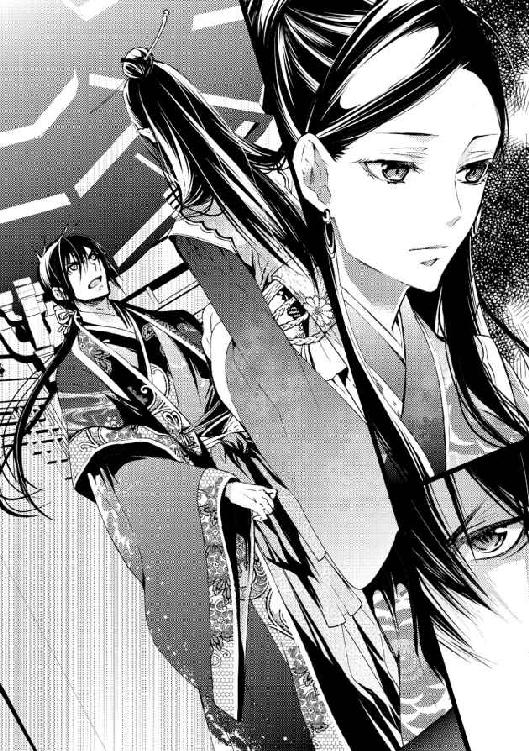
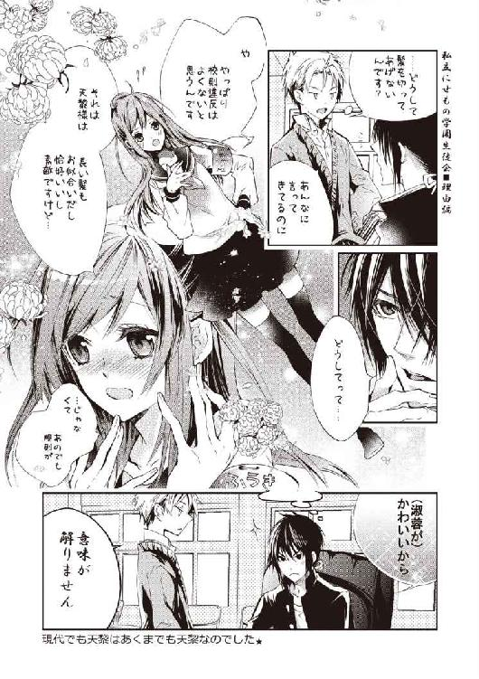

| にせもの公主の後宮事情: 2 再会は絆を試すものです？ (一迅社文庫アイリス) | |
| 雨川 恵 | |
| (2013) | |
イラストレーション ◆ すがはら 竜
にせもの公主の後宮事情 再会は絆を試すものです？
「殿下」
居宮に足を踏み入れると、控えていた宮女たちが素早く平伏する。歩廊に並ぶ彼女たちの姿に、淑蓉はぎょっとして足を止めた。大勢の人間が――それも大人が、子供の自分に恭しく礼を取る姿は、彼女にとっては異常事態以外の何物でもない。
だが、彼女たちが平伏しているのは、淑蓉にではないのだ――今、彼女の手を取って、宮女たちの前を当たり前のように通り過ぎようとしている、この人。
――俺の住んでいるところにおいでよ。
今日、そう誘ってくれたのは彼の方だった。彼女のために本を持ってきて、側で一緒に読んでくれた彼は、他にももっといろいろな本があると言ったのだ。異国の御伽噺の話を聞いた淑蓉は、すぐさまそれに夢中になった。美しい絵入りのだというその本を見てみたくて、喜んで彼についてきた、のだが。
「――淑蓉？」
足を竦ませた彼女に気付いたか、手を取った彼が振り返る。怪訝そうな顔は、今はすっかり見慣れた優しい人のものだったが、しかし今の淑蓉にはただ恐ろしく思えた。だって、この人はこの状況を、何とも思っていないのだ。皆が彼に注目して、皆が彼に平伏しているのに、それを何とも思っていない――そう言えば、宮女たちは彼を何と呼んだか。
「でん、か......？」
その敬称が何を意味しているのか、正確には解らない。しかし短い後宮での生活の中で、淑蓉は既に学んでいた。他人に平伏されるのは、『偉い人』だ。もし行き会ったときには、彼女も同じように伏せなければならず......そうできなければ、どんなに叱られても仕方がない。
――どうしよう......！
とっさに、少年の手を振り解く。二、三歩後ずさり、淑蓉は顔を引きつらせて呟く。
「あの......ごめんなさい。私、知らなくて......」
彼が『偉い人』だなんて知らなかった。いつでも、彼女に優しくしてくれる人。庭園の池の側で出会ったときから、彼女の話に耳を傾けてくれて......彼女のために、力を貸してくれる人。
でもきっと、そんな風に思ってはいけない相手だったのだ。また、誰かに怒られるだろうか。彼女のせいで、母が悪く言われてしまうだろうか。どうしていいか解らなくなって、淑蓉は逃げ出したくなった。駄目だ、そんなことをしたら余計に怒られる――そうだ、皆と同じようにしなくては......。
「駄目だ！」
しかし次の瞬間、彼が突然大きな声を上げたので、淑蓉はその場に固まってしまった。振り払ったはずの手に、きつく腕を掴まれる。まるで彼女の心を読んで、逃がすまいとするかのような彼の行動に、淑蓉はますます恐慌に陥る。怒られるのは嫌だった――優しかったはずのこの人に、責められるのはもっと嫌だ。
「待って、違うんだ。そうじゃなくて......」
言いかける言葉が、途中で消える。怯えて、恐々と彼を見上げた淑蓉は、そこでようやく彼の表情に気が付いた。彼女の腕を掴んだまま、彼はひどく困った顔をしている。困ったような、途方に暮れたような――彼女と同じく、何かを恐れるような表情。
「――行かないでくれ」
やがて、彼は小さな声で彼女に言った。
「お願いだから、怖がらないで。俺は......君に、嫌なことをしたりしない。今までずっと、そんなことはしなかっただろう？」
真剣な顔で問われて、淑蓉は思わず頷いた。もちろんそうだ。彼に嫌なことなんて、されたことがない。
彼女の答えに、彼は少し表情を和らげる。ほっとしたように彼女を見つめると、だったら、と続ける。
「君も、俺の嫌いなことはしないでくれ。――俺は、君に平伏されたくない」
「でも......みんなしてるのに」
「君は違う。君は......俺の、妹みたいなものなんだから」
「......いもうと？」
思いがけない単語に、淑蓉はそれまでの怯えも忘れて、きょとんと彼を見返した。誰かに、そんな風に言われたのははじめてだったのだ。
「そう。だって君の母上は、私の父上の妃になったんだ。だったら、君は私の妹だよ。絶対にそうだ」
――いもうと......。
ひどく不思議な感覚だった。ずっと、彼女に兄弟はいなかった――いたらいいなと思ったことはあるけれど、父が病を得、亡くなってしまった以上、それを望めないこともまた理解していた。彼女には、母しかいない――互いに思い合い、ずっと近しくいられる絆は、母にしかない。
でも、彼は――彼女を『妹』にしてくれると言ったのだ。
「じゃあ......てんれいさまが、おにいさまですね」
彼の名を口にして、淑蓉は知らず笑みを浮かべた。なんて特別な響きなのだろうと、嬉しくてたまらなくなる。『妹』なら、怯えなくて済む――優しい彼を怒らせたのではないかと心配したり、もう二度と会えなくなるのかと不安に思ったりしなくて済む。互いに大事な相手、母と同じ『家族』のように――ずっと近くにいられる。
気が付けば、彼は少し驚いたように彼女を見つめていた。先刻の彼女と同じように目を瞬いて、けれどやがて微笑みを浮かべる。面映ゆそうなその表情は、きっと彼女と同じことを感じたからだろう。今よりももっと近く、もっと慕わしい、特別な関係になれたような。
「おにいさま。わたしの――おにいさま」
――あの頃は、それで十分だと思っていた。
それ以上の繋がりを望みたくなるなんて、本当に、考えもしなかったのだ。
「......よくもおめおめと、私の前に出て来られたもんだね」
正面に座る凌蘭が、突然そんなことを言い出したので、淑蓉はぎょっとして椅子から腰を浮かせそうになった。言葉はもとよりその表情も、目を眇めてこちらを見る視線も、到底心温まるものとは言いがたい。
だが今、母が刺々しく睨んでいるのは淑蓉ではなかった。
「ちょっと、お母さん......」
気まずい雰囲気に、淑蓉は声を抑えて母に目配せする。頼むから、今だけは変なことを言わないでほしい。せっかく彼が来てくれたというのに、いきなり嫌な思いをさせたくない。
「ご挨拶に伺うのは当然ですよ」
しかし淑蓉がそうして気を揉んでいる間に、落ち着いた声が答えるのが聞こえる。凌蘭の険悪な視線を受けている当の本人には、しかし微塵も動じるところはない。顔色一つ変えず、どころか感じのいい笑みさえ浮かべて、天黎は澱みなく続けた。
「大事なご令嬢を我が妻にいただこうというのですから。たとえ国主の許しを得たにしても、あなたに礼を尽くすのは筋でしょう、義母上」
――我が妻。
当たり前のように発されたその言葉に、しかし淑蓉はたまらず俯いてしまう。だってこんなことは、夢にも想像したことがなかったのだ。自分が誰かの妻となるなんて――それも他でもない、彼女の『お兄様』が相手だなんて。
だが、既に占者によって吉日が選ばれ、婚礼の準備は着々と進んでいる。国主の認めた結婚に、賛成と祝福以外のものがあるはずはないが、しかしそれはそれとして、もう一人、この人にだけはちゃんと話しておかなければならない――淑蓉をここまで育ててくれた母には。
「まったく、解った風な口を！」
だが、目の前の母は依然、不機嫌そのものといった表情で天黎を睨んでいて、淑蓉はまたしてもいたたまれない気分になる。さっきからずっと、母はこの調子なのだ。天黎が、母の住む白琅宮に足を運び、慣例に則り淑蓉とともに母となる人に忠孝の礼を取ったところまでは、凌蘭も黙って儀式を進めさせてくれたが、いざ儀式が終わり、応接室に落ち着いた途端に、険悪な雰囲気を隠そうともしなくなった。
「何が、礼を尽くす、だ。よく言うよ。あんたの礼ってのは、よその娘を親の許しなく、かどわかすことなのかい」
凌蘭が言っているのは、天黎が功を国主に認められた例の事件に際してのことである。宮廷で行われていた不正を隠蔽する目的で、国主の寵妃の娘である淑蓉に縁談が持ち込まれたのだが、それを受け入れようとした淑蓉を、天黎は後宮から連れ去り、自分の屋敷に閉じ込めてしまったのだ。
「かどわかすとは人聞きの悪い。きちんとご報告した上で、納得していただいたものと思っていましたが」
「やってしまってから言いに来ておいて、納得なんかするわけないだろう！」
「それに、あなたのお役にも立ったはずですよ。もしあのとき淑蓉がここにいたら、たとえあなたでも、飛んでくる火の粉を避けるのは難しかったのではないですか、義母上」
「うるさいね、馴れ馴れしく呼ぶんじゃないよ。いいかい、はっきり言っておくよ。私はね、出し抜かれるのは嫌いなんだ。うまく立ち回れば足下を掬えるだろうだなんて、軽んじられるのもね」
まったく、何てことを言うのだ。天黎に対して歓迎どころか、牽制するような眼差しを向ける母に、淑蓉はついに我慢できなくなった。
「お母さん、いい加減にしてったら！ どうして天黎様にひどいこと言うの」
「何がひどいものか。私は本当のことを言っただけだよ」
「それが、せっかくここまで来てくださった方に言うことなの？ 天黎様は、お母さんに礼儀正しくしてくださってるじゃない！」
「......今の会話を聞いていてそう思えるなんて、我が娘ながらたいしたもんだ」
「お母さん！」
「それに、こんなものを送って寄越すような男は、礼儀正しいとは言わないよ」
言うと同時に、凌蘭は扉の側に控えていた宮女に目配せをする。心得た宮女が音もなく捧げ持ってきたものを見て、淑蓉は目を瞬いた。緋塗に、目にも綾な装飾の施された美しい箱。そこそこの大きさと相まって、一度見たら記憶に残る存在感があるが、しかし淑蓉には見覚えはない。こんなものが、母の居宮にあっただろうか......というか、これは一体何なのだろう。
「ああ、ちゃんと届いているんじゃないですか」
だが、その疑問の答えは思わぬところからもたらされた。呟く声に淑蓉が振り向くと、天黎はにっこりと笑みを返す。
「何だ、君は知らなかったの？ まあいい、君の様子を直に見られるなら、その方が嬉しいから」
「あの、これは......？」
「ちょっとした贈り物だ――さあ、開けてみて」
優しく促され、恐る恐る箱に手を伸ばす。何気なく触れた蓋の止め具が玉で作られていることに気付き、内心密かにたじろいだ淑蓉だったが、しかしその蓋の下から現れたものに対しては、とてもたじろぐくらいでは済まされなかった。
「――――！」
「どうだい、淑蓉？」
天黎が朗らかに訊いてくるのが耳に入ってはいたが、とっさには答えられない。箱の中は、眩い輝きで溢れていた。精緻な金細工に紅玉を嵌め込んだ髪飾り、真珠を連ねた簪に、花弁まで正確に再現された紅水晶の細工物、首飾りに腕環、淑蓉には用途の想像がつかないありとあらゆる宝飾品が、絹張りの箱の内側に所狭しと並べられているのだ。
「......えっと、天黎様......。これ、は、何でしょう......？」
「何って、花嫁衣裳には、このくらいは必要だろう」
「花嫁衣裳......どなたか、ご結婚されるのですか？」
いくら一生に一度のこととはいえ、これほど華美な装具を揃えた花嫁など淑蓉は見たことがないが、名家の娘や、国主の一族に連なるような血筋の娘なら、このような飾りも苦もなく身につけられるものなのかもしれない。一体どこのご令嬢が結婚するのだろうと、ぼんやり考えながら問い返した淑蓉だが、感じた視線にぎくりとして口を閉ざした。一瞬、細工物を前にした淑蓉と同じくらい愕然とした顔をした天黎は、すぐにむっとして彼女を睨んだのだ。
「......君は、俺と結婚すると言ってくれたと思ったんだが？」
「えっ？ は、はい、そうです！ あの......ご迷惑でなければ」
「その言い方は止めてくれ。君に迷惑がられているのかと勘繰りそうになる」
「そんなこと！ ......あ、ご、ごめんなさい。私、そんなつもりじゃ......」
「いい、迷惑がられても結婚するから。そういうわけで、目下俺は、他所の花嫁なんかに関わり合っている場合じゃないんだ。君の花嫁姿以上に見たいものなんかないし、飾りたいものもない」
「飾......」
「だから、ちょっとつけてみてくれないか。君に似合うと思って作らせたんだ。これなんか――ほら」
言いながら、天黎は箱から無造作に指輪を取り上げる。何気ない仕草で彼に手を取られ、指輪を嵌められた瞬間に、淑蓉はようやく事態を正しく理解した。ということは、つまり......。
「――私!? 私がつけるんですか!? ちょ、ちょっと待ってください、そんな、とんでもない......！」
「どうして？ 気に入らない？」
「気に入るとか入らないとかではなくて......！」
こんな分不相応な品の数々をどうしろというのか。身を飾るどころか、手を触れるのも恐ろしいくらいなのだ。贅を凝らした華やかな細工は、淑蓉のような素人目にも、とんでもなく価値のあるものだと解る。こんなものを身につけたら、いろいろな意味で押し潰されて、立っていることもできないだろう。
「本当、呆れた常識なしだね。親王殿下は」
二人の方を冷たく見やって、凌蘭が言う。天黎に対する母の言い草には決して納得できない淑蓉だが、今だけは母に頷きたい気分になってしまう。あらゆる点から鑑みて、彼女にこんな麗々しい装飾品など似つかわしくないのだ。
淑蓉は半ば涙目で、縋るように凌蘭を見つめた。こんな馬鹿げたことをするべきではないと、母からも天黎に言ってくれれば......。
「勝手にうちの娘を飾ろうとするんじゃないよ、厚かましい。それが誰の仕事なのか、知らないのかい」
と思ったのだが、何やら微妙に非難の方向が違う気がする。ええ、と淑蓉が戸惑っているうちに、再び天黎が凌蘭に向き直る。
「花嫁の衣裳を整えるのは、花嫁の父親の仕事でしょう。淑蓉は国主陛下に後見されているのだから、形の上ではあの人が父親役のはずです。父の仕事を息子が果たして、別におかしなことはない」
「大有りだよ！ あんたは婿じゃないか」
「だったら、聘礼の一部として受け取っていただいてもいいですよ。淑蓉がつけてくれるなら、形式にはこだわりませんから」
聘礼とは、婚約に際して男が女の家にする贈り物のことである。花婿となる男の財力を示すと同時に、花嫁側の返礼によって婚約を成立させるものであるが、花嫁にとってはいかに望まれて嫁ぐかを表すものとされる。娘たちはより立派で高価な聘礼を受けて嫁ぐことを夢見て、もし叶えばそれを生涯自慢に思うものだ。
しかしこの調子では、淑蓉は生涯聘礼のことを口にできなくなりそうだ。自分が、この贈り物に見合うだけの花嫁だと言う勇気はさすがにない。
「冗談じゃない、必要ないね。いいかい、娘を嫁がせるのは親の務めなんだよ。こんな飾り物なんか寄越して、余計な口出ししてくるんじゃない」
「お言葉ですが、真実、子を思う親ならば、何よりもまず立派な支度をして娘を嫁がせるよう考えるものではありませんか」
「言ってくれるね。私に、あんたが用意した程度のものが手に入れられないとでも？」
「飾ろうと思えば、いくらでも飾り立てられるとは思いますよ。でも、淑蓉に一番似合うものでなければ意味がないでしょう」
「そんなこと言われるまでもないさ。いいから他人は黙って引っ込んどいで」
「他人？ 俺は淑蓉の夫になるんですよ」
「私は最初からあの子の母親だよ」
「あ、あの二人とも、ちょっと待ってください！」
何やらどんどん彼女の手には負えなくなっていく会話を、淑蓉は慌てて手繰り寄せる。二人が揉めなければならないようなことなど何もないのだ――ここははっきりと、彼女の意見を言わなくては。
「天黎様、お気持ちは本当にありがたいですけど、こんなに高価なものを、ただいただくわけにはいきません......それに、お母さんも無理はしないで。衣裳なんてわざわざ私に誂えてくれなくても、お母さんのものを少しだけ貸してもらえれば十分だから......」
といっても、後宮の妃である凌蘭の持ち物であれば、たとえ借り物でも、身につける者を侮らせることはないだろう。淑蓉が、身につける様を想像しただけで既に位負けしそうな贅を尽くした品々は、そのほとんどが凌蘭が国主から賜ったものと聞く。
国主は、妃とした凌蘭のために様々な恩恵を与えてくれた。淑蓉自身もその一つだ。凌蘭の娘というだけで、何の関わりもない彼女を、後宮に住まわせてくれたのである。母が彼女に結婚の支度をしてくれるということは、つまり国主がその分を負担することになる――これ以上、無用の迷惑をかけることはできない。
しかしそう思って二人を説得しかけた淑蓉は、それ以上の言葉を口にすることができなかった。彼女を見やる二人は、どちらも全く同じ表情をしていたからだ。
「何を言ってるんだい」
先に口を開いたのは凌蘭だ。露骨に眉を顰めると、いかにも呆れ果てたと言わんばかりの眼差しを向ける。
「そんなことできるもんか。私はね、娘の支度も満足にしてやれない母親だなんて言われるつもりはないよ――あんたには、この国中の娘を心の底から羨ましがらせるような花嫁になってもらうからね」
「無理でしょ！ そんなのどう考えたって......」
「大丈夫だよ、淑蓉」
天黎の方は、もう少し優しかった。宥めるように彼女の手を握ると、穏やかな笑みを浮かべる。
「何も心配要らない、君には何もかも許されるんだから。婚礼衣裳に金糸の装飾を入れることだって」
「金糸!?」
しかし、言っていることはだいぶおかしい。淑蓉が上げた声は、半ば悲鳴に近かった。装束について事細かな規定がある棕河国の宮廷において、金糸の装飾は誰あろう、国主その人のみに許されるものだ。どれほど身分のある者であろうと――それこそ、国主の実の息子である天黎でさえも――身につければ大逆を問われる。
「それは男だけだ。女性の装飾には使えるとも。国主の許しがあれば、だけど」
「とんでもない！ 国主陛下にそんなこと申し上げるわけには......」
「でももう、いいって言ってくださったよ？」
「なっ......」
「へーえ、そりゃ本当かい？」
あまりのことに絶句した淑蓉が固まっている間に、凌蘭が口を挟んでくる。先刻までの険のある響きは和らぎ、興味を惹かれた様子だ。
「嘘なんか言いませんよ。このくらいは当然やるべきです。......これで、少しは考え直してくださる気になりましたか」
「あんたの言いなりになる気はないよ。でも......それはなかなか面白い考えじゃないか」
どうやら、相対す二人はどこかに合意を見出したらしい。彼女の恐慌はそっちのけで、婚礼衣裳の話を続ける二人に、淑蓉は何と言ったものか迷った。本当に、何ということを考えているのだろう。彼女を大事にしてくれる気持ちは嬉しいが、人間には向き不向きというものがある。そんな風に飾り立てられて人々の前に引き出されたら、きっと恥ずかしさで心臓が止まってしまう......。
――でも......ちょっと、仲良くなってる？
だが一方で、さっきまでのぎすぎすした雰囲気よりは、多少話題に問題があっても、和やかに話をしてくれている方がいいとも思う。淑蓉は密かにため息をつくと抗議を引っ込め、せめて二人がこれ以上とんでもないことを思いつかないようにと願いながら、彼女の母と未来の夫を代わる代わる眺めやった。
＊ ＊ ＊
「――天黎様。今日は、ありがとうございました」
やがて、後宮を辞去する彼を見送るために白琅宮を出た淑蓉は、ようやく二人きりになってから礼を言った。後宮の中では、そんな状況になれる瞬間は限られている――たとえば、白琅宮から後宮の外へ出る通用口まで彼を送っていく、わずかな間。
改まって切り出した淑蓉に、天黎は微かに首を傾げてみせる。
「ありがとうって、何が？」
「わざわざ、母にご挨拶に来てくださって......」
「何だ、そんなのは礼を言われるようなことじゃない。君をもらうのに、君の母上に許しをいただくのは当然のことだ。......まあ、一応は、許してくださってるみたいだし」
「あの、すみません......母が本当に失礼を......」
思い返すだけで、申し訳なくて身が細るような心地になる。母が天黎の何を気に入らないのか知らないが、あんな態度はない。それでも決定的に険悪にならず、とりあえずは常識的な雰囲気で対面を終わらせることができたのは、天黎が辛抱強く年長者に対する礼儀を守ってくれたおかげだ。
しかし天黎は、その無作法を一言も責めはしなかった。ただ黙って、隣を歩く淑蓉の頭に手を載せる。ぽんぽんと優しく叩かれて、淑蓉ははっと顔を上げ......そこでようやく自分が無意識に俯いていたことに気付いた。
「君がそんな顔をしなくていい、俺は気にしてないんだから。君みたいな可愛い娘を手放したくないと思う気持ちは、俺も解らないわけじゃない」
見上げた先に、優しい微笑みがある。胸がどきりと高鳴って、淑蓉は微かに頬が熱くなるのを感じた。『兄』であった頃から、天黎はいつだって優しかった。こんな表情だって、『兄』としてなら見慣れていたはずだ――けれど、もうそうではないと意識すれば、途端にどう振舞っていいか解らなくなる。
もう、『妹』ではないのだ。彼の優しさに甘えて、頼っているばかりではいられないのに。『妹』ではなく......もっと別のものになりたいのなら。
「本当は、私こそ、天黎様のお母様にご挨拶するべきなのに......」
天黎は、淑蓉の母のために気を遣って挨拶に来てくれたが、淑蓉が同じように彼に返すことはできない。天黎の母は、淑蓉が後宮で暮らすようになる前に、既に亡くなっている。
「そんなこと、気にすることはないよ。墓の下から文句を言ってくることもないだろう」
「そ、そんな仰り方はよくないです。きっと、天黎様のことを心配してらっしゃいます」
先刻天黎自身が言ったように、凌蘭が淑蓉を『可愛い娘を手放したくない』と思うならば、それは天黎の母親も同じことに違いない。淑蓉は改めて、会ったこともないその女性のことを考えた。幼い息子を残していかなければならなかったとは、どれほど無念だっただろう。天黎がこうして立派に育って、結婚するのだということを、伝えることができたらいいのだけれど。
もっとも、その相手が淑蓉だということは、歓迎されるかどうか解らないが。いやむしろ、立派に育った息子にどうしてこんな不釣り合いな嫁が、と、不興を買う可能性の方が高いのではないか......。
「......どうだかな」
想像上の義母の反応に密かに慄いていた淑蓉だが、隣でふと低い呟きが聞こえた。とっさによく聞き取れず、淑蓉は問い返すように視線を上げたが、しかし天黎は再び繰り返してはくれなかった。前を向いて歩きながら、天黎は何気ない口調で言う。
「父には挨拶してくれただろう。それで十分だ」
「国主陛下にご挨拶するのはもちろんですけど......あの、他にどなたか、ご挨拶に伺う方はいらっしゃいませんか？ お母様のご縁がある方とか......」
「いない」
答えは即座で簡潔だった。抑えた声音、しかし淑蓉は思わず口を閉ざす。よく聞かなければ解らない、けれど確かに宿るきっぱりとした響きは、それ以上の問答を望まないもののように感じられたからだ。
「......亡くなったのは随分昔のことだから、もうだいぶ疎遠でね。結婚の挨拶に行くような付き合いのあるところはないんだ」
迂闊に訊くことではなかったのかもしれない。思えば微妙な話題だったかと内心で反省しながら、できるだけ表情には出さずに、そうですか、と応じた淑蓉だが、どうやら気まずい思いは隠し切れていなかったらしい。天黎はぎこちない彼女の様子を見ると少し笑って、そうだな、と明るく続けた。
「どうしても君が挨拶をしてくれたくて仕方がないって言うなら、一緒に墓参りに行こうか。どうせ行かなきゃならない」
祖先の霊を祭る廟に結婚を報告するのは、結婚に際して行われる数ある儀式の一つである。ただ、天黎の祖先ということは、宮殿の一画に建てられている壮麗な宗廟に参るということで、淑蓉は想像しただけで緊張するのだが。心を奮い立たせて、決然と頷く淑蓉に、しかし天黎は笑みを浮かべたまま、意味ありげな眼差しで更に続ける。
「それに――二人きりになれる貴重な機会だし」
「！ そ、それは......」
そんなことを考えるなんて、罰当たりなこと――だが淑蓉も、そう言い切って天黎を窘めることはできなかった。気がつけば、高い壁に穿たれた小門と、瀟洒でこぢんまりとした建物が目の前に見えている。国主以外の人間が特別に許されて後宮を訪れるときに使う通用門と、そうした客人に応対するための堂だ。国主の親王である天黎は、特例中の特例として白琅宮にまで足を踏み入れることができたが、本来、後宮の外の者が立ち入れるのはここまでである。後宮の内と外――決して交わることのない、厳然とした境界。
どちらからともなく、二人は足を止めた。あそこに辿り着いてしまえば、またしばらくは会えなくなる。
「早く、君と一緒に暮らしたいな」
壁の方を見やってため息をつき、天黎が言った。
「そうしたら、ここで別れずに済むのに。まったく、やっとここまで来たっていうのに、たったこれだけしか一緒にいられないなんて」
「......はい」
天黎が、忙しい合間を縫って彼女に会いに来てくれていると知っている。だから不満など言うつもりはないけれど、もどかしさを覚えるのは淑蓉も同じだった。後宮で会える時間は短い、二人きりでいられる時間はもっと短い。もっと近くにいたいと思えば思うほど、側にいられる時間は短く、そして会えない時間は長く耐えがたくなる。
「おかしなものだな。もう何年も離れて暮らしてきたのに......やっと君に手が届きそうな今になって、一日だって待てないような気になる」
「わ、私も！ ......です」
まるで心を読まれたような言葉に、思わず力を込めて同意しかけた淑蓉だが、しかしすぐに我に返って顔を赤らめる。こんなことをあからさまに言ってしまうなんて、慎みのないと呆れられたりしないだろうか。でも本当に、心からそう思って......。
「本当に？」
だが、幸いというべきか、天黎はその点を責めたりはしなかった。赤くなった彼女の顔を覗き込んで、からかうように問いかける。
「本当に、そう思ってくれている？ 俺と離れている間に、やっぱり気が変わったなんて言わないかい」
「そんなこと！ 絶対あるわけないです！」
「ふうん、どうして？」
「どうしてって、それは......それは、だって、私だって」
ずっと、あなたが好きだったから――けれどその言葉が脳裏に浮かんだ瞬間、羞恥で舌がもつれる。とても口には出せなくて、淑蓉は助けを求めて相手を見上げたが、天黎はまるで気付いていない顔をして、ただじっと彼女を見返すばかりだ。
彼女の『兄』であった頃、天黎はこんなことはしなかった。優しすぎるほどに優しくて、いつでも親切に話しかけてくれて、彼女が言葉に詰まるときにはさりげなく助けてくれて......こんな風にからかわれることも、懇願に知らんぷりをされたことも、一度もない。
しかし今、『優しくない』彼のことを、嫌だとは少しも思わない。見慣れたはずのその顔に、見たことのない表情を見つけるたびに、胸が高鳴って仕方がない。
「......毎日、お話ししたいです。いろいろなことを。お側にいて......声が、聞けたらって」
頭に血が上るのが解る。淑蓉は俯いて、小さな声で、それでも必死に答えた。彼の表情を見ていたいのは山々だが、今は正面から顔を合わせていられない。
だが、彼女の懸命さは思いがけない反応で報いられた。身体の前で落ち着きなく組まれた自分の指先を見つめていた淑蓉の耳に、微かなため息が聞こえる。
「そう。......それは、俺の希望とは少し違うかもしれない」
「え!?」
驚いて、淑蓉は弾かれたように顔を上げる。再び向き合った天黎は、まだ微笑みを浮かべてはいたが、眇められたその瞳にある光は、今までのものとはどこか違う。
「違う、んですか......？」
「もちろん、君の望みは俺の望みだ。でも、それだけじゃ足りない」
「足りない、って......何が」
「――知りたい？」
低い声が耳に響いた瞬間、淑蓉の肩が震える。身が竦むような感覚は、しかし恐怖のためではなかった。
真っ直ぐに射抜かれるような瞳から、目が離せない。完全に足を止めた二人の距離は、いつの間にか触れ合えるほどになっている。底知れない色を宿した瞳がぐっと近付いて、淑蓉は知らず目を閉じる。これから起こることへの期待めいた予感が、苦しいほどに胸を叩いて――。
「......くそ、邪魔が入ったな」
だが、小さな舌打ちが空気を霧散させる。はっとした淑蓉が目を開けるのと、少し離れたところから声がするのはほとんど同時だった。
「――天黎様！ こんなところで何やってるんですか！」
その声には、聞き覚えがある。忌々しげに振り返る天黎の陰から、淑蓉もまた声のした方を見やる。建物の方から近付いてくるのは、想像通り面識のある相手だった。天黎が不機嫌そうに呼びかけに応じる。
「何なんだ、弘。おまえを呼んだ覚えはないぞ」
「そっちこそ、いつまで油を売ってるんですか。私だって、好きで探してなんか......」
主に負けず劣らず、遠慮のない口調で言いかけた青年は、しかしそこで淑蓉と視線が合うと、ぎょっとしたように言葉を切る。どうやら、彼女の姿は目に入っていなかったらしい。
「淑蓉様！ すみません、いらしたとは......大変失礼しました」
「こ、こんにちは、弘様」
天黎の侍臣で、常に彼に付き従っている弘瑜のことは、淑蓉も知っている。少し前、とある事情で、彼女が後宮の外にある天黎の屋敷で過ごしたとき、何くれとなく親切にしてくれた。
あのときは、丁寧過ぎるほど礼儀正しく彼女に接してくれた弘瑜だが、しかし実際の主である天黎に対しては少し違うらしい。意外なほど直截な言葉に、きょとんとしている淑蓉の側で、天黎が慣れた様子で言い返す。
「まったくだ。いいところで邪魔するな、間の悪い奴め」
「だから、邪魔したくてしたわけじゃありませんよ。――白琅宮から、使いが来ています。あなたを門の外までお見送りしたいと」
白琅宮からということは、母の差し金だ。淑蓉ははっとし、次いでその意図を悟った。『お見送り』と言いながら、天黎を門のところで待ち受けているということは、つまり『急げ』ということだ。「寄り道なんかしてないでさっさと帰りな」という母の言葉が聞こえる気がして、淑蓉は憤りとも気まずさともつかない感情で、軽い眩暈を覚える。
――お母さん......！
「......なるほど」
そしてその意図は、天黎にも正しく理解できているらしい。唸るような響きで呟いたが、しかしすぐに頭を振ると、一つため息をついた。
「仕方がないな。後宮で、あの方の不興を買ってもつまらない。戻るとしよう。――それじゃ淑蓉、また今度、近いうちに」
「あ、は、はい天黎様。また......お待ちしています」
最後に、お互い礼を交わし合うと、天黎は踵を返した。思いがけずあっさりした別れ、しかし却ってよかったかもしれない。こんなことでもなかったら......きっと自分からは、離れられなかった。
離れていく背中を見つめる――と、不意に天黎が振り返った。
「そうだ、言い忘れてた」
弘瑜に合図をして先に行かせると、彼は再び淑蓉の前に戻ってくる。目を瞬く彼女に向かって、にっこりと笑って言う。
「さっきの話、覚えている？」
「さっきのって......ん」
だが、考えている暇も答える隙もなかった。すいと伸ばされた手が、彼女の顔を上向けたときにはもう、唇に柔らかく触れられる。優しく掠めるだけの、けれど確かに温もりを伝える――心が惹かれて止まらなくなるような口付け。
「俺が毎日したいのは、こういうことなんだ。だから――覚悟を決めておいてくれ」
とっさに声も出せないでその場に固まってしまった淑蓉に、天黎は笑みを崩さずそう言った。彼女の頬を名残惜しげに撫で、けれどすぐに離れると、再び背を向けて去っていく。
「............」
そしてその後ろ姿を、淑蓉はただ見送ってしまう。今になって、急に息が苦しくなってくる。緊張にも似た震えが走るのをやり過ごしながら、慕わしい背中が視界から消えてしまうのを見届けて、淑蓉もまたその場を離れた。
どこかで、少し時間を潰さなければならない。きっと、ひどい顔をしていると淑蓉は思った。せめてこの熱と息苦しさが治まるまで、母の居宮に帰るわけにはいかない。誰かにうっかり出会う前に、まともな顔に戻らなければ。
けれど、きっと――彼にもたらされるこの熱が、完全に治まる日なんて、永遠に来ないに違いない。
「......それでは、失礼致します。拝謁をお許しいただいたこと、改めて御礼申し上げます」
「いらしていただいて、嬉しく思いますわ――ご主人にも、よしなにお伝えくださいませ」
恭しく平伏する客人の女性に、凌蘭が鷹揚に告げる。退出を促す定まったやりとりを経て、女性が静かに扉の向こうに去るのを見て、淑蓉もまた密かに息をついた。
「まったく、きりがないね」
そしてその思いは、彼女を側に置いて客の相手をしている母も同じらしい。普段はどんな客に対しても、堂々とした女主人として苦もなく振舞える凌蘭だが、さすがに多少は疲れるものと見える。この状況の名目上の当事者としての責任を感じないわけではなく、淑蓉は気遣わしく母を見やった。
「ごめんね、お母さん。迷惑かけて......」
彼女たちが応対を迫られている、このひっきりなしの客人の群れは、淑蓉の結婚話がもたらした、本意ならぬ副産物である。国主の寵妃として知られる凌蘭に、その娘の結婚を祝うという口実をもって近付きになる絶好の機会として、多くの野心ある人々が集まってくるのだ。
最初は、そうした思惑の申し出は全て断ろうとしていた凌蘭だが、あるときから逆に全てを受け入れることに決めたようだ。「心根のよくないのが、賄賂なんて取り出してからじゃ遅いからね」というわけで、最近の白琅宮には毎日のように、主に目通りを願う客が訪れるのだった。そして、その名目が結婚祝いである以上、淑蓉も当然同席していなければならない。
「何言ってるんだい」
一連の流れのきっかけになったことを詫びる娘に、凌蘭は形のいい眉を上げて、呆れたように言った。
「押しかけて来る方が悪いんだ、あんたが責任感じることじゃないよ。大体、これは皆、私の客だろう。こう言っちゃ何だけど、皆が皆、心からあんたを祝福しに来るってわけでもないし......だから、あんたこそ腹を立てたっていいんだよ」
「それは、そうかもしれないけど......でも私は、何もしないで座ってるだけだし」
腹を立てるほど、苦労することがあるわけでもない。面倒なことを母にばかり押し付けているような気がして、悄然としている淑蓉に、凌蘭は微かに笑みを浮かべる。呆れたような、けれど何もかも解っているという微笑み。
「とにかく、そんなことは気にしなくていいんだよ。......どうせ気にするなら、結婚相手の方にしてもらいたいね。ねえ淑蓉、本当にあの男でいいのかい。今ならまだ、別のに変えられるんだけど」
「変えられません！ もう、お母さん、どうしてそんなことばっかり言うの？」
この間、天黎が白琅宮にやってきてから、凌蘭はしばしばこんなことを言う。
そもそも最初から、娘が彼女の意見も聞かず選んだ結婚相手を、あまりよくは思っていなかったようだが、実際に顔を合わせたあの日以降は、いよいよはっきりと念を押すような言い方になってきた。
「天黎様はいい方よ。お母さんの選ぶような人とは違うかもしれないけど、でも、結婚するのは私なんだから」
一体、彼の何が気に入らないというのだろう。単純に条件だけ考えても、国主の親王殿下なんて相手に不足はないどころか、こちらがお釣りを払いきれないほどの良縁だ。もちろん、淑蓉はそんなことで彼と結婚しようと思ったわけではないけれど、しかし母に不満を抱かれるようなこともないはずだ。......まさかあの日、彼女の結婚衣裳のことで揉めたことを根に持っているわけでもあるまい。
「私の思い通りじゃないからって、文句を言ってるわけじゃないよ」
謂われない非難に抗議するような顔をしている娘に向かって、凌蘭は少し肩を竦めてみせる。
「それに、あの人を悪党だと思ってるわけでもない。ただ、ちょっと難儀な性質だと思ってねえ......苦労するよ、ああいう男と一緒にいるのは」
「？ それ、どういう意味......」
しかし、尋ねかけた言葉はそこで中断を余儀なくされた。扉のところに控えていた宮女が、新たな来客を告げたからだ。
凌蘭が応じる声を聞きながら、淑蓉は再び居住まいを正す。特に関心を払われることもないだろうが、せめて飾り物としてでもちゃんとしていなければ。
「どうぞ、お入りなさい」
やがて、宮女によって開かれた扉の向こうから、迎え入れられた客が姿を現す。当然のことながら、今度も女性である。若い、けれど娘と呼ぶほどには浮ついたところのない、落ち着いた雰囲気の女性。宮殿を訪れるのに礼を失しない程度の、後宮にあっては素っ気ないとも思えるほどの飾らなさだが、それが逆に彼女の美しさを際立たせているように思える。
今日だけでも、何度となく繰り返された対面。しかし淑蓉は、彼女を見た瞬間に、それまでにない奇妙な感覚に襲われた。整った白い顔、癖のない真っ直ぐな黒髪は、ただ美しいというよりも、絵画の中から抜け出してきたような独特の風情を持っている。一度会ったら印象に残るはずだから、この人に会ったことがないのは間違いない......だが、何かが気にかかるのだ。
――誰かに、似てる......？
「拝謁をお許しくださいまして、ありがとうございます」
しかし、薄ぼんやりとしたその感覚を、突き詰めることはできなかった。彼女は凌蘭の目の前で敷布の上に跪くと、妃嬪に対する後宮の礼に則って、深々と頭を下げる。
「はじめて御意を得ますことを、光栄に存じます。蔡玉伽と申します。我が主、陶伯源より、ご息女淑蓉様のご婚約に謹んでお祝いを申し上げるよう、言付かっております」
玲瓏玉のごとき、透明な響きのその声は、しかし同時に無機的で、感情めいたものはほとんど窺えない。祝賀の言葉としては空々しいものだが、ここではさして目くじらを立てるようなことではない。
「顔をお上げなさい。遠くからわざわざ、ご苦労でしたね。我が娘のために、ありがたいことです」
扉から、箱を捧げ持った宮女が数人現れる。事前にこの客人から受け取っていた贈り物だろう。こうして、祝いの品を持ち込んでくる客は多いので、そのこと自体は珍しいことではない。
しかし淑蓉は呆気に取られてそれらを見つめてしまった。黒漆に蒔絵の施された衣裳箱、螺鈿細工の文箱には紋様、容れ物からして贅を尽くした品々が、屋内の柔らかな光の中で上品な光沢を放っている。贈り物を持参する客は多いとはいえ、これほどのものはそうそうお目にかかるものではない。
淑蓉は、再び目の前の女性に注意を戻した。彼女は何と言っただろう。蔡玉伽、陶伯源という名を主と呼んだ......陶？
「何と素晴らしいこと」
並んだ贈り物の列を見て、凌蘭が言った。おそらくは母も多少驚いたに違いないが、あくまでも儀礼の範囲を超えない口調を心がけたようだ。愛想のいい表情は崩さずに、しかしその瞳だけがすいと眇められる。
「......陶家というのは、あの『都大路の陶家』ですね」
母の言葉に、玉伽が頷くのを見て、淑蓉も遅まきながら相手の素性を悟った。『都大路の陶家』とは、この棕河国の都湲洲で一、二を争う豪商である。宮廷より塩の売買を許され、東西貿易や金融へと商売を広げ、今や湲洲に並ぶ店のほとんどは何かしら陶家と繋がりがあるとされている。『都大路の陶家』と呼ばれる所以だ。
なるほど、絢爛な贈り物の数々も、陶家にあってはさしたる苦もなく用立てることができただろう。けれど、と淑蓉は思う。どうしてそんな豪商の一族が、彼女の結婚に関心など示すのだろう。
「お心遣い、本当に嬉しく思いますわ。ですが......我が娘には、いささか過分のご厚情かもしれません」
あくまでやんわりと凌蘭は告げたが、つまりは『こんなものをもらう理由はない』ということだ。過剰な贈与には、当然裏の思惑がある。どんな見返りを要求されるか解らないと、牽制する目的の言だと淑蓉にも解ったが、しかし相手の答えは意外なものだった。
「どうぞ、お納めください。主よりきつく申し付けられております――淑蓉様は、我が主にとっても重要な御方ですので」
不意に、玉伽に真っ直ぐに見つめられ、淑蓉は当惑した。冷静な瞳は澄んでいて、悪意や圧力は感じなかったが、その分厳然と何かを見定めようとしているように感じられる。
「我が主の祝賀をお受けください。本日は、こちらの判断でお見苦しくないものをお持ちしたつもりですが、何かお望みのものがあれば、是非ともご用立てさせていただきたいと、主は申しております」
「え？ ええと......」
「絹でも玉でも、どのようなものでも。たとえば――このようなものは如何でしょう」
見知らぬ相手に困惑して淑蓉が言葉に詰まっている間に、玉伽は素早く文箱を開ける。入っていたのは意外にも、煌びやかな文箱とは対照的な古い巻物だ。絹の紐を解き、広げて見せられたそれの正体を知ると、淑蓉は思わず声を上げた。
「これ......！ 『天幻宝巻』ですね！ それも黄平清って......すごい！」
今から百年以上前の作品で、元は庶民の間で語られる講談の種本として書かれたものだ。牛飼いの男が天界に足を踏み入れて、神仙の世界を旅する物語で、当時絶大な人気を博して、以降何年にもわたって改変を加えて語り継がれるようになった。しかし元々の作品は完全な形で残ってはおらず、現在では最初にどういう形で書かれていたか知る術はほとんどない。
「黄平清の絵巻物って、だいぶ原本に近いんですよね。今、広く知られている趙洵版も、関陽で発展した王廉之版も、これが元になってるって。話には聞いたことがあるけど、でもまさか本当にまだ存在してるなんて......」
食い入るように眺めてしまう。喜びに、つい我を忘れてまくし立ててしまった淑蓉は、しかしそこで咳払いを聞いてはっと現状を思い出した。見れば、母が苦い顔で目配せをくれている。玉伽は特に表情を動かしてはいなかったが、その瞳には微かな満足があるような気がした。
「す、すみません！ 私、つい......」
「お気に召しましたでしょうか」
「は、はい。それはもちろん......ですが、あの、どうして私にこのようなものを......？」
稀覯書は、彼女にとっては確かに素晴らしい贈り物に違いないが、一般的に女性に贈るものではない。棕河国では、女性や身分のない庶民に、文字が読める者は少ないのだ。絵巻物なので、文字が読めなくとも楽しめるといえば楽しめるが、この書の真の価値は絵にあるのではない。女性に贈る絵ならば、他にもっと美しいものがいくらでもありそうなものを。
「あなた様には、喜んでいただけるのではないかと、我が主が選んだものです」
淑蓉の問いに、玉伽は即座にそう答えた。こころなしか誇らしげな口ぶりに聞こえる。
「書物がお好きだと伺っております。あなた様になら必ずや、この書の価値をお解りいただけると信じてのことです」
「......あなたのご主人様は、女が本を読むのがお嫌いではないのですか？」
「そのようなこと、あるはずがありません。我が主は何よりも利を重んじる御方、何であろうと、能力があることを好まれるのです」
「............」
「ですから、このようなものをお持ちしました。あなた様にお喜びいただければと思えばこそです」
こんなことははじめてで、淑蓉は驚いてしまった。こうした贈り物は、大概は母のために持ち込まれるものだ。母の歓心を買うために......淑蓉自身を喜ばせるための贈り物をされることなど、ほとんどなかった。まして、彼女の女らしくもない趣味を、肯定されることなんて。
正直に言えば、とても嬉しい。どうしてそんなに彼女のことを知っているのかという思いはあるが、少なくともこの贈り主は、彼女のことを考えてくれたのだ。
――でも......。
「......お気持ちは、大変ありがたく存じます」
それほど考えている時間はない。やがて淑蓉は、意を決して口を開いた。
「ですが、私の一存で決めることはできません。少しお時間をいただいて......親王殿下にご相談申し上げてから、お返事させていただいてもよろしいですか。結婚のお祝いにいただくものでしたら、あの方にもお伝えしなくてはなりませんから」
厚意を無下にするようで心苦しかったが、彼女の立場としてはそう答えるしかない。どうしてこんな祝いを受けるのか、理由が解らない。稀覯書には大いに心惹かれたが、それで何か不都合なことに巻き込まれでもしたら、天黎にも迷惑をかけることになる。
「......これらは皆、あなた様にお贈りしたくお持ちしたものです。ご夫君とおなりになるとはいえ......親王殿下にお伺いを立てる必要はないかと存じますが」
「はい、でも一応」
結婚は一人でするものではない。二人の門出に対する祝いなら、二人で分け合って感謝するべきだから、という淑蓉の言葉に、玉伽は口を閉ざした。
「――承知しました」
やがて、深々と頭を下げて、玉伽はそう答える。
「では、我が主にはそのように、あなたのお言葉をお伝えします」
「あ、ありがとうございます。ご厚情を賜りましたこと、心から感謝申し上げておりますとお伝えください」
「かしこまりました」
淡々とした口調からは、淑蓉の答えに落胆したのか、あるいは生意気を言うと憤慨したか、それとも他の感情を抱いたかは解らなかった。しかしとにかく、これ以上の押し問答を繰り広げる気はないらしい。完全に儀礼に則った受け答えを交わした後、もう一度頭を下げて、不思議な雰囲気の来客は来たときと同じように静かに姿を消した。
「......『都大路の陶家』か」
玉伽が退出してしまうのを見送って、凌蘭が低い声で言った。
「まさか、そんなところから来るとは思わなかったね......面倒なことにならなきゃいいけど」
「え？ お母さん、陶家の方とお知り合いなんじゃなかったの？」
淑蓉は驚いて尋ねた。後宮から出ることのない妃嬪たちだが、後宮に品物を納めたい商家との繋がりはある。『都大路の陶家』も、その辺の利を狙ってここに使いを寄越したのだろうと思っていたのだ。
「いや？ 私じゃないよ、あんたに会いに来たんだろう」
「確かに、私にお祝いって口実だけど、本当はお母さんに......」
「いやだから、そうじゃないよ。あんたがどんな娘なのか、確かめに来たってところだろう。......うちの娘を値踏みしようなんて失礼な話だけど、まあ祝いと言ってきたものを追い返して揉めても縁起が悪いからね」
「値踏み？」
思いがけないことを言われて、淑蓉は唖然としてしまう。と同時に、先刻の玉伽の眼差しを思い出した。真っ直ぐに彼女を見つめて逸らさず、彼女の全てを映そうとするような......。
だが、どうして見も知らぬ相手に、そんなことをされなければならないのか。
「どうしてって、そりゃあんたは......」
しかし一方で、母も娘の反応に当惑したらしい。淑蓉に劣らぬほど呆気に取られた顔で娘を見やると、諭すように何か言いかけたが、ふと眉を顰めて言葉を切る。
「もしかして......あんた、何も聞いてないのかい？ 陶家について」
「え？ い、一応は知ってるよ。たくさんお店を持って、成功しているお家なんでしょ？」
けれどその答えは、母の期待するものではなかったようだ。凌蘭は目を瞬いて彼女を見つめると、何やら考え込むような顔で呟いた。
「あんたの方が、よく知ってると思ったけど......本当に何も知らないのかい？」
「私が何を知らないっていうの？ 陶家の人に、知り合いなんていないよ」
幼い頃に、母に引き取られて後宮で暮らしはじめてから、外の世界との繋がりはほとんどない。子供の頃に一緒に遊んだ友達がいないわけではないけれど、一介の官吏の娘である淑蓉に、まさか豪商の一族と近く接することがあったとも思えない。
だが、それをよく知っているはずの母は、依然難しい顔を崩さない。何か言いかけては、迷うように口を閉ざしたが、やがて一つため息をつくと、まあいいよ、と呟いた。
「何考えてるんだろうね、あの子は......。ああ、でも、私から言うこともないか」
「どういうこと？ 何か、私が知っていなきゃいけないことがあるの？」
「どうだろうね」
はぐらかされると、何だか不安になる。淑蓉は重ねて母に問おうとしたが、結局口にすることはできなかった。凌蘭はこの話はお終いとばかりに手を振って、娘の問いを払ってしまう。
「とにかく、私が言えることはないよ。あんたは、自分で言ったことをちゃんと果たせばいいんだ」
「私が？ 何を......」
「さっき、陶家の使いに言っただろう――会うたび浮かれてばかりいないで、このこともよく、親王殿下にご相談申し上げるんだよ」
＊ ＊ ＊
「淑蓉」
知らせを受けた淑蓉が、大急ぎでそこへ辿り着いたときには、既に相手は彼女を待っていた。後宮の通用門の側、外からの訪問者との面会に使われる一室にいた天黎は、遅れて来た待ち人に文句も言わず、嬉しそうに振り返って名を呼んだ。
「すみません！ 天黎様......お呼び立て、しておきながら......お待たせしてしまって......」
とはいえ、淑蓉も彼を待たせるつもりなどなかったのだ。相談したいことがあるから、時間のあるときに後宮を訪れてほしいと外へ言伝はしたが、あくまで忙しい彼の手が空いたときで構わないというくらいのつもりだった。淑蓉の予想としては、宮廷での政務が終わった後、夕刻にでも来てくれれば嬉しい、もし忙しければ数日後になるかもしれないというくらいのものだった――まさか使いを頼んで半刻もしないうちに、やってきてくれるとは思わなかった。
「待ってはいない、今来たところだ。君こそ、そんなに息が上がるほど急がなくてよかったんだよ」
苦笑というより、それを通り越して心配そうな声で言われたが、淑蓉はすぐに答えることができなかった。天黎を待たせてはいけないと思って、白琅宮から走れるところは全力で走ってきたのだ。宮女をしていた頃ならきつく叱責されただろうし、今でも決して褒められたことではないが、使いの者から既に彼がやってきていると伝えられたら、他にどう行動しようがあるだろう。
「すみません......」
「謝らなくていいから、こっちへおいで。大丈夫かい」
息切れのあまりに小さく咳込むと、天黎は彼女を支えて、近くの椅子に座らせてくれた。隣に腰を下ろした彼に労わるように背を撫でられると、淑蓉は全力疾走とは違う理由の動悸がしてくるのを感じたが、しかしその手が抗いがたく心地良いのは確かだ。やがて息が治まってくると、天黎は来客用に用意されたはずの茶を手ずから淹れ、彼女に渡した。
「ほら、ゆっくり飲んで。......少しは落ち着いた？」
「は、はい......ありがとうございます」
「君がそんなに慌てるなんて、珍しいな。どうしたんだ」
「こんなに早く、来ていただけるなんて思わなくて......。あの、お仕事は大丈夫ですか？ お邪魔をするつもりは......」
「ちょうど都合がついたから、問題ないよ。それに、せっかく君が呼んでくれたんだ。一刻も早く会いたいだろう？」
「そんな......」
「――君は、会いたくなかった？」
そんな訊き方はずるい。会いたいとか会いたくないとかいう問題ではなく、仕事に差支えるようなことはしたくないということで......けれどそう言おうとしても、一旦胸中に湧き上がってきた思いを留めておくのは難しい。
「......お会い、したかった......です」
相談しなければならないのは確かだけれど、同時に彼に会える口実を見つけたのは嬉しかった。彼の邪魔をしたくないのは本当だけれど、それでも会いたくて仕方がない。少しだけでも、何かのついででもいい。
そしてその気持ちは、相手にもちゃんと伝わったようだ。どぎまぎしながら、けれどはっきりと口にした淑蓉に、天黎は嬉しそうに笑った。彼女の手から茶を取り上げて側の卓子に置くと、ぐいと彼女を抱き寄せる。
「......はじめてだな」
「？ 何がですか？」
「君が、俺を呼んでくれたのははじめてだ――昔から、俺が会いたいばかりで、訪ねていかなきゃ君に会えなかった」
「そんな、私だって......でも、天黎様は親王殿下ですから」
彼女が会いたいなどと言って、気安く訪ねていける相手ではなかった。今だって本当は、まだどこかで疑っているくらいだ。何の身分もない彼女が、彼の側にいられるなんて。会いたいと思ったら会えて――どころかやがては離れずに、一緒に暮らせるようになるなんて。
想いを込めるように、力を込めて抱きしめる。腕の中に収まった彼女を優しく抱きしめ返してくれた天黎は、微かに笑ったようだったが、やがて耳元で小さく呟いた。
「別に、責めてるわけじゃない。ただ......君に呼ばれると、とても嬉しい。君に必要とされるのは」
「天黎様......」
その声の響きが、彼の胸から響いてくる鼓動が、彼女の心を満たしていく。頭を預けたまま、淑蓉は自分の鼓動も次第に落ち着いてくるのを感じていた。吸い込んだ息が、身体の深いところにまで入り込んでいく感覚。
不思議なことだ。彼と相対しているときはいつだって、震えるほどどきどきするのに、こうして腕の中にいるときは、自分でも驚くほどに落ち着いて安心できる。どちらも同じ彼なのに、どうしてこんな風になるのだろう。苦しくなったり慌てたり、息が詰まるような気にさえなるのに――どうしてこんなにも、この人の側にいたいと思うのだろう。
満たされた沈黙の中、微かに聞こえる鼓動に耳を澄ます。こうしている彼女にだけ聞こえる、彼の音。いつまでだって聞いていたい、このままずっと――彼が仕事に戻ってしまうまで......。
――......仕事！
「あ、ご、ごめんなさい天黎様！ 私、ぼんやりしてしまって......！」
しまった、心地良さに流されている場合ではなかった。我に返った淑蓉は、慌てて天黎を押し返して距離を取る。相談があると切り出して、彼をここまで呼び立てておきながら、時間を無駄にさせるわけにはいかない。
だが、忙しい身であるはずの相手は、彼女の態度を喜ばなかったようだ。天黎は不満そうに眉を顰める。
「......いきなり、そう邪険にされると傷つくな」
「邪険になんてしてません！ す、少し離れないと、お話しできないじゃないですか」
「俺は、さっきのままでもいいと思う」
「よ、よくないです！ せっかく、お時間を割いて来ていただいたのに......早くお戻りにならないと」
「別に構わない。俺がいなくても、弘がうまくやるよ」
「そんな、構います。弘様が......」
「淑蓉は、俺とこうしているのは嫌い？」
背に回された腕は、まだ離れない。漆黒の瞳に覗き込まれて、淑蓉は一瞬言葉を失う。囁く声に、胸が高鳴る。優しく微笑みかけられたら、もう視線を逸らせなくて――。
――って、ちょっと待って！
「駄目！ ――そんなこと仰ったって、駄目です！」
すんでのところで、淑蓉は声を上げる。これでは完全に、同じことの繰り返しではないか。と同時に、ようやく相手の意図を悟る。
「もう、私で遊ぶのは止めてください！ からかうなんてひどいです」
気がつけば天黎の表情は、柔和な笑みから、悪戯っぽいそれへと変わっている。彼女にとってはまだ見慣れない表情。『兄』であった天黎は、決して彼女を困らせたり、意地悪をしたりはしなかったのに、最近は時々こんなことを仕掛けてきて、慣れない淑蓉を驚かせるのだ。
本当は、そんな彼も嫌いではない。つい一緒になって笑い出しそうになるが、そこを必死でこらえて、淑蓉は精一杯怖い顔をして天黎を睨んだ。こうでもしなければ、いつまでも遊ばれてしまいそうだ。
「遊んでなんかいない。君があんまり可愛いから、いろんな表情を見たくて真剣なんだ。そんな顔も......でも、まあ、仕方ないな」
淑蓉の懸命の訴えが伝わったのか、天黎はため息をつくと、彼女の背に回した腕を離した。
「それで――何かな。俺に相談したいことって」
「は、はい。実は、結婚のお祝いにいただいた贈り物のことで」
白琅宮にそうした贈り物が多く届けられていることは、天黎も知っている。結婚祝いと言うからには、夫婦二人で共有すべきもののはずだが、あまりにも件数が多いことと、淑蓉の方に贈ってくるのは主に母絡みの関係者だということから、祝いや贈り物にはそれぞれ別個で対処するように決めている。天黎は天黎で、そうした義理の関係は腐るほどあるから、この上白琅宮に届けられるものまでは手が回らないだろうというのが実際のところだ。
「何か困ったことでもあったの？」
「困った、というほどではないんですけど......。母も面識のない方から、高価なものをいただくことがあって。どうしたらいいのか、ご相談したいんです――先方にも、天黎様にご相談してから、お受けできるかどうかお返事しますと申し上げました」
「面識のない相手ってことは、例によって付け届けの類じゃないのか。君の母上は慣れてらっしゃるだろう。うまく片付けてくれると思うけど」
「それが、そういうのとも少し違うみたいで......母が言うには、その方は母ではなくて、私を見にいらしたそうなんですけど」
玉伽と名乗った女性の、相対したときの眼差しを思い出す。感情を感じさせない視線は、その分だけ冷静に彼女を判断していたように思える。
けれど、一体何のためにだろう。分不相応に国主の御子と結婚する娘はどんなものかと思われているのは確かだろうが、そこにはつきもののはずの悪意や妬みなどというものも、あの瞳にはなかったのだ......。
「......君を見に、だって？」
しかし淑蓉の説明は、いささか誤解を招くものだったらしい。天黎は顔をしかめると、途端に不機嫌に言う。
「何だそれは。どこの不届き者が、君をそんな目で見るんだ？ 大体、どうして後宮に男なんか......まさか君の母上は、未だに君を宮女として扱き使って、安易に誰にでも会わせてるんじゃないだろうな」
「え、男......？ あ、ち、違うんですそういう意味じゃなくて！ いらしたのは女性です......えっと、彼女をお使いに出された方は、男の方のようでしたけど」
誤解を解くつもりで説明したが、あまり効果はなかったようだ。天黎がますます不穏な表情になるのを見て、淑蓉は急いで言葉を継いだ。
「本当に、面識のない方なんです。お名前をお聞きしたのもはじめてで......。使者としていらした方は、蔡玉伽様と仰いました。陶伯源様と仰る方が、結婚の贈り物をくださると......あの『都大路の陶家』の方なのだそうです」
はっ、と息を呑む音がしたと思ったのは、おそらく気のせいだっただろう。実際には、何の音もしなかった。張り詰めた沈黙――息をすることさえ憚られるような。
突然の変化に、淑蓉は当惑して天黎を見上げる。先刻まではあからさまにむっとした表情を浮かべていたその顔には、もはや何の表情もない。
そうしていると端整な顔立ちが際立って、目を奪われてもおかしくないのに、しかし淑蓉は思わず竦んでしまう。この顔は、知っている――彼女の優しい『お兄様』が、決してそれだけの存在ではないとはじめて知った、あの夜に。
――怒って......る？
「天黎様......」
あの夜は、彼の怒りは彼女に向けられたものだった。けれど今はそうではないらしい。恐る恐る呼びかけた淑蓉に、天黎は我に返ったような顔をした。凍った空気を払うように、深くため息をつく。
「......それは、いつの話？」
「は、はい。今日お見えになったばかりで......」
「そうか、それはよかった。さっさと片付けた方がいい」
「え？」
「早く知らせてくれてありがとう。あとはこっちで手配して、全部送り返すから、君の母上にもそう伝えてくれ」
「え、え、でも......」
優しげな口調はいつも通り、けれどその奥に有無を言わさぬ響きがあることを、淑蓉は聞き逃さなかった。厳然たる拒絶、それもただ避けるというよりは――まるで忌まわしい何かに対するもののような。
「......天黎様は、あの方々をご存じなのですか？」
意を決して尋ねる淑蓉に、しかし返答はひどく素っ気ない。ほとんど冷然とも言える声が、ためらいもなく言い捨てる。
「関係なんか、あるはずない。祝いなんて言われる筋でもない――関わるつもりもない」
「............」
「だから、あとは俺に任せてくれ。もう、気にしなくていい。大丈夫だから」
最後は笑みさえ浮かべて、天黎はそう言って話を打ち切った。穏やかな微笑みは、しかし彼の心を映してはいない。その表情は、彼女のためだけのものだからだ。彼女を宥めて、安心させて、心配要らないと言うためだけの――彼女が一番、見慣れた表情。
――でも......。
ずっと、その表情が好きだった。彼が優しく微笑んで、大丈夫だと言ってくれれば、誰に何と言われるよりも安心できた。
けれど今、同じ彼の微笑みを見て、同じようには思えない。もう、彼女は『妹』ではないのだ。彼が『兄』であったときと同じように庇われたいわけではなくて――もっと、別の存在になりたいのに。
「......淑蓉？」
黙り込んだ彼女の様子を怪訝に思ったのか、天黎が不思議そうに覗き込んでくる。その瞳に、彼女の様子を気遣う色しか見当たらないことに気付いて、淑蓉は尚更胸が苦しくなった。
「あの、天黎様。私......。その、私にも何か、お手伝いできることがあれば......」
だが、せっかく言いかけた言葉も最後まで続けられない。天黎は緩く頭を振ると、再び彼女を抱き寄せたのだ。
「いい。本当に、君が気にかけるようなことじゃない。もう、面倒なことは起きないよ」
優しく抱きしめられてそんなことを言われたら、それ以上何も言えなくなる。再び収まった彼の腕の中に、しかし先刻までの満たされた心地良さはなかった。もどかしくて、じれったい――こんなに近くにいるのに、側にいないような気がする。本当に触れたいものに、どうしても手が届かない。
だからせめて離れないように、淑蓉はぎゅっと彼を抱きしめ返す。二人きりの静寂に息を潜めても、しかしあの落ち着いた鼓動の音は、もう聞こえてこなかった。
棕河国の首都湲洲にある国主の宮殿は、朔稜城と呼ばれる。神仙の住まうとされる北の朔天山脈に由来する名を持つ、この国の中心とも言える場所だ。
宮殿の北側は後宮、中心には国主が政務を執る壮養殿をはじめ、国主の公の生活に使う建物が幾つかある。そして南側、宮殿でもっとも広い敷地が割り当てられている区画は、官吏たちが勤める役所である。宮殿に出仕する者だけで何百といる官吏たちが、それぞれ自分の配属に従って、少しずつ特徴の違う屋根を持つ建物群の中にある、無数の房室を行き来している。
そして今、淑蓉もまた、そうした建物の一つにいた。落ち着きなく辺りを見回してしまうのは、こんなところへ来るのははじめてだったからだ。
後宮を黙って抜け出した経験は多い彼女だが、行き先は専ら書庫と、それに隣接する繙閲所だった。宮殿内の位置からすれば、外局ともいうべき目立たない場所で、だからこそあまり気後れせずに出入りできたのだが、しかしここは違う。宮殿の南側でも、もっとも影響力を持つ場所の一つだ。
通路を忙しそうに行き来する官吏が、通り過ぎざま怪訝そうに彼女を見やる。こんなところに女がいるのが珍しいからだろう。淑蓉は、後宮の外に出る宮女のしきたり通りに、頭から被った布を深く下げて視線を交わした。たじろぐ内心を隠し、いかにも仕事を果たしにきただけ、という風を装って、待ち人が現れるのを待つ。
ありがたいことに、そう長く待たされることはなかった。やがて、通路の向こう側に現れた馴染みの相手に、淑蓉はほっとして笑みを零す。
「ああ、よかった。ここにいらっしゃって......」
「――淑蓉様!?」
だが一方で、相手は全く逆の反応を示す。驚愕の表情で彼女の名を口にした彼は、しかしはっと息を呑んで口を噤むと、急いで彼女の側へやってくる。辺りの官吏たちに紛れるような、地味な色の服を着ているが、官職を表すものはない。代わりに、主を示す華の印を身につけた青年は、彼女の前まで辿り着くと、今度は声を抑えて言った。
「どうなさったんですか？ こんなところに......」
「すみません、弘様。お忙しいところお邪魔してしまって」
「そんなことはいいんですけど、でもどうしてわざわざ......何かお急ぎの御用ですか？ 申し訳ありません、あの方は今、会議に出かけられていて、ここにはいらっしゃらないんです。ああでも、もしよかったら、私の方からお伝え」
「あ、ま、待ってください、違うんです。あの、天黎様じゃなくて」
そのまま、てきぱきとことを進めてしまいそうな弘瑜を、慌てて引き留める。怪訝な顔をする彼に、淑蓉もまた声を抑えて続ける。
「その、実は......弘様に、お伺いしたいことがあって」
「......私に、ですか？」
「はい――できれば、天黎様には内緒で」
後ろめたさを堪えながら頼んだ淑蓉に、弘瑜は目を丸くした。ぎょっとしたように顔を強張らせると、左右に視線を走らせる。迷惑だったかと、淑蓉は申し訳なく思ったが、しかし弘瑜は彼女を追い返したりはしなかった。当惑はそのままに、けれど優しく、どうぞ、と通路を指し示す。
「こちらにおいでください。......ここでは、少し目立ち過ぎるでしょう」
淑蓉が待たされていた、官吏たちが働く大堂の片隅を出て、小さな房室が並ぶ通路を進む。先刻までいたところとは打って変わって、ひどく静かだ。時折、その一室から現れては別の場所へ消えていく官吏の姿があるが、誰もが恭しく、張り詰めた雰囲気に満ちているように見えて、淑蓉もまた緊張を覚える。この辺りはきっと、高位の官吏が使う場所なのだろう。
しかし、前を行く弘瑜には、気後れするような様子はなかった。似たような扉の中から、迷いなく一つを選んで、淑蓉を招き入れる。
「お入りください。何もないところで恐縮ですが......とりあえず邪魔だけは入りませんから」
弘瑜はそう言ったものの、中はそれほど殺風景というわけでもなかった。大きめの卓子に、椅子が幾つも用意されているのは、ここが話し合いに使われる房室だからだろう。明かりや文箱といった必要なものしか置かれていないが、そのどれもが、控えめな装飾ながらもきちんとした品物であることが窺える。整然とした雰囲気は、しかし決して威圧的ではなく、不思議と居心地がよさそうだ。
「......ここは、天黎様が日頃お使いになる場所なのですか」
「の一つです。ですから誰も勝手に入ってきたりしませんし、聞き耳を立てたりもしません」
促されるままに椅子の一つに腰を下ろした淑蓉は、不思議な気持ちで辺りの様子を窺った。ここにいる彼のことを、懸命に想像しようとする。彼の全てを知っているわけではないと、頭ではよく解っていたはずなのに、こうして実際に自分の目でその証拠ともいうべき場所を見てみると、途端に身に染みて思い知らされる。
本当に、何も知らないのだ。彼女の知らないところで、彼が何をしているのか知らない。彼が何を考えて、どう感じているのか解らない――優しい笑顔に隠されたその奥にあるものを、察することさえできない。
「すみません、ここでは火が使えないので、冷たいものしかご用意できないですが」
言いながらも手慣れた様子で、弘瑜が茶を出してくれる。淑蓉ははっとして、改めて詫びた。
「ありがとうございます。......本当に、急にすみません」
「いえ、こちらこそ、あんなところでお待たせしてしまって申し訳ありません。まさか、淑蓉様がおいでとは思わなかったものですから。仰ってくだされば、人目につかずこっちへご案内できたんですが......何か、こちらの者が失礼をしませんでしたか」
「いいえ、そんなことは全然。ちゃんと取り次いでくださいましたし......それに、名乗らなかったのは私ですから」
もし淑蓉の素性を知らせたら、気を利かせた誰かが、彼女の訪問を天黎の耳に入れるかもしれない。ここに勤めている官吏たちが、淑蓉のことなど知っているのかどうかは解らないが、上司の結婚話であるから知っている者もいるだろう。
「ああ、そういう意味では、名乗られなかったのは正解かもしれませんね。......実際、さっきあそこであなたと話しているのを周りに見られただけでも、面倒なことになりはしないかと今から気が気ではなくて」
「え！ そうなんですか!? そんな、天黎様にご迷惑をおかけするつもりでは......！」
「違います。『淑蓉が来たのに、何で俺に会わせないんだ！』ってうるさいのが一人いるので、知られたら面倒だというだけのことです。まあ、その辺は何とかできると思いますが......それにしても」
弘瑜は少し言葉を切ると、困ったように淑蓉を見やる。彼女に何と言っていいか解らないという顔をしたが、やがて小さくため息をついた。
「あの方は、今度は一体何をやらかしたんです？ 何か様子がおかしいと思ったら......。だから、いくら良かれと思っても、まず淑蓉様にお伺いしてからにしなさいと言ったのに！」
「え......？」
「淑蓉様、これは是非忠告させていただきたいんですけど、もし嫌なことを迫られたら、遠慮なく嫌だと仰った方が絶対にいいですよ。あの方も、悪気があってやってるわけじゃないと思うんですけど......。大丈夫、あの方はそのくらいであなたを嫌いになったりしませんから。というか、そのくらいじゃ刺激にもならないくらい、手のつけようがなくこじらせてるので大丈夫ですから」
「は、はい......？」
とっさに返事ができなくて、淑蓉は目を瞬く。しかし弘瑜が至って真剣な表情で、主のために弁明しているようなのに気付いて、ようやく彼の勘違いに気付いた。
「あ、ち、違うんです弘様。天黎様が何かなさったということではなくて」
「え、違うんですか？ 本当に？ 婚礼の衣裳をああしろこうしろと指図されたとかいうことではなく？」
「それは、されました......。でも、それは別に構わないんです。嫌なんてことはないです」
まあ、本音を言えば、気後れするのは確かだが......けれど、自分には勿体ないと思う反面、気にかけてくれて嬉しいとも思う。天黎が喜んでくれるなら、衣裳なんて何でも構わないのだ。
淑蓉の説明に、弘瑜は何か言いたげな顔つきになったが、しかし結局その件については何も言わなかった。彼女の話に一応は納得したのか、そうですか、と頷く。
「淑蓉様の方で気にされていないなら、いいんですが......。でも本当に、あの方の勝手に何でも付き合っては駄目ですよ。嫌なことは嫌とちゃんと仰らないと、あとで大変なことになります――先日は、それで何か喧嘩でもされたのかと」
何気ない言葉、けれどそれが何を示しているかに思い当たって、淑蓉はどきりとする。そう、まさにそのことのために、彼女はここまでやってきたのだ。
「......どうして、そう思われたのですか？ 喧嘩だなんて」
「ああ、いえ、あの方はあなたとお会いになったときは、大抵機嫌がいいものなんですけど、あの日はちょっと違ったので。目に見えて不機嫌ってわけでもなかったんですが......何かあったのかなと思って」
やっぱり、と、淑蓉は暗い気持ちになった。やっぱり、何でもないことではなかったのだ。優しく笑って抱きしめてくれた天黎のことを思い出す。あの人は、いつもそうだ――彼女のことはこの上なく大事にして、庇って守ってくれるけれど、本当のことは何も教えてくれない。
「......実は、そのことで、弘様にお伺いしたいことがあるんです」
そんなのはあんまりだ。優しくされるのが嬉しくないわけではないけれど、相手にされていないと思うと、悲しくて泣きたくなる。相手の何もかもを知ろうとするのは傲慢だと解ってはいるが、それでも――大変なことがあるのなら、相談くらいはしてほしいのに。
「弘様は、『都大路の陶家』をご存じですか」
尋ねられた弘瑜は、一瞬、きょとんとした顔をした。話の流れからすれば唐突な質問に、面食らったらしい。
「あの有名な、都の豪商のことですか？ ええ、まあ、名前くらいは知ってますけど」
「その陶家と、天黎様の間に、何か関係するようなことはないですか？ 何か......あまり、よくないことが」
「何ですって？」
いよいよ困惑した様子の弘瑜に、淑蓉は白琅宮に訪れた使者と、彼女がもたらした贈り物のこと、そしてそれを天黎がどう扱ったかを説明した。表面上は何の問題もない処置、だが淑蓉には、天黎の態度には、ただいけ好かないという以上の何かがあるような気がしてならない。天黎は生まれついての貴人であるから、利を狙った人間が欲得尽くめで近付いてくることくらい、本来何とも思いはしないはずなのだ。無難に受け流すこともできるのに、何故『陶家』に対してだけ、あんな態度を見せるのか。
「......ああ、そういえば、後宮に人を手配するように言われましたね。荷物を運び出すのに人手が要るとか何とか......もしかして、そのことだったんですか」
淑蓉の話を聞いた弘瑜は、何かに合点したようにそう呟く。が、淑蓉の問い自体には、はっきりとした答えは返せないようだった。
「私の知る限りでは、そんなことはなかったと思います。そもそも、天黎様の口から陶家の名前を聞いたことすらないですし」
「そうですか......」
「――ですが、それで何もないと決まったわけでもありません」
手がかりを得られず悄然とする淑蓉に、しかし思いがけず真剣な顔で弘瑜は言った。
「私があの方にお仕えしているのは、ここ五年ほどのことですから。その前に何かあったとしても、私の耳には入ってこないでしょうね。私は地方の出で、都の動向なんて全く知らなかったですし......あの方も、昔のことをいちいち仰るような方でもないですから」
「昔......に、何かあったとお考えですか？」
「解りません。でも、できるだけ調べてみますよ。......様子がおかしいのは、確かですしね」
そこまで言うと、弘瑜は淑蓉を見やって、苦笑めいた笑みを浮かべた。何事もなければそれでいいわけですし、と宥めるように言われ、淑蓉もようやく笑みを返す。自分でも少し引きつって感じたことを考えると、よほど深刻な顔をしていたのだろうか。
しかし、とりあえずここへ来た目的は達成された。弘瑜なら、何かあればすぐに気付いて教えてくれるだろう。それに――きっと天黎も、彼になら話せることもあるかもしれない。彼女には何も言ってくれなくても。
「......弘様は、天黎様のこと、本当によくご存じなんですね」
それは全く予期しないまま、彼女の口から零れ落ちてしまった。何を言っているのだろうと、淑蓉ははっとしたが、一度溢れ出してしまったものは取り戻しようがなかった。え、と呟いた弘瑜が不審な表情をしたことには気付いたが、それでも止められない。
「天黎様は、私には何も仰ってくださいませんから......。もちろん、仕方ないって解ってるんです。私には何もできませんし、話してくださってもお役に立てないと思いますし。でも......それが、情けなくて」
もし彼女が弘瑜ほどに能力があれば、天黎は信頼してくれるだろうか。とはいえ、若くして六科選を半ば通過し得たような俊才と我が身を比べるのは、おこがましい限りではあるのだが。胸の痛みを吐き出すように、淑蓉はため息をついた。単純に出会った早さで言うなら、淑蓉の方が弘瑜よりもずっと先に、天黎と近しくなっているはずだ。だというのに、弘瑜の方がずっといろいろな天黎の顔を知っていると思う。
「こんなの、馬鹿げてるって解ってるんですけど......正直、弘様が羨ましくて」
「いや、ちょっと待ってください淑蓉様、それは違いますよ！ あの方は別に、私に何か打ち明けたりしませんから！ 一方的に命令はしてきますけど！」
「羨ましい......」
「間違ってます！」
ぴしゃりと言い切ると、弘瑜はこれ以上はない渋面になった。まだ何か言いたそうに口を開きかけたが、肩を落とした淑蓉の様子を目にすると、一旦言葉を呑み込む。やがて、少し考えるような間の後、彼は深くため息をついて諭すように言った。
「そんな風にお考えになることはありません。あなたに何もできないなんて、そんなことは絶対にないです――少なくとも、天黎様に対しては、あなたは他の誰にも務まらない役目をお持ちです」
「そうでしょうか......」
一体、それはどんな役目だと言うのだろう。彼の力になれない、助けることも期待されていない。何も話してさえもらえないのに。
だが、対する弘瑜の答えは簡潔だった。
「それは、淑蓉様の問題じゃありませんよ。単に、あの方が嘘つきだからです」
「え？」
「しかも、ひねくれた解りにくい嘘つきです。どうでもいい相手には、意外と正直なんですよ。正直にひどいこと言ったりしますから、そこは嘘でも誤魔化しておけばいいのにと思うときもありますが......でも、どうでもよくない相手に、そんなことは仰いません。気にかけている相手であればあるほど、嘘ばかりつくんです」
「............」
「ですから、淑蓉様。これまでも、これからも――あなたが一番、あの方に嘘ばかりつかれることになります」
真っ直ぐに彼女を見つめる弘瑜の視線が真摯で、淑蓉は胸を突かれる。そんなことは、考えてもみなかった。当惑する彼女に少し笑って、弘瑜は言葉を続ける。
「もし耐えられないほど嫌なら、はっきりと仰った方がいいと思います。あなたに辛い思いをさせるのは、あの方の本意でもないでしょうから。ですが......もし許せる範囲なら、黙って騙されてあげてください。あの方は、あなたを信じていないのではなくて――あなたに信じてほしいだけなんですよ」
まあ、嘘つきながら信じろって言う方が間違ってるんですけどね、と嘆息する弘瑜の言葉に、淑蓉は胸の内のもやもやが少し薄れていくのを感じた。瞬間、脳裏を過ぎったのは、別れ際の天黎の声だ。
――気にしなくていい。大丈夫だから。
――本当に、君が気にかけるようなことじゃない。
嘘ばかり、だがその全ての嘘は、彼女のためのものだ。軽んじられているなんて、考える隙もないほどに。大事にされていないなんて、口が裂けても言えるはずがない。
「――信じています。もうずっと、昔から」
あの人が、彼女のためを思ってくれているのを知っている。彼女のために、どんなことだってしてくれるということも。
けれど、だからこそ、淑蓉もこのままではいられない。何の力もなくても、期待されていなくても、たとえ本人にいい顔をされなかったとしても――彼に一人で何かを抱え込ませるようなことは、絶対にさせたくない。
信頼されているかどうかなんて、関係なかった。これは彼女自身が望んでやっていることなのだ。心を決めて視線を上げた淑蓉に、弘瑜は何かを察したように頷くと、先に立ち上がって手を差し出した。
「何か解りましたら、お伝えします。後宮までお送りしましょう。人の気も知らない嘘つきな殿下が、こちらにお戻りになる前にね」
＊ ＊ ＊
「――淑蓉様」
予期せぬ再会は、弘瑜に送られて後宮へ戻ってすぐのことだった。
門の手前で彼と別れ、一人で通用門をくぐる。宮女のお仕着せを着ているため、門の出入りに際しても特に詮索はされず、所定の手続きは記録簿に印をつけるくらいのものだ。外からの客を迎え入れる小堂を右手に眺めながら、白琅宮へ向かいかけたとき。
「お待ちしておりました。白琅宮へお伺いするつもりだったのですが、いらっしゃらないとお聞きしましたので」
「あなたは......」
美しい白い顔には、相変わらず表情というものが浮かんでいない。艶やかな黒髪との対比も相まって、まるで絵画の中の佳人のような独特の印象のその人のことは、ついさっき弘瑜との間で話題に載せたばかりだ。
「蔡、玉伽様......ですね」
「玉伽とお呼びください」
またお会いできて光栄です、と感情のこもらない声で言われる。同じように返しながら、淑蓉は当惑して相手を見やった。彼女のことが気になっていたのは確かだが、また後宮で会うとは思わなかった。一体何の用事で......ああ、そうだ。
「先日は、申し訳ございませんでした。せっかくの贈り物を......ですけどやっぱり、あんなに高価なものを、ただいただくわけには」
彼女が使いとして持ってきた陶家からの結婚の祝いは、天黎が全部送り返してしまっている。たとえどんな理由があろうと、祝いの品を受け取らないというのは、礼儀上あまり感心されたことではない。おそらく、そのことに不満を示しに来たのだろうと思い、先に謝った淑蓉だが、しかしその予想は外れた。
「いいえ、謝っていただくには及びません。最初から、そうなさると解っておりましたから。......あの方がご存じになれば、必ずお受け取りにはならないだろうと思っておりました」
「え？」
あの方、とは、天黎のことだろうか。相手の答えに、淑蓉は驚いて彼女を見つめる。解っていたというのはどういうことだろう。
それに――『あの方』という言葉に宿る響きは。
「天黎様を、ご存じなのですか？」
胸の奥に、何かがざわざわと忍び寄ってくる。それはこれまでただの一度も感じたことのない気配で、淑蓉は自分で自分に当惑する。淑蓉は玉伽のことを知らなかったのに、天黎はこの女性のことを知っているのだろうか。どのくらい？ どんなことを？
「はい。最後にお会いしたのは、もう随分昔ですが」
「昔って......」
だがその答えも、胸のざわめきを打ち消すことはなかった。思わず口にしかけた問いかけを、淑蓉は慌てて呑み込む。昔とは、どのくらい昔なのか――子供の頃、天黎と後宮で顔を合わせて暮らしていた頃、玉伽を見た記憶などないから、二人が知り合ったとすればその後か。いつもとは言わないが、それでもすぐに会えたはずの『兄』が、急に遠くへ離れてしまって、ひどく寂しかった頃。
彼の全てを知ってはいないと、解っている。何もかもを教えてほしいなどと、馬鹿げたことを頼むつもりもない。彼女よりもずっと早く大人になった天黎には、彼女の知らないうちに築かれた関係だってたくさんあるだろう。たとえば、彼女の知らないうちに、いつの間にか弘瑜を侍臣にしていたような――だが、弘瑜のことを知ったときには特に何とも思わなかったのに、今、目の前の玉伽を見ると胸に広がる、このざわめきは何なのか。
――美人......だよね......。
癖のない黒髪に白い肌、しなやかな手足はすっきりと長くて見栄えがする。女性としては背が高いが、それで彼女の美しさが損なわれるわけではない。
いや、むしろその方がいいかもしれない。半ば反射的に、淑蓉は想像の中で、天黎の隣に彼女を並べていた。何と釣り合いの取れた二人だろう。玉伽になら、天黎は淑蓉相手にするように、ちょっと屈んだりしなくてもいいのだ。目を見つめるときだって、抱きしめるときだって――口付けを交わすときだって......。
――............！
浮かびかけた想像を、慌てて打ち消す。そんなことがあるはずはない、考えたくない......だが本当に『あるはずがない』なんて言えるのだろうか。
「あの！ ......天黎様と、その......どういう、ご関係なのですか」
今や胸のざわめきは、痛いほどの動悸に変わっている。憤りとも恐怖ともつかない衝動に突き動かされて、淑蓉は思わず尋ねたが、返ってきた言葉には尚更胸が詰まる心地になった。
「私と、ですか？ ......昔、お側近くにお仕えさせていただいたことがあります。少しだけですが」
「！ そ、そうなんですか......」
しかし、衝撃を受けた淑蓉がそれ以上の質問をすることはできなかった。玉伽はじっと彼女を見返すと、逆に問い返してきたのだ。
「......私も、あなたにお伺いしてもよろしいですか」
「な、何でしょうか」
「あなたは、どういうおつもりであの方に嫁がれるのですか？」
「えっ......」
「あの方が、何のためにあなたを妻と定められたのか知りたいのです。そしてあなたが、その役割にふさわしいかどうかも」
真っ直ぐに向けられる眼差しは、例の対象を見定めるような怜悧なものだ。淑蓉はぎゅっと拳を握りしめる。どうしてこの人に、こんな目を向けられなければならないのだろう。何だか嫌だ、むかむかする――けれど本当に嫌なのは、その問いに答えることができないからだ。
――天黎様に、ふさわしいかどうか......。
真っ当に考えたなら、答えは決まり切っている。たまたま母が後宮に入ったというだけの、市井に生まれた一官吏の娘が、国主の御子に釣り合うはずがない。彼女自身の資質から考えても同じことだ。他人に自慢できるような美貌も、誇れる特技もない。どころか、何をやるにしても人並みを保つのが精一杯、ともすれば人並み以下という有様だ。
「――あなたは、ご自分に何がお出来になるか知るべきです」
淑蓉の心を読んだかのように、玉伽は告げる。相変わらずの淡々とした声音は、心楽しくなるようなものではなかったが、しかし彼女を詰るようでもない。
「あなたに、それを知っていただきたいというのが、我が主の意向です」
「......え？」
突然、話が妙な方向へ向かいはじめたことに気付いて、淑蓉は当惑する。玉伽の主というのは、彼女を使いに寄越している陶家のことだろうか。それが、この話に何の関係があるのだろうか――単に玉伽が、天黎が淑蓉と結婚するつもりなのを面白くなく思っているというようなことではなくて？
「主と仰ると......陶家の方ですか」
「陶伯源様です。現在の陶家の基礎は、全て我が主が一代で築き上げたものです」
依然として淡々とした言い方、しかしそこにこれまでにない響きがこもっていることに淑蓉は気付いた。感情というものが窺えなかった玉伽の表情が、一瞬、ほんの微かに和らいだように見える。まるで、心から誇らしいことを口にしているというように。
しかし、それは本当に一瞬のことだった。再び美しい顔を無表情に戻すと、玉伽は思いがけないことを告げる。
「ですから、淑蓉様。どうか、我が主とお会いになってください。今日はそのために、こちらへ参ったのです」
「え、お会いすると言っても、ここは......」
「後宮では難しいでしょう。私と一緒においでください。それほどお時間は取らせませんから」
「と、突然そう仰られても急には」
「何か、この後にご予定がお有りですか？」
「そういうわけじゃないですけど......」
急な申し出に、淑蓉はとっさに尻込みする。いきなりそんな誘いをかけてくるなんて、この人はどういうつもりなのだろう。玉伽自身には危険な感じはしないものの、尋常でないことは間違いない。
「不躾なお願いであることは承知しております。ですが、今日のこの場を逃せば、私はあなたにお会いすることすら叶わなくなるでしょう。......親王殿下は、私たちにお祝いの贈り物すら贈らせてはくださらないようですから、こうしてあなたとお会いすることもお喜びではないでしょう」
はっとして、淑蓉は相手を見つめる。では彼女も、天黎のあの態度の理由を知っているのだ。その認識は、再び淑蓉の胸に痛みをもたらしたが、今はそれよりも知りたい気持ちが先に立つ。彼が淑蓉に隠そうとしていることは何なのか、どうしても気にかかる。秘密を暴きたいというのではなく――彼のために何かできたらいいのに。
「......解りました」
やがて、淑蓉は意を決して答えた。
「でも......先に一つだけ教えていただけませんか？」
「何でしょうか」
「あなたは、天黎様とどういうお知り合いなのですか？ あなたのお仕えされている方とは関係なく......あなた自身は」
言ってしまった瞬間、顔が火照るのを感じる。こんなことを面と向かって訊くなんてどうかしていると、自分でも思う――けれど訊かなければ、息苦しいほどに胸がもやもやして仕方がない。
問われた玉伽は、珍しく表情を動かした。軽く目を見張ると、しげしげと淑蓉を見返す。睨むというようではなく、どちらかというと質問の意味が理解できないというような、真実怪訝な表情に見えたが、それでも答えるだけは答えてくれた。
「我が主に関わりのないことなど、致しません。私のすることは、何もかもあの方の指図です」
「............？」
「そのことも含めて、主がご説明すると思います」
どうぞいらしてください、と再度促され、淑蓉は仕方なく頷いた。どのみち、ついていく覚悟はできているのだ。本当のことを知るために。
「では、ご一緒させていただきます。――申し訳ありませんが、少しお待ちいただけますか。言伝を残していきたいので」
＊ ＊ ＊
都大路を随分と下ってから、ようやく軒車は速度を落とした。車輪の音が緩む気配に、淑蓉は思わずほっと息をつく。目的地に着いたことよりも、これでようやく気詰まりな沈黙から解放されることの方が喜ばしい。同乗者である玉伽は、決して彼女を無視するわけではないものの、積極的に会話を楽しむ性質でもなさそうだったからだ。行き先について淑蓉が二、三質問し、それに答えが返ってきてしまうと、あとはただただ狭い車内に沈黙が満ちるだけだった。
それにしても、随分と遠くへ来たものだ。淑蓉はこっそりと、外の様子を窺う。『都大路の陶家』ほどの豪商にもなれば、宮殿近くの富裕な人々が住む地域に大邸宅を構えているものと思っていたが、車はその辺りをあっさりと通り過ぎてしまった。
「どうぞ、こちらへ」
先に軒車を降りた玉伽に従って、屋敷の門の前に立った淑蓉は、まずその意外な佇まいに驚いた。周囲の建物に比べれば、立派なものに違いないが、豪邸かと言われればそんなこともない。木の柱には色も塗られず、ぱっと見にはひどく素朴な様子である。
どこからともなく現れた屈強な男たちが開けてくれた門から中に入り、玉伽の後に従いながら、淑蓉は辺りを観察した。一見すれば無造作に見える庭は、しかし歩く者の邪魔にならないようにきちんと下草が刈り込まれ、隅々まで手入れが行き届いている様子が窺えるが、しかし人を呼んで宴など開くような豪奢な作りではない。これが都で一番と噂される豪商陶家の屋敷なのだろうか。
――もっと、派手な感じだと思ってたけど......。
巨大な豪邸に、煌びやかな文物が数えきれないほど飾られた威圧的な屋敷を想像していたのだが、そういうわけではないらしい。淑蓉はほっと安堵の息をつき、はじめて屋敷の主に、恐れではない興味を覚えた。ここに住んでいる人は、随分と風流な趣味らしい。
――どんな人なんだろう......？
やがて、庭の奥に建てられた住まいに辿り着くと、その印象は更に強まった。緑に溶け込むような小さな建物は、屋敷というよりは庵と呼んだ方が正しい質素なものである。
その建物を迂回するように庭を進んで、先に立つ玉伽が足を止めた。建物の側で、淡い紅色の花をつけた海棠を見上げている人物に、恭しく告げる。
「伯源様――明淑蓉様をお連れしました」
人影が、こちらを振り返った。あまり背は高くない、痩せた老人だ。しかし真っ直ぐに伸びた背筋や、古風ながらきちんと結われた白髪は、弱々しさなど微塵も感じさせない、威厳のある風貌である。鋭い眼光が自分を一瞥するのを感じて、淑蓉は思わず居住まいを正してしまう。
「ご苦労」
しわがれた声は、しかし不思議とはっきり耳に響く。人に聞かせることに慣れた声だと、淑蓉は察した。誰かに命じることに慣れた、落ち着いた、揺るぎない声音。
「下がってよろしい、玉伽。しばらく、客人と二人で話をしたいのでな」
「ですが、伯源様」
「茶でも淹れてきてくれ。ここまで来てもらって、客に何の歓待もしないというのでは、儂も立場がない」
「......かしこまりました」
玉伽は従順に答えると、一礼をしてその場を後にする。淑蓉は急に心細くなった。突然、見ず知らずの相手と二人きりになってしまっては、どうしていいか解らない。もっとも玉伽にしても、馴染みがあるとは言いがたいが、何にせよ置いて行かれたくはない。
だが、去っていく彼女に縋りついて止めるわけにもいかない。あっという間に玉伽は姿を消し、淑蓉は気まずさを押し隠して、老人に相対した。とりあえず、挨拶はしなければ。
「あ、あの、はじめまし......」
「あんたが」
しかし、言いかけた言葉は途中で遮られる。老人は目を眇めると、直截な口調で言った。
「あんたが、儂の祝いを突き返してきたのかな。なかなか思い切ったことをする」
「えっ!? あ、あのいえ、その」
とっさに言葉が出てこずに、淑蓉は動揺してしまう。実際は彼女ではなく、天黎がしたことなのだが、はっきりとそう言ってしまっていいことなのかどうか解らない。それがどういう理由であったのか、淑蓉は知らないままだ――それを知るために、ここへ来たのに。
「......その節は、大変失礼致しました」
一呼吸置いてから、淑蓉は何とか無難な言葉を探した。
「ですが......あのように立派な贈り物を、理由もなくいただくことはできません。あの、どうして私たちの結婚に、そんなによくしてくださるのですか？」
失礼に聞こえないよう祈りながらの問いかけに、返ってきた答えは、思いがけないものだった。伯源は微かに唇を歪めると、皮肉な笑い声を立てる。
「どうしてだと。儂があれに祝いをやって、何かおかしなことがあるのかね。どこの爺もそうするものではないか？」
「えっ？」
とっさに意味が取れなくて、淑蓉は目を瞬く。だが話の流れからすれば、彼の言う『あれ』は、一人しか考えられない。
――天黎様、のこと？
だが一方で、彼女の驚きは、相手にとっても意外なものだったらしい。仰天して問い返す淑蓉に、白くなった眉を顰めると、伯源は探るような目で彼女を見つめる。
「......あんたは、儂のことを知らんのか。儂と......親王殿下の関係を？」
「はい......。本当は、それをお伺いしたくて来たんです。天黎様は、何も話してくださらないので......」
口にすると改めて情けなくなって、淑蓉は声を途切れさせた。もちろん、天黎が悪いのでないことは解っている。頼りにされるようなことが何一つできない、自分が悪いのだ。けれど、もし少しでも事情が解れば、せめて話くらいはしてくれるかもしれない。「大丈夫」とか「何も心配要らない」とかではなくて......本当の彼の心を、聞かせてくれるかもしれない。
淑蓉の答えに、伯源はふんと鼻を鳴らすと、そのまま押し黙って彼女を見つめた。揺るぎなくこちらを見つめるその視線の鋭さに、淑蓉は密かに息を詰める。目利きの商人が、注意深く品物を見るような目――彼女の全てを値踏みするような。
――何......？
しかし、淑蓉が違和感とも恐怖ともつかない沈黙に耐えきれなくなる前に、老人の方から視線を逸らした。顔のしわを深くして、微かに笑う。
「なるほど。ではあんたには、少し聞いてもらわねばならん話があるようだ」
こちらへ来なさい、と言い置いて、伯源は唐突に歩き出した。彼女が従順についてくることを、疑ってもいない様子だ。
案内されたのは、外に面した一室だった。庭から直接上がれるようになっていて、中には卓子と椅子が用意されている。ここへ来るまでの屋敷の印象と同じく、派手やかな装飾はないものの、隅々まで行き届いた、居心地のいい雰囲気である。
豪商などという人々は、大きな屋敷に用人を無数に抱えて、一目で解る豪奢な生活を謳歌しているとばかり思っていたが、この屋敷の主はそういう様子ではなさそうだ。淑蓉は落ち着かない気分で、家主を見やった。愛想のない、頑固な老人......だがそれだけでもないのかもしれない。
相手を測りかねる淑蓉の困惑をよそに、伯源は椅子に座ると、横柄に手を振った。椅子を勧められていることに気付いて、淑蓉もまたおずおずと腰掛ける。
と、ほとんど同時に屋敷側の扉が開いて、再び玉伽が姿を現した。先刻の主の命令を忠実に実行したらしく、卓子の上に白く滑らかな茶器を置く。注がれる茶の色との鮮やかな対比を、ぼんやりと見つめる淑蓉に、伯源が声をかける。
「何か珍しいものが見えるのかね」
「あ、いえその......すごく綺麗な色だと思って」
実際、その茶は珍しい色合いをしていた。普段、この国で広く飲まれているものよりも赤みがかった濃い色だが、同時に深く澄んでいて、まるで玉を溶かしたかのようだ。立ち上る芳香は瑞々しい果実に似ていて、甘い香りの中にも清々しさがある。
「おや、解るかね」
口にした茶の豊潤な味わいに感嘆する淑蓉に、伯源は満足そうに言った。手を振って玉伽を下がらせると、自慢げに説明する。
「南の玉泉で取れる茶は一級品だが、ほとんどは東の黄原に流れてしまってなかなか手に入らん。金もあれば利にも敏い黄原の商人と競って獲得できるのはごく少量でな。せっかくならば、味の解る者に飲んでもらいたいと思っておったところだ。さすがに、後宮育ちは違う」
「い、いえ、そんなことは......」
淑蓉は気まずくそう答えるのが精一杯だった。確かに後宮の中で育ったには違いないが、それは彼女自身の資質とは関係がない。後宮で暮らすために必要な礼儀作法だけは躾けられたが、生まれはごく普通の平民だ。高貴な身分でもなければ、特別な育てられ方をしたわけでもないので、そんな風に褒められるのは内心忸怩たるものがあるのだ。
「いいや、たいしたものだとも。物の価値が解るというのは、人の価値を決めるほどの才覚だ。あんたには是非、『天幻宝巻』をもらってほしかったのだが」
件の古い絵巻物も、他の贈り物と同じく陶家へと戻されたはずである。淑蓉としては残念に思わないと言えば嘘になるが、天黎のすることに異を唱えるつもりもない。彼がそうしたいというなら、何よりもそれを優先すると決めているからだ。
「あ......！ あの、すみませんでした......お気持ちだけは、ありがたくお受け致します」
「どうしても、受け取ってもらえんのかね。儂はあんたに渡したいんだよ。儂とあんたの間のことだ――他の誰の顔色を窺う必要があるというのかね」
揶揄めいた口調に、淑蓉はわずかにたじろぐ。祝いの品を返すということが、決して礼に適ったことではないという負い目があるせいだが、しかしだからといって天黎の意見を無視して受け取るようなことはできない。
いやそもそも、彼に贈り物をされる心当たりがないのだ。淑蓉は思い切って尋ねてみる。
「あの、どうして、私にそのようなご厚意を寄せてくださるのでしょうか」
「あんたが、物の価値が解る人間だと信じておるからだ」
答えは即座に返ってきた。おそらくは彼女の問いを予期していたのだろう。目を瞬く淑蓉に、伯源は落ち着いた声で続ける。
「言ったであろう、物の価値が解る者は、人の価値を決められると。あんたは賢い娘だ、この先のことをちゃんと見定められるに違いない。あんたの未来――あんたの夫となる者の未来を」
思いがけない単語に、淑蓉は目を見開き、次いで密かに頬を赤らめる。『夫』というのはもしかして......もしかしなくても、天黎のことだろうか。彼のことをそんな風に呼ばれたことはまだなくて、どうにも面映ゆい感じがしたが、しかし話の続きを聞けば、そう浮かれてもいられなかった。
「国主の子、二番目の王子――だが実際にそれがどういう立場か、あんたは正しく理解しているかね」
捨て駒よ、と老人はためらいなく言い切った。
「内乱粛清は国主の一族の定めだ。国主の血を引く者の最も重要な義務は国主の位の継承で、そのためにならどんなことでもやってのけなくてはならない。国主から太子へと権力を譲り渡す上で......いつか、二番目の王子を邪魔に思う日が来ないという保証はない」
「そんな......国主陛下は、天黎様をそんな風に思ったりはなさいません」
「もちろん、平時なら問題などないだろうさ。しかし、一度何事か起きればどうなると思う？ この国にとって必要なのは、次に国主となるべき太子だけだ。その他の人間など、大義の前にいくらでも使い捨てられる、体のいい生贄に過ぎん」
不穏な言い方に、淑蓉は息を詰めて相手の様子を窺った。しかし目の前の伯源の表情は、とても冗談には見えない。冷静で、深刻な表情――ただその両眼だけが、炯々と輝いている。
「......どうして、そんなことを仰るのですか」
「あんたには、それを変える力があるからだ」
意味が解らない。しかし淑蓉が口を開いてそう言う前に、伯源はすかさず畳みかける。
「あんたはどう思うね。あんたの夫となる男は、誰かの代わりに使い捨てられるくらいの才覚しかないのか。それとも、少し理を曲げてでも、長く生かしておく価値があるのか」
「......どういう意味ですか？」
「全て、あんたの立ち回り次第だということだ。蘭妃の娘という立場は力だよ。あんたがその気になれば――夫を国主にすることも、十分にできるだろう」
その言葉の意味するところを理解した瞬間、淑蓉は愕然として息を呑んだ。それは、決して口に出してはならないことだ。考えるだけでもいけない。国主の位に対する序列は、侵すべからざるものだ――ことによっては、死をもって償わなければならない大罪ともなり得る。
「......まさか、そんなことはあり得ません！ 太子殿下がいらっしゃるのに」
だが、次いで告げられた言葉は、彼女の望みとはかけ離れたもので、淑蓉は思わず声を上げてしまう。棕河国の次代の国主は士傑太子、天黎の異母兄に当たる。国后を母に持つ国主の嫡男、既に国主の政務の一翼を担う彼が国主の位を継ぐことを、疑う者はほとんどいない。
「機会があれば、という話だよ。ただの仮定だ......だが、もしそうなれば、あんたはこの国で、誰よりも価値のある女になる。あんたは、母親のようになりたいとは思わんのかね。国主の寵を受けて、後宮に君臨したいと」
「思いません！ そんな考えは、私には不相応です」
一体、これはどういう意味なのだろう。淑蓉は恐る恐る、相手の様子を窺う。
しかし、彼女の不審と不安にもかかわらず、相対する老人は恐ろしいほど冷静だった。感情の読めない眼差しが、じっと彼女を見据える。
「あんたはいい娘さんだ。しかし、こう言っては何だが、それだけだ。身分も金もない、どころか責任を持ってくれる父親もいない。仮にも国主の息子に嫁ぐ身として、いささか見劣りすると言われても仕方がないとは思わんかね。口さがない者は何と言うか、知れたものではないから」
「............」
心臓が軋むような感覚に、淑蓉は身体を強張らせる。容赦のない言葉、しかしそれを聞き逃せないのは、それが真実だと知っているからだ――それはいつでも心の奥で、常に彼女が自問自答していることでもあるから。
身分違い、決して釣り合いの取れる立場でないことはよく解っている。天黎が結婚すると言ってくれたときは嬉しかったけれど、それは同時に不安のはじまりでもあった。その差を越えてでも、天黎が彼女を望む理由などあるだろうか。容姿も平凡、不器用で、取り立てて才覚もない彼女のような娘を、『妻』として迎え入れようと本気で考えるだろうか。
今に至るまで、答えの出ない問い。しかし伯源は、意味ありげに彼女を見つめて言う。
「そういった連中を、黙らせようとは思わないかね。あんたには、十分それができるはずだよ、蘭妃の娘よ。あんたを悪く言うものの口を封じることも......くだらない宮廷の事情から、あんたの夫を守ることも」
見つめる老人の瞳が、怪しく輝く。声を低めて囁かれる言葉が、水のように耳に染み入って、頭の芯を幻惑するような錯覚さえ覚える。
「そのためには、今のままでいてはいけない。『二番目の』王子では価値がない――解るかね？」
口調ばかりは穏やかな問いかけ、しかしそれは決して彼女の意見を質すものではない。何かに絡みつかれるような感覚を覚え、淑蓉は知らず身体を強張らせる。この人が何を言わんとしているのか、よく解らない。けれどこれ以上、聞いてはいけないとも思うのだ。今すぐにこの場から逃げ出したい――けれど、この老人の真意を質さずにいるのはもっと落ち着かない。
彼女の不安を感じ取ったのか、伯源は少し口調を和らげた。
「......そう怯えることはない。あんたに、何かしろと命じる気はないとも。ただ、覚悟は決めておいてもらわねばと思ってな」
「覚悟......？」
「そのときがきたら、あんたは正しい動きを選ばなければならない。ためらってはいけない、誰よりも先に頂点を極めることだ。さもなければ、破滅するしかない。あんたも――儂も」
「どういう......意味ですか」
目の前の老人から目が離せない。断定的な彼の言葉が、淑蓉の胸の内に、筆先から滴り落ちる墨の雫のような不安の黒い染みをつける。『そのとき』とは、『正しい動き』とは何のことか。どうしてこんなことを、彼女に告げるのか――一体、何が起こるのか。
「いずれ解る。ほどなく、すぐに――」
「――淑蓉！」
しかし、はっきりした答えを聞く前に、不意に離れたところから名を呼ばれる。淑蓉は息を呑んで、反射的に振り向いた。が、振り向く前から、声の主は解っている。この声を、聞き間違えるはずがない。聞き慣れた、誰よりも慕わしい......でも、何故彼がここにいるのか。
「天黎様......！」
果たして、それは確かに彼に違いなかった。屋敷の陰から現れたばかりの天黎は、彼らしくもなく、ひどく慌しい気配を纏っている。淑蓉の声を聞いた瞬間、少しほっとした顔をしたが、すぐに厳しい表情になると、真っ直ぐに彼女の側へやってくる。
「淑蓉、大丈夫か？ 何か嫌なことはされなかった？」
「え？ い、いえ、そんなことは全然......」
勢い込んで尋ねられ、淑蓉は言葉に詰まる。厳密に言えば、弾む会話を楽しんでいたとは言えないが、それにしても天黎にそんなに心配されるようなことはない。
淑蓉ははらはらと天黎を見上げ、次いで伯源の様子を窺う。客として彼女を招いた家主の前でそんなことを言っては、気を悪くされるのではないかと思ったが、しかし天黎は構う様子はなかった。彼女の表情を確かめるようにじっと顔を見つめたかと思うと、すぐに手を伸ばして彼女の腕を取る。
「よかった、探したんだ。さあ、帰ろう。こんなところに用なんかない」
「あ、あの天黎様......」
「勝手にやってきておきながら、こんなところとは言ってくれるの」
されるがままに淑蓉が腰を浮かせかけた途端、それを制止するような間合いで伯源が口を開く。鋭い眼差しを、今度は新たな闖入者に定めると、低い声で呟いた。
「おまえを招いた覚えはないのだがな。随分な礼儀ではないか」
「......来たくて来たわけじゃない」
少し間があって、天黎はいかにも渋々という口調でそう答えた。淑蓉の腕をしっかりと掴んだまま、相手を忌々しげに見返す。
「そっちが余計なことをしなければ、一生来なくて済んだものを。淑蓉にちょっかいを出して、何を企んでいる？ おかしな真似をしたら、ただじゃおかない」
「人聞きの悪い。おかしな真似をしているのはどっちだ。彼女には、正しく招待した上で、自分の足で来てもらった。無理強いしたわけではない、特に問題があるとは思わんが」
天黎が確かめるように彼女を見つめたので、淑蓉は慌てて頷いた。掴まれた腕とは反対側の手で、彼の手を握ったのは、そうでもしなければ彼を抑えておけないような気がしたからだ。冷たいほどの無表情、けれどその下にあるものは間違いなく激情だと彼女には解った。もし彼が老人に手を上げようとでも考えたら、彼女には止めることができない。
しかしもちろん、そんなことは起こらなかった。必死の面持ちで見上げる彼女に気付いた天黎は、我に返ったような顔をしたが、再び伯源に向き直ると、低い声できっぱりと言った。
「二度と、彼女に近付くな。これ以上、あなたと関わるつもりはない」
「馬鹿なことを言う。今更、そんなことができるとでも思っておるのか。おまえが生きて、その身に血が通う限り、関わり合わずにはおられまいよ。お互い、どう思おうとも」
「............」
「消せぬものをどうこう言っても仕方があるまい――久しぶりに顔を合わせたというに、挨拶の一つもできん不肖の孫でも、我慢するより他にないのだからな」
――え!?
「行こう、淑蓉」
しかし、突然発された思いがけない言葉の意味を質している暇はない。天黎は即座にそう言うと、腕を引いて彼女を椅子から立ち上がらせる。それ以上は何も言わず、踵を返して背を向ける。
「あっ、あの......」
半ば引きずられるような形になった淑蓉は、困惑して振り返る。だが伯源は制止するでもなく、ただ座って微動だにせず、こちらを見送るばかりだ。
一方で、腕を掴む力は強い。痛いというほどではないが、彼女の力では振り解けないくらいに――天黎は決して、足を止めるつもりはないだろう。
「すみません......失礼します」
去り際に、何とかそう言うのが精一杯だ。湧き上がる疑問を胸中に抑え込んだまま、淑蓉は背後の老人に急いでちょこんと頭を下げると、天黎に従ってその場を後にした。
＊ ＊ ＊
その疑問を質すことができたのは、屋敷の前に止まっていた軒車に乗り込まされて、しばらく経ってからのことだった。屋敷が遠ざかり、振り返っても見えないほど離れてから、天黎はようやく掴んでいた腕を放してくれた。
「......急に引っ張ったりして悪かった。痛くはしなかったと思うけど、大丈夫？」
「はい、それは平気です、けど」
気にかかるのは自分の腕のことなどではなく、彼の態度の方だ。心配そうに様子を窺う彼女の視線に気付いたかどうか、天黎は、そう、と呟くと、小さく息をついた。
「君を、長くあそこに置いておくのは嫌だったから......。何か、嫌な目に遭わされたりはしなかった？ あの人に、何を言われたんだ」
「い、いえ......特に、何も」
一瞬迷った後、淑蓉はあの屋敷での会話を、天黎には黙っておこうと決めた。いつか家族に裏切られるかもしれないなんて、彼に聞かせるにはあまりにも忍びない戯言だ。彼女が黙っている限り、天黎に嫌な思いをさせることはないだろう。
でも、どうして伯源はあんなことを言ったのだろうか――もし、先刻耳にした言葉が本当のことなら、尚更のこと。
「天黎様。あの、さっきあの方が仰っていたことは、本当なのですか？ あの方が、天黎様の、お祖父様というのは......」
「関係ないよ」
おずおずと切り出した質問は、ほとんど間を置かず退けられる。決して乱暴な言い方ではなかったが、彼の声に宿る拒絶の響きに気付かずにいられるはずはない。淑蓉はたじろいで、それ以上は何も訊かずに口を閉ざした。二人きりの車内に、奇妙な沈黙が満ちる。
「......まあ、血縁上は、そういうことになるけど」
やがて、天黎は深いため息をついてそう呟いた。
「でも、本当にもう関係なんかないんだ。今日、あの屋敷へ行くまで、もう何年も会ってなかった」
「そうなのですか？ どうして......」
「会う必要がないからだ」
言うと、天黎は真っ直ぐに彼女と目を合わせる。突然、真面目な顔で見つめられてどきりとする淑蓉に、彼は改まった口調で告げる。
「淑蓉、俺にも一つ訊かせてくれ。どうして、あの屋敷に行ったんだ？ 前に言ったはずだ、あの家は――あの男のことは、俺に任せて、気にする必要はないって」
「あ、そ、それは......」
その視線が思いがけず厳しくて、淑蓉は言葉に詰まる。しかし、まさにそこが原因なのだ。天黎はそう言って、彼女に何も知らせてくれなかった――送り返した贈り物の主が、血の繋がった祖父だなんて、一言だって教えてくれなかったのだ。
「だって......『大丈夫』なんてことないじゃないですか」
「何だって？」
「あのとき、天黎様はそう仰いました。『君が気にかけるようなことじゃない』って。でも、十分気にかけることです。私、知らなくて......天黎様のお祖父様なのに、ご挨拶もしないままで」
「だから、その必要はないって言ってるだろう！」
「ど、どうしてですか」
苛立った声が返ってきて、身体が竦みそうになる。けれど、これこそが確かな証だと淑蓉は悟った。普段なら、彼は彼女にこんな言い方はしない。優しすぎるほどに優しく接してくれる彼が、こんな反応を見せること自体が、既にそこに何かあることの表れではないか。『お兄様』の笑顔で覆い隠せないほどに、彼に重くのしかかる何かが。
「教えてください。『大丈夫』じゃなくて、『気にしなくていい』じゃなくて......どんなことでも、あなたのことを、知りたいです」
「............」
「私、何でも仰る通りにします。天黎様が嫌なことなら、もう、しませんから」
だからせめて、理由を教えてほしい。彼の抱えているものの、その一部でも、一緒に支えられたなら――彼の力になれたらと、こんなにも思っているのに。
懸命に訴える淑蓉の前で、天黎は少し驚いたようだった。軽く目を見開いて......しかし、すぐにその表情は元に戻ってしまう。感情の読めない瞳が、彼女の顔を一瞥して逸らされる。
「......このことで、君に話すことは何もない」
「天黎様！」
「淑蓉、君が言いたいことは解ってる。君が俺のために、あそこへ行ってくれたんだろうってことも。でも......もう、あの人には会わないでほしい」
「............」
「近付けば、ろくなことにならない。あれは、他人を利用することしか考えない人間だ。俺の......親族だからって、無理に付き合うようなことはしないでくれ。君が傷つくようなことは、してほしくないんだ」
見慣れた端整な顔が、わずかに歪む。まるで本物の苦痛を堪えているような表情に、淑蓉もまた胸に痛みを覚える。彼にこんな顔をさせたいわけではないのに。
「縁は切れていたつもりなんだが、甘かったな。まさか君に接触してくるようになるなんて思わなかった。もう、こんなことは起きないようにするから」
迷惑かけてごめん、と謝られる。その言葉があまりにも真摯で、淑蓉は驚き、慌てて言うべき言葉を探した。天黎に謝ってもらいたくない、そんな必要はどこにもないということももちろんだが、それ以上に気にかかることがある。
――あの方は......。
老人と相対した記憶を振り返る。確かに、お世辞にも感じがいいとは言い難い人だが、しかし彼が彼女に悪意を持っていたかと言われれば、それは少し違う気がする。鋭く探るような視線は、積極的に彼女の弱みを探そうというようではなく、何かもっと別のものを見定めようとしているかのようだった。
――それに、あの方が話していたことって......。
「だから淑蓉、君も約束してくれ。もう、俺に黙って宮城を出たりしないって。今日のようなときは、俺にも声をかけてほしい。君の自由は尊重するつもりだけど......やっぱり、心配なんだ」
しかし、淑蓉がその考えを突きつめることはできなかった。天黎は真剣な顔でそう言うと、じっと彼女の目を見つめる。優しく手を握られて、念を押すように再度名を呼ばれれば、返せる答えは一つしかない。
「......解りました。ごめんなさい、ご心配をおかけして」
「君が何ともなければ、それでいい。でも今度一緒に出かけるときは、もうちょっと楽しいところがいいな。城の外には、君に見せたいものがたくさんあるから」
いつか、君と一緒に出かけたいと思っていたんだ、と言う天黎は、もうすっかりいつもの通りに見えた。たった今まであったはずの深刻な空気など、まるで最初からなかったかのように。
それはきっと、彼の優しさだと解っている。けれど今は、それがひどくよそよそしく思えてならない。落ち込む気持ちを抱えたまま、淑蓉は彼の言葉に頷くしかなかった。
二人きりでいられるはずの、宮城への道のりが、これほど長く感じられるのははじめてで――何よりも、それが寂しかった。
＊ ＊ ＊
「淑蓉様」
知らせを受けた淑蓉が、後宮の通用門側にある、訪問者を迎えるための建物に辿り着いたときには、もう相手はそこに着いていた。彼女の姿を見ると、にっこり笑って挨拶してくれる。常と変わらない穏和な様子にほっとして、淑蓉もまた挨拶を返す。
「弘様。わざわざいらしてくださって、ありがとうございます」
「いえ、急にお伺いしてすみません。......昨日は、大丈夫でしたか」
「えっ？ あ、はい......ご存じだったんですか？」
思わず問い返してしまってから、淑蓉はそれが馬鹿げた言葉だと気付いた。目の前の弘瑜は、公私にわたって天黎に仕える侍臣であるのだ。主の動向くらいは当然把握しているはずだ――昨日、天黎が彼女を迎えに、宮城を出て陶伯源の屋敷へ向かったことも知っているに違いない。
「そりゃあもう。あなたの行き先を聞いた瞬間、血相変えて出ていきましたからね。何があったんですか？ というか、あの方、また何か仕出かしたりしてないでしょうね」
「え、えっと......」
一応、形式こそは質問ながら、主のろくでもない言動に対しては確信を抱いているらしい弘瑜に、淑蓉は何と説明したものか迷った。昨日、弘瑜に陶家について知りたいと頼んだ後、その陶家から彼女のところへ使いが来たこと、事情を知りたくて話を聞いていたところに天黎が現れて、半ば強引に彼女を連れて帰ってきた顛末をかいつまんで話すと、弘瑜はああやっぱりというような、それでいて少し安堵したような、何とも言えない顔をした。
「......じゃあ、淑蓉様を見つけた後は、さっさと引き上げてきただけなんですね。特別にまずいことはなかったんですか」
「特別に......？ な、なかったと思いますけど」
「それはよかった。......あの方のことですから、他人を逆上させるような暴言でも吐いてきたんじゃないかと気が気じゃなかったんですが。さすがに、淑蓉様のいらっしゃるところではやらなかったんですね」
「はあ......」
何よりのことだ、これも淑蓉様のおかげです、と弘瑜が大真面目に言うので、淑蓉は当惑して目を瞬いた。彼女にしてみれば、天黎がそんなことをするなんて想像する方が難しいのだが。腑に落ちない顔をしている彼女に気付いたのか、弘瑜は肩を竦めてため息をついた。
「その気になれば、結構なことを平気で仰いますよあの方は。本当、王子様のくせにどこであんな......ああ、いや、何事もなかったなら、それでいいんです。ただ、ちょっと気になっただけですから」
「天黎様は、あれから......私と別れてから、どんなご様子だったんですか？」
曖昧に濁す風情の弘瑜の言葉に、はっと気付いて淑蓉は尋ねた。彼がこんな風に主のことを尋ねてくるということは、弘瑜の目から見て何か変わったことがあったのではないか。
案の定と言うべきかどうか、淑蓉の問いに、弘瑜は少し困った様子で頷く。
「変わった、ってことではないんですけど......強いて言うなら、変わらなすぎるというか」
「？」
「あんな勢いで飛び出していったから、絶対にお帰りの際は、ご機嫌が悪いと思ったんですけどね。あの方はそういうところ、割と正直ですから。ですが、実際は全くそんなこともなくて――まるで、最初から何もなかったみたいに」
「それは......」
何だか解るような気がする。伝聞だけでも容易に想像がついて、淑蓉は胸が痛むのを感じた。あの人は、いつもそうなのだ。大事なことは話してくれない、本当に重大なことであればあるほど、何でもない顔をするのだ。長い間、彼女の理想の『お兄様』でいてくれたときから、ずっとそうだ。
「そんなに、お嫌だったんでしょうか。あそこへ行くの......」
「ですねえ......」
だが、天黎は一体どうしてそこまであの老人を厭わしく思っているのだろう。ただの他人ではない、彼らが言うように血の繋がった相手であるのなら、尚更に不可解だ。
「あ、すみません淑蓉様。ご心配をおかけするつもりではなかったんです」
淑蓉の表情が見るからに曇ったのに気付いてか、弘瑜は慌ててそう付け足す。彼女を安心させるように笑みを浮かべると、穏やかな口調で言った。
「天黎様のことなら、心配要らないと思いますよ。......もし何か気になることがあったら、必ずお伝えしますから、そのときはよろしくお願いします」
「は、はい。ありがとうございます」
「それより、昨日陶家においでになったのなら......お聞きになりましたか」
弘瑜が控えめに問うているのが何のことかは、はっきりと解っている。淑蓉はこくりと頷いた。昨日、弘瑜のところへ行って、天黎と陶家の関係について教えてほしいと頼んだときには、まさかこんなこととは思わなかった。
「陶伯源は、天黎様にとっては血縁上の祖父になりますね。正確に言うと、天黎様の亡くなった母君である翠妃の、実の父親ということです」
翠妃の名は、淑蓉も聞き知っている。残念ながら、直接顔を合わせたことはないのだが。淑蓉が母について後宮で暮らすようになった頃には、既に故人であったため、実際のところその為人さえよく知らない。
「後宮へ上がる際に、別の名のある家に養女に入ってからいらしたそうなので、あまり広くは知られていないそうですけど。でも、当時宮殿に出入りがあった人間なら、皆、当たり前に知っているみたいですね。特に隠されていたわけでもないようですし、ちょっと調べたらすぐに解りました。......私は、宮廷に近しい出身ではないので、全く存じ上げませんでしたが」
彼には珍しく、最後は少し悔しそうに弘瑜は言った。棕河国の官吏登用試験である六科選を受けるために、地方から都へ出てきたという彼は、才覚に不足はない俊英ではあるが、そうした宮殿の事情に詳しい立場にいたとは言いがたい。宮殿の噂を広める人々は、名のある血筋や家柄の出身でない者に対してはひどく排他的である。
ごく普通の市井の民として生活してきた弘瑜は、この件に限らず、宮殿内での立場には難しいものがあるのだろう。煌びやかな後宮で、国主の血を引かない子供として育った淑蓉には、何となくその空気が察せられるような気がする。もっとも、親王殿下の侍臣という公に認められた地位にある弘瑜と、母のおまけに過ぎない彼女では、だいぶ次元の違う話ではあるが。
「ですが、少なくとも私の知る限り、天黎様と母君のご実家である陶家の間に、行き来があったような形跡はありません。あの方が陶家のことを口にされたこともないですが、向こうから天黎様に何か言ってきたということもないようなんです。何年もやりとりはなくて......それが、先日いきなりあなたのところに、接触を図ってきたと」
淑蓉は、最初に陶家の贈り物について話したときの天黎の剣幕を思い出した。あのときは、随分取りつく島もない態度だと思ったが、そうして考えるとそれも根拠のないことではなかったのだろう。彼女自身は何の力もない淑蓉ではあるが、それでも後宮のような他人の思惑が渦巻く場所で育って、慎重な振舞いの大切さというものを多少は理解できる。それまで付き合いのなかった者が、急に寄ってくるときは、そこにどんな役得が絡んでいるかを考えてみなければならない。身分ある人々にとって、それは悲しい本能とも言うべきものなのだ。
「......陶伯源様とは、どういう方なのですか？」
「非常に才覚のある御仁のようですね。元は、代々都で小さな商店を営んでいたようですが、ほとんど彼一代で商売を現在の規模に大きくしたようです。今は一線を退いて隠居した......ということになっていますが、実際にはまだ隠然と力を持っているみたいです。今では陶家の商売は業種ごとに分割されていて、それぞれ別の後継者がいるようですが、その全てを把握して互いに融通を利かせられる唯一の方で、陶家の店はどこも、何かするときには必ず彼にお伺いを立てるとか」
あの老人なら、そうだろう。眼光鋭く淑蓉を見据えたあの目は、到底隠居者のものとも思えなかった。淑蓉は同意を表して頷いたが、しかしそれだけでは納得いかない。
「どうして、伯源様と天黎様は、ずっと離れてお過ごしだったんでしょう。あんな......縁は切れたつもりだった、なんて」
「詳しいことは、解りませんが......」
問われた弘瑜は、少し困ったようだった。質問の答えが解らないというよりは、何か不都合な言葉を口にするかどうか迷っている様子だったが、淑蓉にじっと見つめられて誤魔化せなかったらしい。気まずそうに目を逸らした後、観念したようにため息をついた。
「あくまで、噂ですけど......天黎様の母君、翠妃の後宮入りは、当時は結構話題になったようです。陶家は豪商ですが、一代で身代を立てたようなもの、何代も続いた名家というわけではない。はじめから国主の妃として後宮に迎えられる女性といえば、大体は宮廷の高官のご令嬢とか、国主の一族に近い血筋の方というのが定番ですから、これは相当に目新しいことだったでしょうね。......そしてちょうど同じ頃、陶家の事業も拡大しています。塩の専売権を手に入れたのも、この頃だったようです」
人間が生きるのに欠かせない塩の流通は、国家の大事である。その商いは国の許可を得なければ行うことができず、それだけに許可を与えられればその儲けは計り知れない。塩商というのはほとんど例外なく、豪商と同義なのだ。
淑蓉は思わず、弘瑜の顔を見つめてしまう。彼が言いたいのは、つまり......。
「......天黎様のお母様が後宮に入られたから、陶家が権利を手に入れた、ということですか......？」
「逆とも言われています。専売権を得るために、陶伯源は娘を後宮へ差し出した、とも。いずれにせよ、根拠のない話ですが......その後の成り行きをみる限り、翠妃の影響は確かにあると思います。言い方は悪いですが、一代で身を立てた成り上がりの商人が、名家や宮廷の高官を相手に信用を得るためには、名家と繋がりを持つのが手っ取り早いですからね」
それが国主であるならば、言うことはない。淑蓉は暫し考え込んでしまう。もし、陶伯源が商売上の狙いだけを理由に娘を後宮へ入れたのだとしたら、そのことを翠妃はどう思っていたのだろう――あるいは、その可能性を知った天黎はどう感じたのか。
「天黎様も、そういう風にお考えなのでしょうか。お母様は、陶家の利権のために後宮に......と」
「どうでしょうね。私も、はっきりお訊きしたわけじゃないので解りませんけど......あの方、そういうことは私には仰いませんからね」
そういうこと、というのはつまり、宮廷内の序列や、表面に現れない細かいしがらみのことらしい。血筋や縁戚の繋がりというものは、ときとして定められた身分や能力に対する評価というものとはまた別の影響力を持つ。
「まあ、私じゃ役に立たないとお考えなんでしょうが......平民出では、こういう話はついていけないのは確かなんですけどね。でも、話すくらい話してくださったら、こんな探るようなことなんか......」
最後は、ほとんど独り言めいた口調で呟いた弘瑜は、どこか暗い顔つきだった。官吏ではない、宮殿と国主の一族に仕える用人でもない、天黎個人に誓って仕える侍臣である彼にしてみれば、こうした主の事情をこれまで知らされなかったことは、内心多少は穏やかでないらしい。不満そうな、しかしそれ以上に気遣わしげな表情を見せる弘瑜に、淑蓉は思わず謝った。
「す、すみません、弘様。こんなこと、調べてほしいなんてお願いして......」
「いえ、気になさらないでください。もし淑蓉様が仰られなくても、私もあの方の態度は気になったので、やっぱり調べたと思いますから。でも、そうですね......」
弘瑜は改めて淑蓉を見やる。少しためらうような間を置いた後、真面目な顔で彼女に告げた。
「これは、個人的な考えですけど......陶家と接触されるのは、あまりよろしくないかもしれません。彼らに企みがなかったとしても、急に近付いてくるというのは解せません。それも天黎様でなく、あなたにというのは」
「............」
「あなたは、天黎様にとって大事な方です。どうか、身の回りにはよく気をつけてください。特に今は、いろいろと......慌しい時期ですから」
淑蓉がこうして埒もないことに気を揉んでいる間にも、結婚の準備は着実に進んでいる。後宮に訪れる祝いの客は相変わらず途切れないし、彼女自身もあれこれと動いてこなさなければならないことが多くある。
「あの方の心配をなさるより、ご自分のことをお考えください。どんな不測の事態が忍び寄ってくるか解りませんし、お忙しいときにはまずお身体を大事になさらなくては。......ご心配な気持ちも解りますが、何だかんだ言って先方に一番詳しいのは天黎様なんですから、あの方がうまくやりますよ」
「......はい」
優しく、けれど念を押すようにそう言われては、他に返す答えはない。淑蓉は大人しく頷いた。弘瑜の言うことは正しい。天黎の意に従って、彼の言う通りにすればいい。
だが、それが本当に間違いのないことなのだろうか。何もかも天黎に任せて、本当のことは何も知らないままで――彼の背負うもののことから、ひたすらに目を背けたままで。
しかし今、弘瑜にそのことを言っても仕方がないのもまた解っている。
「解りました。もう、ご心配はかけないように致します」
彼の厚意に、淑蓉は心から感謝を述べると、深々と頭を下げた。
「ところで、弘様、もう一つ、お聞きしたいことがあるんですけど」
「はい？」
「今、お伺いしたことに関する、宮廷の資料ってどこにあるんでしょうか。もし、見られるものなら見たいんです。その......少し、確かめたいことがあるので」
すっかり衣裳を整えて、淑蓉は少し緊張しながら彼を待っていた。落ち着かない気持ちを紛らわせるように、身支度を確認する。抑えた色合いの衣は、しかし隅々まで皺一つなく整っている。髪を結い上げる簪も、今日は目立たない地味なもので、一つだけ、柔らかな光沢を放つ真珠の髪飾り以外は、装飾と言えるような装飾はない。そして極めつけは、胸につけた白の紐飾り――死者に対する哀悼を表す慣習だ。
やがて、ほどなくして現れた待ち人は、彼女の顔を見るとおかしそうに笑った。
「どうして、そんな難しい顔をしてるんだ？ もしかして、緊張してるのか」
「だ、だって、宗廟になんて参るのははじめてで......何か失礼があっては」
「構わないよ。死人に口無しと言うじゃないか」
「天黎様！」
「君が何をやっても、罰なんか当たりはしないよ。旧態依然の慣習に従って、こんなことをやってるだけでも感謝してほしいものだ。でも......面倒だからって、行かないってわけにもいかないみたいだし」
うんざりした様子で天黎が目をやった先には、立派な輿と揃いのお仕着せを着た男たち、先導役の神官らが揃って跪いている。王家の墓所である宗廟へ向かうために集められた人々だ。国主の一族の裔として宗廟に詣でる者は、輿に乗って門をくぐり、供には神木を持たせて邪を祓いながら行かねばならない決まりなのだ。
その仰々しい一行を目の当たりにして、淑蓉は心中たじろいだ。輿になんか乗ったことはない、こんなに多くの人々に囲まれるのは恥ずかしい......けれど、これがどうしても必要なことだというのもよく解っている。
「面倒なんて、そんなことはありません。天黎様と結婚させていただくのに、祖霊のお許しを得なければなりませんから」
夫となる男の先祖の墓に参り、新たに婚家の一員となる娘を報告し加護を願うのは、古くから婚約に際して欠かすことのできない儀式だ。果たして国主の一族の祖霊が、淑蓉のような庶民の娘を受け入れてくれるかどうかは解らなかったが、それでも挨拶をしないでいられるはずがない。
「許さないなんて言わせない。俺が選んだ花嫁に文句を言うような祖霊は、こっちから願い下げだ。だから、単なる儀式だよ。心配要らない」
大きな手が、彼女の頬に触れたのは、強張った表情を和らげるためだろう。労わるような仕草が嬉しくて、淑蓉もまた笑みを返すと、天黎に従って宗廟参りの一行に加わった。
国主の一族を祀る宗廟は、宮城の北にある。神仙の住まう場所として崇められる朔天山脈を望める方角だ。広大な土地には、背の高い木々の緑が生い茂って、人で溢れる都の中にあっては稀少な自然の森が残されている。
後宮を迂回するため、一行は一旦宮城を出て、森の入口に設けられた第一の門をくぐる。輿の動きは非常にゆっくりしていて、決して大きく揺れたり、身体に辛いようなことはなかったが、しかし淑蓉は生きた心地がしなかった。宮城を出て進んでいる間は、大仰な行列を何事かと見る都の人々の視線が痛い。それでなくとも、輿を担ぐ男たちのことを考えれば心苦しくて、いたたまれない。結果、淑蓉は簾の内側で俯いたまま、周囲の景色を楽しむといった余裕はなく、輿の担ぎ手に負担をかけないよう微動だにせず固まったまま、移動時間を耐えて過ごすことになった。
だから、一行が宗廟の入り口、第二の門に辿り着いたとき、淑蓉は心から安堵して深く息をついた。ここから先は、輿は入れないのだ。
輿が止まり、乗り込んだときと同じように下ろされる。先に着いていた天黎がやってきて、彼女が輿を下りるのに手を貸してくれたときには、ほっとするあまりに全身から力が抜けてしまった。差し出された手に縋るように、何とか輿を下りた彼女に、天黎は心配そうな目を向ける。
「どうしたの？ 気分が悪くなった？」
「い、いえ、大丈夫です。輿なんて、乗ったのはじめてなので......」
背に回された腕が身体を支えてくれるのを感じて、ほっとする。しかしこれ以上天黎に心配させるわけにはいかないので、淑蓉は気を取り直して顔を上げた。彼に手を引かれて、輿を離れようとして......そこではたと思い出す。
「すみません、ちょっと待ってください」
慌てて引き返すと、輿の中に置きっ放しにしてしまっていた包みを取り上げる。せっかく持ってきたのに、ここで忘れては意味がない。
彼女が抱えているものを一瞥した天黎は、その意図を悟ったに違いなかったが、口に出しては何も言わなかった。ただ彼女に目配せして、門へと向かう。淑蓉も黙って後に従った。門の前には、高位であろう官吏と、宗廟の祭祀を司る祭官たちが恭しく跪いて、二人の到着を待ち構えている。
「殿下の御来臨を賜るに際し、太常王建成、謹んで御案内させていただきます。御身に太祖の加護がございますよう」
おそらくはこうした儀式の決まり文句であろう口上を述べた官吏の名に、淑蓉はまたしてもたじろぐ。太常といえば、祭祀や礼楽を司る宮廷の高官だ。しかし、思わず窺い見た天黎の横顔がまるで平静だったので、淑蓉も動揺を抑え込んだ。国主の親王たる彼にしてみれば、宮廷の高官などに動じることなどないだろう......彼女がみっともなく慌てる様を見せては、彼の沽券に関わりかねない。
太常に導かれ、淑蓉は天黎と並んで宗廟の正殿へと進んだ。石で舗装された通路を歩くと、目の前の石段の上に、緋塗の重厚な扉が現れる。国主の印が刻まれたその扉の前で足を止めると、ついてきていた祭官たちが、それぞれ手にしていた鐘を打ち鳴らした。完全に決まった間合いで、決まった回数鳴らされると、別の祭官がゆっくりと扉を開ける。外の日差しの下から見る、ぽっかりと暗い正殿内に、淑蓉は改めて威儀を正す。ここからはいよいよ、官吏たちの立ち入れない場所だ。
ふと、一瞬だけ手を握られて、淑蓉ははっと顔を上げた。彼女の緊張に気付いたのか、微かに笑みを見せた天黎は、祭官から供物を受け取ると、淑蓉を促して階を上る。
二人が正殿に入ると、背後で緩やかに扉が閉ざされた。明るいところから急に暗い場所に来て、淑蓉は目を瞬く。辺りは光の一筋も差さない闇だ――天黎が持つ蝋燭の明かりしか見えない。
「やれやれ、大袈裟で嫌になるな。ただの墓参りなのに」
閉ざされた扉の方を振り向いて、天黎が呟く。こうした儀式に慣れているはずの親王殿下にしても、好きかと言われるとそうでもないのだろう。しかし、人目から逃れた今になっても、未だ緊張して立ち竦んでいる淑蓉に気付くと、安心させるように笑って手を取る。
「さっさと済ませてしまおう。こっちだよ」
堂の奥に、ちらちらと光るものがある。台座の上に置かれているのは、金色に輝く置物だ。精緻な紋様の刻まれた円盤の上に、透明な玉が固定されている。滑らかな曲面には曇り一つない――大きな水晶の塊だ。
「あれが、棕河国初代国主棕瑞熙、太祖の霊牌だ。あの水晶には、彼の遺骨の一部が納められているというけど、確かめた者はいないな」
いかにもどうでもよさげに言う天黎とは裏腹に、淑蓉はまたしても緊張が漲ってくるのを感じた。太祖といえば、棕河国を興した偉大な人物として、国中で尊崇されているのだ。まさか自分が、その霊牌にこれほど近付こうとは。
淑蓉がいよいよ圧倒されて動けなくなっている間に、天黎は蝋燭を霊牌の手前の床に置いた。供物として持たされた香を焚き、備え付けられている香炉に入れる。彼が跪くのを見て、淑蓉も急いでそれに倣った。祖霊への礼は叩頭と決まっている。しきたり通りに頭を下げ終えると、二人は立ち上がった。
「さあ、これで義理は果たした。祖霊も、小うるさい宮廷の年寄りも文句はないだろう」
「天黎様、そんな風に仰ってはよくないです」
「どうして？ 年寄りが口喧しいのは本当のことだ。祖霊の方は、俺が少しくらい憎まれ口を叩いても怒りはしないだろう――こんなに可愛い花嫁を連れてきたんだ、満足して守ってくれるとも」
最後はすぐ近くで囁くように言われ、淑蓉はどぎまぎしてしまう。と同時に、暗がりの中で急に相手の存在が近くに感じられて、不思議と張り詰めていたものが緩むような心地にもなった。宗廟の圧倒される格式も、冷え冷えと研ぎ澄まされた空気も気にならなくなる――彼が一緒にいてくれるなら、恐れる必要は何もないのだ。
「ああ、やっと笑った」
だがそんな心情は、すっかり相手に筒抜けであるらしい。彼女の顔を覗き込んだ天黎もまた、そう言って微笑んだが、ふと表情を改めると、ごめん、と謝った。
「そんなに緊張していなくてもいいんだけど、するなと言ってどうにかなるものでもないしね。面倒なことに付き合わせてすまない。宗廟を継ぐのは俺じゃないんだし、本当はこんな手順を踏まなくてもいいと思うんだが」
「面倒なんて、そんなことはないです！ その、確かに、緊張はしましたけど......でも、天黎様を守ってくださる方に、ご挨拶するのは大事なことです。ここに連れてきていただけて嬉しいです」
どうやら、淑蓉が死ぬほど緊張していたことも気付かれていたようだ。彼の気遣いが嬉しくて、淑蓉は勢い込んでそう答えたが、同時に自分の計画についても思い出した。そうだ、まだやることが残っている。
「あの、天黎様。お伺いしたいことがあるんですけど......」
「うん？ 何」
「お母様の......翠妃様の霊牌もこちらにあるんですよね。どちらですか？」
天黎は何も言わなかった。しかし動じた様子がないのは、彼女の言を予想していたに違いない。太祖の霊牌に背を向けると、明かりを手にして、横手へと歩き出す。
置物という形で安置されている霊牌は太祖のものだけで、以降の国主とその妻は、正殿の壁に沿って順に名が刻まれている。やがてある名前の前で、天黎は足を止めた。他の名とは少し離れたところに、見劣りするというほどではないが簡素な書体で『貞寧翠妃』という諡号が記されている。夫たる今上国主よりも先に亡くなったため、この名は仮の霊牌という扱いなのだ。
淑蓉は、持ってきた包みを開いた。白い花は弔意を、黄色の花は彼岸での導きを意味すると言われている。花を霊牌に手向けると、淑蓉は一歩下がって再び跪き、深く頭を下げた。
「......やっぱり、そのために持ってきたのか」
離れたところで、天黎が呟く。その声は平静だったが、どこか忌々しげな響きもないではない。はい、と答えて、淑蓉は立ち上がった。
「お義母様にちゃんとご挨拶する、いい機会ですから。こんなことでもなければ、なかなか宗廟にお参りすることは叶いません」
「そんなに気を遣う必要はないよ」
「でも、天黎様の大事な方に、ご挨拶もしないでいるなんてできません」
「......俺だって、滅多にここには来ないんだ。君がそんな風に思うことは」
「どうして、お母様をそんなにお厭いなのですか？」
思わず口から零れ落ちてしまった問いに、淑蓉ははっと口を閉ざす。しまった、こんなに直截に尋ねるつもりではなかったのに。しかし一旦発してしまった言葉は取り戻せない。数瞬の後悔の間を置いて、淑蓉は思い切って問いかける。
「何か、理由がおありなんですよね。――先日の、陶伯源様のことも」
はっ、と空気が変わる気配がした。先日の陶伯源の一件は、たった今まで二人のどちらもが、意識的に言及を避けてきたのだ。今日、顔を合わせた天黎は、いつもと少しも変わりがなくて、だから淑蓉も、前に二人が会ったときの出来事はまるでなかったように振舞った。何も知らず、聞きもせず、ただ彼の気遣いを享受するだけの......でも本当は、そんな風ではいたくないのに。
二人きりの沈黙が、暗がりに重くのしかかる。気まずさを堪え、淑蓉はじっと相手を見つめる。彼に話してほしかった。彼女を守るために黙っているのではなく――彼女に守らせてくれたなら。
「......理由、か」
果たして、先に沈黙に耐えかねたのは、彼の方だった。彼女の視線から目を逸らすと、深くため息をつく。
「そんなことを訊いて、どうするんだ。もう......彼女が逝って何年にもなる。終わったことだ」
「本当に天黎様がそう思っていらっしゃるなら、訊いたりはしません」
そうでないから尋ねたのだ。過去のことだと割り切っているなら、母の霊牌の前で、彼がこうして苦々しく立ち尽くしていたりはしないはずではないか。
暗に指摘する口調に気付いたのか、天黎は再び黙り込んだ。やがて、逡巡するような時間の後に、低い声で呟いた。
「――彼女は、国主の妃として不適だった」
淡々とした声音に、感情は欠片も窺い知れない。決して荒っぽい響きはなかったが、淑蓉は密かに身を竦ませた。冷たいとも感じられる平板な物言いは、その実、彼の内側を蝕む感情の現れにも思える。怒り、嫌悪、落胆――けれど実の母に対するそれは、決して人前で表すことを許されない。
「こんなところに祀られているけど......もう少し長く生きていれば、その資格も失ったかもしれない。彼女の目的は、妃として国主と国に仕えることではなかった」
「陶伯源様が、商売を広げるために翠妃様を後宮へ入れたという噂のことですか？ でも、そんなのはただの噂......」
突然の言葉に、天黎は驚いたようだ。途端に表情を強張らせた彼に、訝しげな目で見つめられ、淑蓉は狼狽して俯いた。天黎が、母親に対する噂を気に病んでいるのなら、それがあくまで心ない陰口で、気に留める価値もないことだと伝えたかったのだが、どうやら逆効果だったらしい。
「あの......すみません。ちょっと......聞いてしまったんです」
誰に、とは訊かれたくない。彼女のために話してくれた弘瑜の名前は出したくない。何と言おう、と淑蓉は必死で考えを巡らせたが、しかし危惧した質問は発されなかった。天黎は小さくため息をついただけで、彼女を問い詰めたり、感情を露わにしたりはしなかった。冷静なその表情は、しかしどこか諦観に満ちている――そんな評判の出どころなど、今更確かめるまでもないというように。
「そう、そのくらいの噂で済んだから、よかった。彼女の――陶家の野心が衆人に知れる前に彼女が死んだのは、幸運なことだったんだろう」
「待ってください、ここでそんなことは......」
とっさに、翠妃の霊牌を振り返る。故人を祀る廟で、故人の不穏な話をするのはよくないと思ったからだが、しかし天黎は構う様子はなかった。
「いや、むしろここでなければまずいくらいだ。決して他人に知られてはいけない......あの人の本当の望みは、そういう類のことだったんだよ、淑蓉」
「天黎様」
「......俺は、あの人のことはあまりよく覚えていない。二、三、ぼんやりした記憶が残っているだけだ。けれど、そのどれでも、彼女は言うんだ――この国は、俺のものだと」
最後はほとんど聞こえないほどの小さな声で天黎は言ったが、彼がそうする気持ちは淑蓉にもよく解った。それは、決して口に出してはいけない禁忌だ。特に彼は――実際に玉座を巡る争いの当事者になり得る彼なら尚更のこと。
少し前、同じような思いをしたことがある。淑蓉は、先日のことを思い出した。手入れの行き届いた美しい庭で、彼女と相対したあの老人は何と言ったか。
――あんたがその気になれば――夫を国主にすることも、十分にできるだろう。
「もちろん、そんなことができるわけはない。あってはならないことだ。でも、それが彼女の望みだった。一介の商人に過ぎない陶家が、この国の一番上に上り詰めることが。......そのために、あの人は後宮なんかに入れられたんだから」
後宮――この国の最高の権威者の妻が住む場所。どんな女にも可能性があり、けれど最後まで留まることが許されるのはほんのわずかの選ばれた女だけ。
「あの男は......陶伯源はほとんど何もかも手に入れた。ただ一つ手に入らないのは、生まれ持った血筋の力だけだ。どれだけ商売で成功しても、成り上がりの陰口からは逃れられない。よほどのものを手に入れない限り――それこそ娘を後宮に入れて、国主の一族の血筋の子でも産ませない限り」
「............」
「......母のことは、気の毒な人だったと思う。けれど、彼女に生んでもらったからって、俺まで道具に成り下がらなきゃならない謂れなんかない。国主の地位はふさわしい人間に継承されるべきだ。父の国主が定めた太子は兄で、俺はそれに従う。何の異論もない――あの男のために野心のために、利用されるつもりもない」
落ち着いた声は、彼の確信と意志を示している。天黎は、祖父の望みを知っているのだ。そしてその悪意を疑ってもいない。
「母に、花を手向けてくれたことには感謝してる。でも、あの人のことは、ここを出たら忘れてくれ――今、ここで君に話したことも」
淑蓉は口を開きかけ、しかし結局は声を出せずに俯くしかなかった。先日の、陶家を訪れたときの会話が脳裏に蘇る。彼に、あのときのことを告げるべきなのかもしれない。不穏な示唆に満ちたあの老人の言葉は、彼女一人で抱えておくには重大すぎるような気がする。彼に話して、大事にならないように手を打ってもらわなければ......。
――でも......それでどうなるの？
天黎が背負うものが、また一つ増えるだけだ。血の繋がった人間のことを、こんな顔で語らなくてはならなくなるだけだ――実の母親に、愛着めいた思い出もなくなるほどに、追い詰めるだけなのではないか。
朧な蝋燭の明かりだけが照らす闇の中、会話が途切れて沈黙が満ちる。どことなくぎこちない静けさが、淑蓉の内心に罪悪感の染みを広げる――こんなことを話題にして、彼を傷つけただろうか。そんなつもりではなかったけれど、もしそうなら、これ以上は傷つけたくない......。
「ごめん」
しかし、落ち込んだ彼女の様子を、相手は別の原因と捉えたらしい。思いがけない謝罪の言葉に、はっと顔を上げた淑蓉に、天黎は少し困ったように言った。
「面倒をかけるようで、すまない。本当は、君にこんな話をしたくはなかったんだけど......面倒な身内の話なんて」
「えっ、あの、その、ごめんなさい......」
「どうして君が謝るんだ？ 謝るのは俺の方だ、不安にさせる話ばかりして。でも、君に心配をかけるようなことはないって約束する。何があっても、君を巻き込んだりはしない。必ず守るから」
言葉を切った彼が、じっと彼女を見つめる。淑蓉は何と言ったものか迷った。守ってほしいなんて、そんなことは思っていない。不安になるのは、真実気にかかるのは、彼女のことなどではなくて――しかし今、彼が望んでいる答えは、そんなものではないだろう。真っ直ぐに彼女に向けられた瞳に、闇がちらつく。苛立つような、痛みを堪えるような......彼女の姿を見失うことを、恐れるような。
「はい。私は......私は、大丈夫ですから」
ずっと側にいると伝えたかった。他の誰よりも、彼のことが気掛かりだと。しかしそれを、天黎が喜ばないことも解っている。結局、淑蓉に言えるのは、そんな当たり障りのない答えが精一杯だ。
「そろそろ行こうか。外の連中をあまり待たせるのも悪い」
内心忸怩たる彼女に、天黎はそう言って明かりを出口に差し向ける。何気ない口調、屈託なく彼女に微笑んでみせる表情は見慣れたものだ。優しく、穏やかで、けれど決して彼女に内心を悟らせない微笑み。
促されて一緒に歩き出しながらも、淑蓉ははっきりと悟らざるを得なかった。天黎はもう、この話題で、彼女の言うことに耳を傾けてはくれないだろう。彼女を庇って、問題から遠ざけて、何もかも一人で片付けてしまおうとするだろう。彼にとって淑蓉は、守るべき対象ではあっても、ともにことを分かち合う相手ではないのだ。
そのことを、悲しく思うのは確かだ。しかし今はそれを嘆くよりも、別の方策を考えなければならない。
――もう一度。
あそこへ行ってみよう。あの人の真意を聞いてみなければ――そしてもしそれが天黎を傷つけるものであったなら、何としても防がなければ。
やがて、廟堂の扉の前につく。外側からゆっくりと扉が開かれ、闇の中に眩い外の光が差し込んだ。眩しさに目を瞬きながら、淑蓉は隣を歩く天黎の手を、離れないようにぎゅっと握った。
＊ ＊ ＊
「あんたか」
訪れた淑蓉を見やった伯源は、不機嫌とも不満ともつかないしかめ面をした。今日は、玉伽の姿はない。門のところで立っている門衛の一人が、彼女を案内して庭の奥の庵まで連れてきてくれたのだ。
「今日来るとは、聞いていなかったが。招いた記憶もない」
「突然お邪魔して、申し訳ありません。でも、お伺いしたいことがあって」
陶家の屋敷は、相変わらずの様子だった。瀟洒な建物の中を、開け放した窓から入り込む風が、爽やかに吹き抜ける。今度は玄関から案内された。前回と同じ客間からは、海棠の花びらが美しく舞い散る様がよく見える。花の季節は終わり、新緑の萌芽が広い庭園の色を少しずつ変えていく。
「飲みなさい」
卓子の上に、茶が置かれる。前回は玉伽が淹れてくれたものだが、今回は伯源が手ずから、そこにあった茶器で淹れてくれたものだ。前回の珍しい芳香とは違う、棕河国でごく一般的に飲まれている茶の香りだ。
「まったく、礼儀知らずは損をするな。先に連絡をしてきていたら、もう少しまともな茶にありついたかもしれんのにの」
「ああ、いえ、お構いなく......」
「馬鹿を言うんじゃない。こんな粗茶しか出せないなどと思われては、儂の立場もない。あんたのためじゃない......が、急な来訪は、お互いのためにならんことは確かだ」
とはいえ、出された茶は十分に美味しかった。前回出された、滅多にない香りの茶とは違うが、馴染んだ味が逆に落ち着く。決して陶家の名に恥じるものとも思えないし、そもそも歓待されようと思ってやってきたわけではない......と思いかけて、淑蓉はふと気が付いた。
「あの、もしかして、お気を遣わせてしまったでしょうか。私が、前にいただいたお茶を好きだと言ったから......」
「どうして、儂があんたの機嫌など取らねばならんのだね」
怒ったように応えた老人は、ふいと目を背けた。機嫌を損ねてしまったと、淑蓉は密かにたじろいだが、しかし言葉ほどには不機嫌でないような気もする。そうは言いながら、空いた彼女の茶器に再び茶を注いでくれる辺り、確かに気を遣ってくれていると思うのだが。
「それより、用件は何だ」
そんな仕草を否定するように、ぶっきらぼうに伯源が問う。そうだ、と淑蓉も内心で気を引き締めた。はじめて会ったときから、何となく大事に扱われているような気がして、いくら天黎に言われても心の底からこの老人を厭わしく思うことができないでいるのだが、今日はそんな考えを捨てて、彼を問い質さなくては。
「前にお会いしたときにお伺いした話を、詳しくお聞きしたいのです。あれは......どういう意味で仰られたんでしょうか」
「何だ、ようやくあんたもその気になったか」
果たして、伯源の機嫌は少し回復したように見えた。彼女の言葉に、わずかに唇を歪めてみせる。
「言葉通りの意味だ。あんたにも、女の最高の栄誉をくれてやろうというのだ。名実ともに後宮の主――あんたの母親だって、得ることは叶わぬ栄誉だろう？」
後宮の主と呼ばれるのは、国后だけ――国主の正妃ただ一人だ。他の妃嬪がどれほど国主の寵愛を得ようと、この序列は決して変わらない。
「私は、そんなことを望んではいません」
だが、その序列の一番上に立ちたいと願ったことなどない。そもそも、序列に加わりたいと思ったこともない。彼女が欲しい身分は、後宮にはないからだ。身分など意味はない――彼の側にいたいだけ。
「それに天黎様も、国主にはおなりになりません。次の国主におなりなのは......」
「それは儂の決めることだ」
しかし、淑蓉の言葉を遮って、伯源は傲岸に言い放った。
「あれは我が係累だ。儂の血を継ぐ――儂の望みの生み出した産物」
その言い方は横柄で、まるで情というものを欠いているようで、淑蓉は思わず抗議しそうになる。まるで、物に対するような言い方だ。意志もない、自由もない、彼に都合のいいだけの遊戯の駒を弄ぶような。
「ならば、儂の思う通りに動くのが筋だろう。そうでなければ、存在する意味がない。そうでなければ......」
けれど、それを責める前に続けられた言葉は、ふと何かにかき消されてしまう。言いかけた抗議を呑み込んで、淑蓉はじっと目の前の老人を見つめた。その眼差しがここではなく......どこか遠い追憶に向けられているような気がしたから。
「......天黎様を、どうなさるおつもりですか」
「悪いようにはせんよ、あんたにとっても」
「天黎様は、あなたの思い通りにはなりません」
「だったら、思い通りにするまでよ」
しかし、彼が見ていたものが何だったのかは解らなかった。次に淑蓉を見やった伯源の瞳は、炯々と輝いている。奇妙な情熱――歪んだ熱を孕んだその瞳。
「意のままにならぬ道具を、無理矢理動かしても益はない。せいぜい、不貞腐れて見ておればいいわ。その間に、状況の方を変えてくれる。『二番目の王子』では叶わないことなら――『二番目』でなければ、あれも受け入れざるを得なかろう」
――『二番目』でなければ......。
その瞬間、淑蓉は卒然と、その言葉の意味を悟った。これまではぼんやりとしか理解していなかった――いや、理解したくなかったからかもしれない。無意識にも、目を背けたがっていたからかもしれない。
伯源は、天黎に何かをさせようとしているのではない。何かせざるを得ない場所へ、追い込もうとしている。もし『二番目』でなくなれば――太子がいなくなったなら。
「......待ってください！ まさか......太子殿下に」
そこから先は、はっきりとは口に出せなかった。しかし、伯源にはきちんと伝わったらしい。彼は表情を押し隠し、抑えた声音で言う。
「余計な詮索をせぬことだ」
「でも......でもそれは......」
「何も知らぬ顔をしておるのがいいと思うがな。それとも、宮廷にでも走っていって告げるか？ だがそのときは、あんたが全てを破滅させるのだと心得よ」
どういう意味だ、と言いかける淑蓉を、手をかざして制すると、伯源はじっと彼女を見据える。
「恐れ多くも、儂は親王殿下の御為に動いておるのだ。今、あんたが儂の話を明らかにするなら、儂はこう主張するまでよ。宮廷は、果たして誰を責めるかの。儂か――それとも実際に国主の地位に就くはずのあれか」
多分どちらも、と言った伯源は、小さいが耳障りな笑い声を立てる。
「どうして......？ そうして、天黎様を陥れるつもりなのですか」
「いざとなれば」
迷いなく言い切る声音は冷たかった。言葉もない淑蓉に、伯源は依然動じる様子もなく続ける。
「だが、できればそれは避けたい。儂はな、あれに国主になってもらいたいのだ。我が血が、この国の頂から他を睥睨するところが見たいのだ。そのためになら、どんなことでもしよう」
「何をなさるおつもりなのですか？ 太子殿下の身に、何を」
「あんたの知ることではない。知ったところで、今更止められはせぬよ」
斬り捨てるように言った老人は、しかしそこでふと思い直したかのように彼女を見つめた。瞳に宿る暗い光が、一層強さを増す。それは狂気めいた歓喜のようであり......けれど同時に、何故か深い恨みのようにも思える。
「大体、あんたがそんなことを言うのはお門違いだ。あんたさえ現れなければ......儂も望みは得なかったかもしれんのにな」
「私が......？」
「前に言っただろう、蘭妃の娘。あんたの立場は力だと。その力があれば、できる。あんたが、天黎を国主の位へ押し上げるのだ。婚姻は、何にも増して強い操りの糸だ」
「............」
「もう一度言う、余計な詮索をせぬことだ。己の果たすべきことを果たせ。あんたが真実、天黎の役に立とうと思うなら、それが唯一の方法だ」
――全て、あんたの立ち回り次第だということだ。蘭妃の娘という立場は力だよ。
――そのときがきたら、あんたは正しい動きを選ばなければならない。ためらってはいけない、誰よりも先に頂点を極めることだ。
以前、伯源が話した言葉が、すっかり理解できたような気がする。もし太子がいなくなれば、次に国主の位を継ぐのは天黎だ。しかし、本来そうはならなかったはずの継承は、必ず不満を呼び起こす。特に現在、太子を強く支持している人々は、天黎が位を継ぐことには難色を示すに違いない。
それを抑えられるのは、国主その人の意志だけである。そのために淑蓉の、というよりも、国主の寵妃である母凌蘭を通じて、国主へと繋がる結びつきが重要になってくる――天黎が淑蓉と結婚すれば、そっくり利用できるその力。
「......どうして、そうまでして天黎様を国主になさろうとするのですか。天黎様は、そんなこと望んでいらっしゃらないのに」
「あれがどう思うかなど関係ない。儂は、儂の望みを叶えるだけだ」
「何が望みなのですか。富も名声も、あなたには十分すぎるほどあるはずではないですか」
『都大路の陶家』、都ならずこの国屈指の豪商に、得られないものなどあるものか。国主の位ではなくとも、ある面ではそれに匹敵するほどの力を既に持っているのだ。これ以上、何が望みだというのだろう――何故それに、天黎を巻き込まなければならないのか。
「......そうさな、そうしたものは必要ない」
淑蓉の問いかけに、返ってきたのは意外な言葉だった。
「今更、引くことはできぬだけだ。失ってしまったら......一度、取り返しのつかぬ犠牲を払ったなら、あとは進むしかあるまい。そうでなければ――何のために失ったのか......」
再び、伯源の瞳にあの光が宿る。鋭い眼光ではない、遠くを見るような、朧な輝き。なのに、何故か見る者の胸を締め付けるようなその光に、淑蓉はその感情を悟った。後悔、悲嘆、哀惜――手の届かないものを見る者の、尽きることのない痛みの光。
けれど、何が彼をそうさせるのか。彼は何を失って、何に駆りたてられているというのだろう。
「もう、帰ってくれ」
そのまま、伯源はすっと立ち上がると、席を離れた。彼女に背を向けて、庭へと向かう。もはや、そこに彼女がいることなど目に入ってもいないような態度に、淑蓉はそれ以上の問いかけができなかった。その背が、あまりにもはっきりと彼女の言葉を拒絶していたからだ。
更に少しの間逡巡した後、淑蓉も已むなく立ち上がった。これ以上のことを、この老人から聞き出すことはできそうにない......老人を翻意させることは、もっとできそうにない。
彼の企みを、止めなければならない。だがそれがどんな企みか、具体的なことは何一つ、淑蓉には正確には解らない。おそらくは、宮廷に知らせるべき案件、たとえ彼女に曖昧な情報しかなくとも、宮殿の官吏や兵ならば、即この老人を捕らえて口を割らせることができるだろう。すぐにでもそうするべき、これは反逆の試みなのだ。
――だがそのときは、あんたが全てを破滅させるのだと心得よ。
しかし、それはできない。彼女にそれができないと、伯源にも解っている。もし伯源が捕らえられれば、その累は必ず天黎にも及ぶからだ。太子を廃し、天黎にその地位をもたらしたのが血の繋がった祖父となれば、当然に彼も関与しているとみなされるに違いない。
よく考えてみなければならない、と淑蓉は思う。このまま放っておいていいはずがない。どうあっても、伯源の企みは阻止されなければならない。だが、彼女一人ではどうにもならないし、天黎に打ち明けるのも駄目だ。彼は何も知らずにいなければ、万が一にも巻き込まれてしまったときに言い逃れができなくなる。
誰かに打ち明けなければならない。彼女の話を公正に聞いてくれる人に。決して天黎に悪意を持たず、彼を救ってくれる人に。でも、誰に......。
――......あ。
ふと、脳裏に浮かんだ人は、淑蓉自身にも思いがけない人だった。実際に顔を合わせたのはただ一度、会話などほとんどしたことがないも同然だ。生真面目を通り越して厳めしい顔つきは、あのときの淑蓉にはひどく恐ろしく思えたものだが、しかしそれだけがあの人の本質ではないということも解っていた――彼は、跪く必要はないと言ってくれたのだ。ただの宮女、高貴な身分から見れば路傍の石にも等しい相手に対しても、あの人はちゃんと気を留めてくれた。
彼ならば、話を聞いてくれるだろうか。......少なくとも、一笑に付されたりはしないだろう。何せ彼もまた、当事者には違いない。
「――伯源様」
こちらを振り返りもしない老人に、淑蓉は声をかける。何と言ったものか迷ったが、やがて意を決してはっきりと告げた。
「あなたが、どういうお考えなのかは解りません。でも、私は天黎様を守ります。あなたは、私には何もできないと思ってらっしゃるかもしれないですけど、それでも――あの方が傷つくようなことは、絶対にさせません」
答えはない。小娘の戯言と思われているのかもしれない。淑蓉はぎゅっと拳を固めると、振り返りもしない彼の背に頭を下げた。
「失礼します。お茶、ご馳走様でした。――また、ここへ伺います。必ず」
＊ ＊ ＊
宗廟で祖霊への報告を済ませると、しばらく結婚に際して果たすべき儀礼はなくなる。宮廷に与えられた執務室で、ある知らせを待ちながら、天黎は先日のことを思い返していた。一応はつつがなく、儀式を終えたはずだ。愛しい相手との逢瀬と思えば、あまりにも束の間に終わってしまったが、滅多にない二人きりの機会を持てただけよしとすべきか。
――......いや。
よしとするには、いささかぎこちない空気であったことは心残りだが。余計なことを言うのではなかったと、今更ながらに天黎は思う。淑蓉が、全くの善意で母の霊牌に花を捧げたのは解っていたのだから、黙って見ていればよかったのだ。
――どうして、お母様をそんなにお厭いなのですか？
そう彼に問いかけた淑蓉は、ひどく悲しそうな顔をしていた。彼女にとっては、理解しがたいことだったに違いない。父親を亡くし、母だけを頼りに成長した娘には、母親と親密な関係にないということは想像のつかない状況なのだろう。
だが天黎にとっては、物心ついたときから当然に解っていたことだ。今更何とも思わない。むしろ困るのは、彼女にそんな顔をされることの方だ――こんな鬱陶しい身内の存在なんて、淑蓉にはずっと知られたくはなかったのに。
「......くそ」
小さく吐き捨てて、天黎は何とか苛立ちを押し殺す。いつだってそうだ。自分で選びもしない血の繋がりが、勝手に足を掬いにかかってくる。
その上、今度は巻き込まれるのは彼だけではないのだ。先日、陶伯源の屋敷の庭先で淑蓉を発見したときのことを思い出すと、今でも軽く眩暈がする。天黎自身とあの男との関わりは、随分前に消失していたが、まさか彼女にちょっかいをかけられるとは思わなかった。相変わらず、利用できそうなものを見つけることには、恐ろしく目端が利く。
――淑蓉に手を出したら、ただじゃ済まさない。
もっとも、考えようによっては好機と言えなくもない。うまく立ち回れば今度こそ、悪縁を断ち切ることができる。あの男の企みを掴んで、けれど重大な事態を引き起こす前に収めることができれば、これ以上のことはない。徹底的にやらなければならない――ずっと自分のものにしたくてたまらなかった娘の心を、ようやく手に入れたのに、こんな横槍で御破算になりでもしたらと思うと、到底手緩いやり方をする気にはなれない。
「天黎様」
不意に扉が開かれて、聞き慣れた声が彼の名を呼んだ。主の姿を認めた弘瑜が、足早に近付いてきて報告する。
「いらっしゃいましたよ。お客様が、応接室でお待ちです」
「そうか」
「......本当に、いいんですか？ こんなことして」
少し声を低めて、弘瑜は問うてきた。主の言うことに一応は従いはしたが、完全に手放しで同意できることではないと言いたげだ。不安そうな心配するような顔をしている相手に、天黎はきっぱりと言い返した。
「何か問題があるか？ 客として、丁重にお招きしただけだ」
「女性一人相手に、親衛兵士を数人もやって『丁重にお招き』したら、断れるものも断れないと思いますが......」
「暴力的な振舞いは絶対にするなと命じてある。それとも、そういう苦情でも言われたか？」
「いいえ、そんなことはないですけど」
「別に、傷つけるつもりはないさ。......先日は、淑蓉が『ご招待』いただいたみたいだからな。礼がてら、ちょっと話をさせてもらうだけだ。何もおかしなところはないだろう？ ――対外的に」
弘瑜はまだ釈然としない顔つきではあったが、小さく諦めのため息をついて主の言を容認したようだった。言い出したら聞かない主の性格はよく解っているのだ。
「くれぐれも、冷静に行動してくださいね。仮にも相手は女性ですし、あまり追い詰めるようなことはなさっては駄目です」
「追い詰めなければ吐かないぞ、あの女は。何のために呼び出したと思ってるんだ」
「程度を考えて行動なさってくださいということです。......あなたは、淑蓉様の関わることになると見境なくなりますから」
当然だとも、と天黎は胸中で呟く。それが彼の務めではないか。彼女が悪意に晒されたり、他人に利用されて傷ついたりするのを、黙って見過ごすことなどできるはずがない。心の奥底の本音を言えば、彼以外の誰にも会わせず屋敷の奥に閉じ込めておきたいくらいのものなのに、実行に移さずにいるだけで、十分自分は理性的だと思う。『見境ない』などと言われる筋合いはない。
「......今、何かろくでもないことを考えませんでしたか」
「何が？」
「いえ、いいです......とにかく、ここは宮殿ですからね。お屋敷でなくこちらへいらしていただいたからには、どこでどんな風に話が伝わるか解らないんですから、慎重にしてしすぎることはありません」
自分の屋敷でなく、宮殿に彼女を招き入れたのは、個人的に連絡を取っているわけではないということを示すためだ。とはいえ、そういう体裁を取る以上は、多少の耳目が注がれるのは覚悟しなければならない。天黎は、ああ、と頷いた。
「女に手を上げる趣味なんかない。五体満足で帰してやるとも。それ以外は、まあ、状況次第だが」
「五体満足って、そんな心配してませんよ！ どんなひどいこと考えてるんですか」
弘瑜が目を剥いて何やら言いかけたが、客の待っている応接室の前までやってくると、それ以上大声を出してはいられない。まだ何か言いたそうだが、渋々口を閉ざした弘瑜に、しかし天黎は構いはしなかった。声をかけるのもそこそこに、扉を開けて中に入る。
音に反応して、中にいた人々が一斉に振り返る。扉と窓の側に、親衛兵士がそれぞれ見張りのように立っている。しかし部屋の中央で、与えられた椅子に腰かけているのは、そんな見張りの必要性など感じられない、一人の若い女性だ。艶やかな黒髪を飾り気なく束ね、地味な装いをしている。美しい顔立ちをしているが、そこには何の表情も浮かんでいない。ただその双眸だけが、凍てついた光を宿している。頑なな女だと、天黎は改めて思った――記憶にあるのと変わらない、昔のまま。
先に口を開いたのは、彼女の方だった。音もなく椅子から立ち上がると、じっと彼を見据える。
「この男たちは、あなたが寄越したのですか――親王殿下」
「ああ。是非あなたに来てもらいたくて、案内させたんだ。無事に着いたなら、護衛の甲斐があったな」
「護衛など......。ここへ来たのは、私の意志ではありません」
「つれないな。久しぶりの再会を、喜んではくれないのか」
「......殿下は、喜んでくださっているのですか」
諧謔に乗る気配もない瞳にあるのは、紛れもない警戒の色だ。普段は無感動な彼女の珍しい反応に、天黎は微かに皮肉な笑みを浮かべる。ならば確かに、彼女は理解しているのだろう。ここに連れてこられた意味を――彼が何を切り出そうとしているのかを。
彼が合図をすると、室内の兵士たちはさっと礼をして、音もなく退出していく。扉の外から、念を押すような一瞥を向けた弘瑜も姿を消すと、室内には彼と彼女の二人きりになった。
一つ息をついて、天黎は言った。
「まだ、あの男を見限らないのか――玉伽」
「私が、あの方から離れることはありません。それがあの方のご命令でない限り」
かつてと同じ問いに、かつてと同じ答えが返る。迷いのない口調で言い切る玉伽は、表情一つ変えなかった。
玉伽の素性は、天黎も詳しくは知らない。陶家の遠縁の娘で、幼い頃から伯源の側近くで、身の回りの世話などをして仕えている。あんな男の何がいいのか、天黎にはさっぱり想像もつかないが、ともあれ彼女の忠誠は一途に主に向けられて違えたことはない。伯源が行けと言ったところへ行き、しろと言ったことをする――母が亡くなってからしばらく、後宮で、幼い彼の面倒を見てくれていたのも、今にして思えばあの男の差し金だったのだろう。
――あの頃は、何も知らなかったけど。
微かに胸の内がざわつく感じがするのは、流れた時の長さのせいだろうか。あの頃、自分よりはるかに大人に近く見えた彼女は、今や彼の目線より随分と小さい。天黎は国主の親王としてここに立ち、玉伽は陶伯源の一介の用人として、恭しく彼に応じる義務がある――何のわだかまりもなく、身近な姉のように思っていた彼女は、もうとうに消えてしまった。
しかし、今はその方がいい。感傷めいた追憶など、この先何の役にも立たない。わずかな表情の変化も見逃さないつもりで、天黎は玉伽に視線を定めると、おもむろに口を開く。
「単刀直入に聞こう。陶伯源の狙いはどっちだ？ 国主か――それとも、太子か」
「............」
唐突な質問に、答えはなかった。玉伽は何かを言いかけるように口を開きかけたが、すぐに唇を引き結ぶ。わずかな動きに、決して喋るまいとする意志の働きを見て取って、天黎は自分の予想が正鵠を得ていることを確信した。
「どちらを葬るつもりだ？ まあ、俺に国主の地位を取らせるつもりなら、最終的にはどちらにも死んでもらわなければならないんだろうが」
「......あなたは、何を仰って」
「何を？ そのために、淑蓉に近付いたんだろう？ 邪魔者が排除できた暁には、俺の玉座に後宮の支持を取りつけるために。......一度その上に押し上げてしまえば、文句は言わなくなると思ったのか？ この俺が権力に狂って――あの男のすることを後々肯定するようになると？」
玉伽はまだ黙っている。感情の乏しい整った顔には、明らかな動揺の色は浮かんでいなかったが、ただでさえ白い肌が血の気を失っているように見えるのは、気のせいではないだろう。馬鹿げてる、と天黎は吐き捨てるように言った。
「そんなことが叶うものか。もし宮廷に弓を引いてみろ、俺は棕河国国主の名に誓って、仇なす者には必ず報いをくれてやる」
「............」
「陶伯源の企みを、おまえは知っているはずだ、玉伽――隠し立ては、何より意味のないことだ」
「............。何を仰っておられるのか、解りかねます。私に申し上げられることはございません」
ようやく唇を動かして玉伽が告げた言葉は、ひどく乾いた、冷淡にも思えるほど情のない響きだった。しかしその頑なさが、逆に彼女の心情を露わにしているとも言える。まずは想定通りの反応に、天黎は笑みを浮かべる。

「そうか。なら直接、陶伯源に聞いてみるよりない。牢獄の環境は、年寄りの身体には堪えるかもしれないが、詳しく話を聞くためには致し方ないな」
「牢獄......あの方を捕らえると仰るのですか？ どうしてそんなことを！」
「陶伯源には、宮廷に対する反逆の疑いがある。自由にさせていては危険だし、証拠隠滅の恐れもある」
「何を根拠に、そのようなことを仰るのですか。何の理由もなく、そんな非道がまかり通るはずが......」
「非道？ 多くの人間の悲嘆を糧に成り上がった人間に、今更人の道をどうこう言う資格はないと思うが。だが望みとあれば、いくらでも好きな理由を選ばせてやる。陶家を含む商家の談合の告発でも、陶家の使っている隊商が、国外から非合法の品物を運び入れている件でも、何でも」
実際は、それぞれ陶家の末端、あるいは一部の商店で行われていることで、伯源が直接関与していることではない。しかも律法上はともかく、慣例として長く見過ごされてきたことで、今更宮廷から取り締まられることがあろうとは誰も考えていないような事柄だ。
しかしこれを聞いた玉伽は、今度こそはっきりと顔色を変えた。つまり宮廷がその気になって動けば、こうした半ば言いがかりにも近いような事案でも、伯源の身柄を押さえることができるということだ。しかも理由如何によっては、陶家の取引先をも巻き込むことになり、屋台骨である商売そのものに大きく影響する。
「反逆は、疑われた時点で失敗だ。宮廷が、一番神経質に反応する罪状だからな。少しでも疑わしい点があれば、たとえ無実でも証明できない。俺が疑いを抱いた時点で、あなたの主に告発を避ける術はなくなった」
国主とその後継に関する序列は、最も重要な国是である。それを脅かす危険は、白を黒と言い張ってでも排除するのが、はるか昔、建国の時代より連綿と続くやり方なのだ。
天黎は少し言葉を切って、相手の様子を窺った。青ざめた顔の玉伽は、それでも気丈に口を引き結んだままでいたが、その瞳はもはや無感動とは見えなかった。煌めく輝きは憤りとも、絶望的な恐れとも見える。時間にすればほんの数瞬、しかし耐えがたくなるほどの間を置いてから、やがて天黎はゆっくりと言った。
「でも、まだ救いはある――それが現実に起こる前に、防ぐことができるなら」
「............」
「玉伽、あの男の企みを知っているのなら教えてくれ。国主や太子に手を出した後では、何をやっても無駄だ。だが今ならまだ間に合う......おまえの忠心をもって、あの男の生命だけは助けられるかもしれない」
本音を言えば、真っ平ごめんだ。あの祖父と呼ぶのも忌々しい老人が、己の野心に押し潰されて消えてくれるなら、これ以上ありがたいことはないとさえ思っている。しかし、そのために払われる対価が、父や異母兄の生命となれば、ただ手をこまねいて見ていることはできない。
王統を脅かす企みを、未然に阻止する。そのためには、ここで玉伽から話を聞き出さなければならない――彼女の最も大事なものを餌にして、秘密を釣り上げなければ。
「陶伯源の計画は必ず失敗する。たとえ首尾よくいったとしても、生き残った俺は必ずあの男を告発する。今、あの男の生命を助けられるのはおまえだけだ、玉伽」
再びの沈黙は、長く続いた。凍りついた表情の下で、玉伽は何やら深く考えを巡らせているようだったが、やがて瞳を伏せて小さく呟いた。
「あなたは、ひどい方ですね。あの方の......あなたのお祖父様の、願いと生命を引き換えになさろうとするなんて」
「他人を踏み台に、自分の権勢を増そうなんて邪な願いを捨てさえすれば、生命だけは助けてやろうと言っているんだ。善良な申し出だと思うがな」
だが、玉伽は黙って首を振るばかりだ。また少し考えるような間があって、ついに彼女は重い口を開いた。
「......私は、伯源様に従っています。あの方の御意に添い、あの方の望みを叶えるために身を捧げようと決めています。私の力の及ぶ限り、どんな望みでも......ですが、無下に踏み躙られる望みのために、あの方の生命を奪われるわけにはいきません」
どういうわけか、その言葉は天黎に対する非難のようである。責めるような眼差しを向けられ、天黎もまたむっとして彼女を見返す。玉伽が主の望みに殉じるのは勝手だが、彼にまでそれを押し付けられる謂れはない。
「――最近、伯源様の元へ通ってくる者たちがおります」
しかし、続く玉伽の言葉は聞き逃せないものだ。はっとして意識を傾ける天黎に、彼女は淡々とした声音で告げる。
「少し前から、桃凱児という者が出入りするようになりました。異国との交易をする隊商の長という触れ込みですが、実際にはそうではなく、隊商を襲う強盗の首領です。陶家の使う隊商とも揉め事を起こして、伯源様のところに怒鳴りこんできた無頼者が、しかし帰りは上機嫌で出て行きました。『いい儲け話にありついた』と」
「............」
「それに、官袍姿の男も来ました。何か書き付けを持っていて、伯源様にお会いした後は逃げるように立ち去って......おそらくは、お金を受け取ったのでしょう。何の見返りかは、私には解りませんが」
玉伽の平板な口調にはふさわしからぬ、驚くべき内容に、天黎は密かに驚きを押し隠した。官吏と思しき男が金を受け取ったというからには、それは何か重要な宮廷内部の情報を漏らしたからに違いない。陶伯源の手は、宮殿の相当内部まで届くらしいこともさることながら、その情報とは何のために必要だったのか。無頼の男は『儲け話』だと言った。他人を襲い、殺して荷を奪うことを生業にする男が......。
「私が申し上げられることは、以上です」
玉伽は静かにそう言って話を締めくくると、伏せていた瞳を上げて天黎を見据える。
「今度は、あなたの番です。――これで何があっても、伯源様の生命を助けてくださいますね？」
言葉の上こそ念を押す調子だが、その視線は刃のように鋭い。約束を違えたが最後、剣でも持ってきて斬りかかってきそうな雰囲気に、天黎は奇妙な気持ちになった。答えもそこそこに、思わず尋ね返す。
「......どうして、そこまであの男に肩入れできる？ あの男は、そこまでする価値のある人間だと思うか？」
玉伽の献身は、彼の目から見ると常軌を逸しているとしか思えない。彼が幼い子供だった頃から今日に至るまで、彼女は何一つ変わらず、陶伯源に仕えることを至上として生きているのだ。彼女の生き方は好きにすればいいと思うが、それにしても謎ではある。一体あの男の何がそうさせるのだろう。
突然方向を変えた問いかけが意外だったのか、玉伽は微かに目を見開いた。視線に警戒の色を浮かべながら、冷たく問い返してくる。
「......それが、今のお話に何か関係あるのですか」
「別にない。何となく思ったから訊いただけだ。嫌なら答えなくてもいい」
特に意味のある質問ではない。相手の様子から見て、拒否されるかと思った天黎だが、しかしその言葉が意外な方向に彼女の意を固めたようだった。軽く目を伏せ、再び上げると、玉伽は淡々と話しはじめた。
「私の母は、陶家と縁続きの生まれだったそうです。ごく普通に育ち、当たり前に、親の言う相手と結婚しました」
今の時代、それが普通の結婚のあり方だ。好き合った相手と結婚することが認められていないわけではないが、それは全体から見ればごく一部、大概は親や親戚が年頃の世話を焼いて、家柄や財産が釣り合う相手を見つけてくるものである。それを従順に受け入れるのが孝とされ、親に尽くす子の誉れとされるのだ。
「ですが、母の結婚はうまくいかなかった。夫は酒に酔っては母を殴り、婚家は奴隷のように働かせたそうです。私を産んだのも歓迎されなかったようです。後継ぎも産めない女など役立たずだと」
そして残念ながら、こういうことも珍しくはない。特にある程度財産を持つ家は、それを継がせるための男児を切望するものだからだ。
「母は実家へ逃げ帰りましたが、そこでも受け入れてはもらえませんでした。一度嫁いで家を出た娘が戻ってくるなんて、恥ずかしいことだと......。結局、母は私を連れて実家からも逃げましたが、世間的には許されることではありません。婚家と実家に追われるたびに逃げ出して、一生日陰で生きていかなければならないと思って――でもそんなときに、あの方だけは、私たちを助けてくださいました」
行き場のない母子を自分の屋敷に匿い、彼女たちを追い回す両家を追い払った。元々、玉伽の実家は陶家の端に連なっていることで仕事を得ていた家だったので、本家筋である伯源のすることに口を挟める立場ではない。母子は両家と縁を切り、以来今日まで顔を合わせていない。
「母はもう亡くなりましたが、私が今こうしていられるのも、あの方のおかげです。あの方に救っていただかなければ、私は生まれたその瞬間に、必要のない子供として殺されていたかもしれなかった。ですから――私の一身は、全てあの方に捧げる義務があります」
「......単なる気紛れだろう。おまえが思うほど、あの男にとってはたいしたことじゃないだろうに」
陶伯源が築いた有り余る財と、それに付随する力を使えば、不幸な母子を救うくらいは造作もないことだろう。彼の行為が善行でないとは言わないが、玉伽の一生を賭けるほどのものであったかどうかは怪しいものだ。意外な話に驚きつつも、敢えて意地悪くそう言った天黎に、しかし玉伽は静かに言った。
「伯源様は仰ってくださいました。私たちの身内の誰も、私たちの不幸に対する責任を要らないというのなら、その責任をご自分が買おうと。自分の小さな利害のために、人間を使い捨てるのは商才のない者のすることだ、この世で一番価値のあるもののことがまるで解っていないと」
「............」
「あの方は、優しい方です。怜悧で、傲岸で、ときどきは残酷で恐ろしいけれど――本当はとても、優しい方です」
いつもはまるで感情を読み取れない玉伽の声が、柔らかい響きを帯びる。思いがけない評に、天黎はまず呆気に取られ、次いで何とも言い知れない感情を覚えた。
そんなことがあるものか。自分の利のために、人間を使い捨てるのは誰だというのか――母を後宮に入れて、今は彼自身を利用しようとしているあの男に、打算以外の何があるというのか。
それとも、玉伽には自分と別のものが見えているのだろうか、あの男が、天黎の母には与えなかったものを、迎え入れた母子には与えたということなのか。
いや、だから何だというのだ。得体の知れない気持ちを胸の奥に押し込んで、天黎はそれを忘れることにした。玉伽の意見は彼女のものだ、それについて彼がいろいろと考えることはない。
それよりも、今重要なのは、彼女がもたらした証言の方だ。二、三、重ねて質問をした後、天黎は小さく息をついて、玉伽に告げた。
「解った、協力に感謝する。おまえの忠誠に免じて、あの男の生命だけは助けると約束しよう――不本意ながらな」
＊ ＊ ＊
夜、宮殿に仕える官吏たちが仕事を終えて帰ってしまうと、辺りは日中の喧騒が嘘のように、虚ろな闇と静けさに支配される。失火を警戒する宮殿に、常夜灯の類の明かりはない。まだ中に残っている人々は、それぞれに小さな角灯を持って身の周りを照らしているが、すれ違っても互いの顔もよく見えないほどの明かりが許されているだけだ。うすぼんやりとした影が、時折暗闇の中を行き過ぎる様子は妖めいた不気味さで、昼間とはまるで違う異世界に迷い込んだような気にさえさせられる。
しかし、そんな宮城の中でも、煌々と明かりが灯っている場所はいくつかある。
「......どうした」
予期せぬ訪問者を迎え入れたその場所の主は、しかし動じる気配もなくそう言った。よく見れば整った顔立ちながら、若さに似つかわしくない重々しい表情は、一見すれば不機嫌にも見えるが、しかし天黎にはこれが相手の常であると解っている。
「夜分にすみません。少し、お話ししたいことがあるんです。......今、よろしいですか？」
伺いを立てると、主は無言で中に入るよう示した。同時に、机案に向かって何やら書き物をしていた手を止めて、立ち上がる。さすがに宮廷で顔を合わせるときほど堅苦しい恰好ではないが、少しも崩すことなく長衣を身につけた姿は、到底自宅で寛いでいるものとも思えない。そもそも、この人の行動に『寛ぐ』ということはあるのだろうかと、天黎は密かに考えた。もう長いこと、この人の弟をやっているはずだが、そういう場面に遭遇したことはほとんどない。
「お邪魔しておいて言うのも何ですけど、もう仕事なんかしなくていい時間だと思いますよ。ここが明るいと、見る者は皆いたたまれない気分になりますし」
棕河国の後宮に生まれた国主の子供たちは、ある程度の年齢になると宮殿の外に出て、各々の屋敷を構えるのが習わしだが、ただ一人だけは宮殿の内側に留まることを許される。次代の国主として、宮殿内に住まいを得ている士傑太子は、異母弟の指摘に意外そうに目を瞬いた。
「何故？ そんなに明かりを無駄遣いしているつもりはないが」
「そういう意味じゃありません。あなたがまだ仕事してるんだと思うと、下の者が気兼ねするだろうって意味ですよ」
「何だ、そんなことか。だがそれなら、まずおまえから屋敷に帰るべきじゃないのか」
こんな夜中まで何をしてるんだ、と真顔で言い返され、天黎は小さく肩を竦めた。この分では、あまり根を詰め過ぎないように気をつけてほしいという弟の願いが、どこまで届いているか甚だ怪しい。わざわざ言い直してやるつもりもないが。
「これが終わったら帰りますよ。実は、兄上にお願いがあって来ました」
代わりにそう話を切り出すと、士傑はいよいよ驚いたようだった。とっさに眉を顰めたのは、普段の弟らしからぬ言辞を訝しんだせいだろう。しかし即座に問い返しはせず、士傑は黙って来客用の椅子を示す――話を聞こう、という合図だ。
勧められるのに従って、椅子に腰を下ろした天黎は、できるだけ何気ない調子で言った。
「今、南遼国から使節が来ているでしょう。歓待のために、兄上が慶寧園に行かれるとか」
南遼国は、棕河国の南東に国境を接している隣国だ。歴史的には領土や河を巡って何度となく争ってきた国だが、最近は同盟国として友好的な関係を保っている。現在、二、三の外交上の懸案を話し合うために南遼国からの使節が棕河国を訪れているのだが、彼らが滞在しているのが慶寧園という王家の離宮である。国主の宮殿である朔稜城の大きさとは比べものにならない、こぢんまりとした離宮だが、風情のある景観と、宮殿とつかず離れずという立地のため、主にこうした外国の使節を滞在させるのに使われている場所だ。
「お願いというのは、そのことなんです。兄上の代わりに、俺を慶寧園に行かせてくださいませんか」
「何故だ」
「使節の代表である王世禄氏とは、以前お会いしたことがあります。久しぶりにご挨拶できたらありがたいと思って。黄原から伝わる技術に大変詳しい方なので、有益な話を聞かせてくださるでしょう。もちろん、太子殿下にご臨席いただいた方が、先方は喜ぶと思いますが、どうせ後で宮殿に招いて同じようなことをするのでしょう？ 慶寧園の宴くらいなら、俺の格でも問題ないはずです」
用意していた言い訳を、素知らぬ顔で並べ立てる。実際、まるで嘘というわけではない。兄に代わって行くからには、うまく取り計らってきちんと役目を果たせるくらいの自信はある。
弟の申し出に、士傑は、ふむ、と考え込むように首を傾げた。
「確かに、おまえでも問題はない。特に私でなければならないということもないから、任せるに吝かではない。が......」
「が......何です？」
「おまえのその申し出は、車府令配下の九品官が罷免されそうなのと、どういう関係があるんだ？」
天黎はぎょっとして兄を見返した。士傑の口調は確信に満ちていて、とっさに誤魔化すこともできなそうだ。口ばかりは質問の体だが、しかし天黎の申し出とある官吏の罷免に関係があるということを前提として言う辺り、とうに兄は知っているに違いなかった――天黎が、兄になり代わろうとする目的が何なのか。
「......どうして、関係があると思われるんですか」
「吏部から報告を受けた。宮廷内の情報漏洩の罪で、罷免を検討中だと。詳しいことは調査中だそうだが......報告書には書いていなかったが、おまえの差し金だと聞いた」
先日、玉伽の話に出てきた、陶家に出入りして金を受け取っていた官吏のことだ。玉伽が、官吏の位階を示す補章の模様を覚えていたおかげで、特定するのは難しくなかった。車府令というのは、宮殿の馬車の管理をする役である。職務上、高官や貴人の宮殿への出入りを全て把握している――下っ端の官吏であっても、太子の行動予定を知ることができる。
吏部に車府令を引き渡す前に、天黎は詳しい話を聞き出すことに成功していた。結果、やはり陶伯源に流したのは、太子の動向に関する情報だったようだ。慶寧園行きは、中でも特に関心を持って聞き出されたことらしい。時間、行程は元より、随身や馬車の数に至るまで、入念に調べられたという。
玉伽の話と考え合わせれば、答えは歴然だ。――太子が宮殿を出、慶寧園へ赴くときに、何かが起こるに違いない。
「......ご存じだとは思いませんでした」
しかし、まさか士傑に知られているとは思わなかった。太子の下には、宮廷中の動きがほとんど報告されると知ってはいるが、たかが平官吏の動向についてまで詳しく話を聞いているとは。
こうなっては、全てを隠し通すのは難しいだろう。天黎は少し考えてため息をつき、ある程度白状することにした。兄にとっては不愉快な話になるだろうが、仕方がない。
「ご賢察の通り、無関係とは言えません。......件の官吏は、職務上知り得た情報を、金で外部に流していました。宮殿で使われる御車の出入り――特に、あなたです。太子殿下」
「何？」
「宮殿の外へおいでになれば、警護はどうしても薄くなります。特に、外国の使節とお会いになるとなれば尚更です。武装した兵を大勢引き連れていけば、向こうを刺激して余計な揉め事になるに決まってますから。でも、だからこそ狙われる可能性も高くなります」
暗に危険を仄めかされても、士傑は顔色一つ変えなかった。思慮深い眼差しで弟を見やると、逆に問い返す。
「どうして、私が狙われると解る？ 別の対象のために、その情報を得たのだとは考えられないのか」
「むしろ、あなたを狙わずに誰を狙うのかと思いますけど......それはともかく、あなたの身に何らかの危険が起こるだろうということには、かなりの確信があるんです。ですから――お願いですから、宮殿の外へはおいでにならないでほしいんです」
宮殿の中にいれば、とりあえず兄の身の安全は図れる。もちろんどんなことにも絶対はないものだが、少なくとも想定される襲撃者からは、身を守れるに違いない。宮殿の外で襲撃させるよう計画したということは、逆に言えば、宮殿の中で太子に害をなすような伝手はさすがに持ち合わせないということだろう。
この兄を、傷つけさせるわけにはいかない。次代の国主、父を除けばこの国で最も重要な存在を、まかり間違っても失うことがあってはならない。ならば、代わりに危険を引き受けるのは、彼の役目だ。
――まして、その危険の原因が、彼の存在そのものであるならば。
弟の話を聞いた士傑は、少しの間、考えを巡らせているようだった。その表情に怯えのようなものはちらとも浮かばず、自身の危険というよりはもっと別の何事かを思案しているようだったが、やがて何かを確かめるように天黎の顔を見つめた。
「確信がある、と言ったな。ならおまえには、およそ何もかも見当がついているのだろう――どこの誰が、私に消えてほしいんだ？」
「......今は、申し上げられません。すみません」
ここで陶伯源の名を出せば、あの老人はすぐにでも捕らえられるだろう。個人的にはそれをためらう理由はないが、玉伽との約束がある。太子の謀殺を企んだと告発すれば、死罪は免れない。生命だけは助けると言った以上、そこまで追い込むことはできない。
「ですが、必ず相応の始末はつけるつもりです」
襲撃者が狙うのが士傑でなく天黎であれば、いくらか罪科に融通が利くだろう。忌々しいことだが、自分を襲った血の繋がった祖父の助命を乞うという体裁に持っていけば、最悪死罪は避けられるはずだ。もっとも、これまで築いた財も名声も、全てを失うことになるだろうが、それくらいは当然の報いだ。
当然、天黎自身も影響を被ることになるだろう。血の繋がった人間が罪を犯したにもかかわらず、庇って助命を乞うたりすれば、彼にも何らかの罰が与えられるはずだ。職を解かれるか、宮廷から遠ざけられるか、ともあれ、これまで通りというわけにはいかなくなる。
理不尽なことだ。しかしそう思う一方で、諦めてもいる。そもそも、あの老人を身内に抱えている以上、いつかはこうなる運命だったのではないか。野心と算段の道具として生み出された彼が、その悪縁を全て断ち切って宮廷を去るのなら、因果にふさわしい結末だ。
宮廷にも、身分にも執着はない。だが――一つだけ、諦めきれないこともある。
――淑蓉は......。
彼女のことは、あまり考えたくなかった。もし彼が、何らかの責を問われるようなことになったら、彼女との結婚はどうなるのか。仮にも国主の養い子を、咎人が貰い受けることが許されるはずもない。少なくとも、彼のことを面白くなく思っている彼女の母親は、ここぞとばかりに責め立てて、この結婚話をなかったことにしたがるに違いない。
淑蓉は......変わらないと信じている。だが......。
「――話は解った」
低い声が、悪夢のような思考を遮って、天黎は我に返った。そうだ、淑蓉のことはともかく、今はこの人をまず第一に考えなければ。
「お聞き届けいただいて、ありがとうございます。では、兄上の代わりに俺が行くよう、連絡を......」
「それは駄目だ」
「......はい？」
「予定に変更はない。慶寧園へ行くのは私だ」
「な......兄上、俺の話をちゃんと聞いてましたか？ 危ないって言ってるでしょう！」
「もちろん、手ぶらで向かうつもりはない。だが、おまえが首謀者を吐かん以上、不心得者を捕らえるにしても、実際に襲われてみないことには捕らえようがないということだろう」
「......だから、その役は俺がやると申し上げているじゃないですか」
痛いところを突かれ、天黎はわずかに口ごもる。と同時に、ようやく兄の態度の奇妙さに気がついた。どうして、士傑はそれを訊いてこないのだろう。仮にも自身を害する企みが進行していると聞かされたなら、たとえ天黎がその詳細を口にできないと拒否したとしても、もう少しきつく問い質されそうなものだ。元々が冷静で落ち着いた性格の兄であるから、今まで違和感はなかったが、それにしても落ち着き過ぎているのではないか――まるで兄の方が、天黎の知らない何事かを知っているかのように。
「必要ない」
にべもなく、士傑は答える。反論しようとする天黎の言を遮って、きっぱりと告げる。
「もう決まっていることだ。今更予定を変えるなら、その理由を公に明らかにしなければならなくなる。――不埒な連中の振舞いを恐れて、国賓への務めも放り出して宮殿に閉じ籠っているつもりだと説明しろと言うのか？」
「何を馬鹿な......そんなの、何とでも言い訳できるでしょう！ 体面をどうこう言ってる場合じゃないんですよ」
天黎は思わず声を上げる。真面目一方な兄の性格からすれば、そんな言い訳をしてまで本来の任務を回避するのは我慢ならないのかもしれないが、それで実際に何かあってからでは遅いのだ。
しかし次の瞬間、天黎は思わず口を噤む。それまではごく冷静に弟の言葉を聞いていた士傑が、急に不機嫌そうな顔になって、彼を睨んだからだ。
「体面だと？ ......おまえがそんなことを言えた義理か」
「何ですって？」
「おまえが言ってさえくれば――」
士傑は何やら言いかけたが、そこで兄の変化に呆気に取られている天黎と目が合うと、苛立たしげに息をついて言葉を切った。いやいい、と呟いた声には、何やら諦めのような響きがあるような気がしたが、すぐに平静な口調に戻る。
「とにかく、おまえの話は解った。私は予定を変える気はないが、おまえの警告は確かに承知した。併せて然るべき対策を取る......これでいいだろう」
「いいわけないでしょう！ それじゃ、あなたの身の危険は全然変わらない。......せめて別の日に改めるか、そうでなければ使節を別の場所に招くかしてください。襲撃者は捕らえられなくなりますが、これ以上情報が漏れない限り、あなたの身の安全は図れますから」
「予定を変えるつもりはないと言った」
「どうしてですか！」
「おまえが言うところの『体面』のためだ。何があっても維持しなければならない――私が行くところでは、決して何も起こってはいけない」
「それはそうですが......」
「おまえの言いたいことは解っている」
言いかける言葉にかぶせて、士傑はぴしゃりと言った。これ以上の問答を望まない、断固とした響き。
「だが、おまえの言うことばかり聞いてやれない事情がある。いろいろと、頼まれ事が多くてな」
「............」
「自分の身くらい、自分で守る方策を考える。おまえに面倒をかけることもない」
その言葉が皮肉かどうか、天黎にはよく解らなかった。常と変わらない兄の真面目くさった声音から、真意を掴むのは難しい。
「だから、おまえはもうこの件には関わるな。あとはこっちで何とかする。――これは、おまえには関係ないことだ」
しかし、一つだけははっきりと解る。兄は考えを変えることはないだろう。こういう言い方をするときは特にそうだ。
――関係ないわけあるか。
天黎は、密かに拳を握りしめる。いっそ、何もかもぶちまけてやりたい衝動に駆られる。士傑が狙われるのは、天黎に太子の位を渡したがる者がいるからだ。生まれる前から彼の運命を弄んできた祖父も、うかうかと操られてよりにもよって太子を狙おうとする不届き者も、全部まとめて地獄に落としてやれば――。
――これで何があっても、伯源様の生命を助けてくださいますね？
「............」
だが、脳裏を過ぎる玉伽の言葉が、その衝動を霧散させる。つくづく、あんな約束をするのではなかった――だが、もしあの約束をしなければ、玉伽は企みを明かしてはくれなかっただろうし、そうなればこうして士傑に警告することもできなかった。
仕方がない。結局のところ、これは彼の背負うべき業なのだ。『二番目の』王子――常に国主の地位に近くあり、けれど決してそれに手を伸ばすことを許されない立場の人間は、こうした揉め事につきまとわれるものなのだから。無条件に他人を信じることはできない――無条件に他人に頼ることも。
「......解りました」
とりあえず、今夜は自分が退くしかなさそうだ。天黎はため息をついて、そう答えるよりなかった。
しかし誰が何と言おうと、太子に危害を加えさせるわけにはいかないのだ。士傑のためにも、国のためにも、何より自分のためにも――けれど、無意識にも『兄』の安全をそんな風に考えている自分が、今は何となく疎ましく感じた。
宮殿の西門には、既に出立の用意が整えられていた。軒車には馬が繋がれ、揃いの衣裳に身を包んだ随身が前後を固める。人の手で担ぐ輿ではなく、馬に引かせる車を使うというのは、貴人の公の外出としてはいささか奇妙と言えなくもなかったが、しかしそれで乗り手の格が損なわれるという非難には当たらないだろう。隅々まで磨き抜かれ、黄金の細工さえ見える壮麗な軒車は、一目で乗る者の素性を明らかにする――龍の装飾を許されるのは、国主その人を除けば、この国にただ一人だけだ。
「――何をしている？」
その一人、時間通りにその場にやってきた士傑は、車の側近くで待っていた異母弟の姿を見ると、眉を顰めてそう問うた。微かに嫌そうな気配なのは、これまで何度となく交わしてきたやりとりを思い出したからだろう。うんざりしているのはこちらも同じだったが、しかしそれで引くわけにもいかない。天黎もまた兄を見返すと、辛抱強く繰り返した。
「お願いですから、止めてください。輿でなく車にしたのは評価しますが、こんなのに乗ったらいい標的ですよ」
宮城を出て慶寧園へ向かおうとする兄を止める試みは、結局失敗に終わっていた。どれほど生命が危ないと言っても、士傑は決して当初の予定を動かすつもりはないらしい。天黎が代わりに行くという提案はもとより、日を改めることも、場所を変えることも、武装した兵を増やして連れていくことさえ却下された。無用な波風を立てたくない、というのが士傑の希望のようだが、天黎にしてみれば何を悠長なことを言っているのか、という気分である。万が一、太子の身に何かが起こったりすれば、それこそ国を揺るがす激震だというのに。
「......俺を、代わりに行かせてくださるつもりはないんですね」
「諦めろ」
士傑の答えはにべもなかった。これ以上の問答はする気がないと言わんばかりの様子の兄に、それでも天黎はしつこく食い下がる。
「ならせめて、兵をお連れください。今からでは、場所を変えるというわけにはいかないでしょうが、それくらいならすぐに準備できます」
「身を守るくらいの人数は連れていく」
「あなたの随身の能力を過小評価するわけではありませんが、それでも少なすぎます。多勢に無勢ということもあります」
「多勢になるほど、兵を連れて慶寧園へ向かうのは、他国の使節に対する行動として得策とは言えない」
間髪容れずに言い返す兄には、彼の提言を受け入れるつもりはこれっぽっちもないようだ。しかし予想はしていた。天黎は一つ息をついて兄を見返すと、解りました、と応じた。
「なら、俺があなたの護衛をします。あなたの一行とは別行動しますから、使節に対しても言い訳できるでしょう。それなら問題ないですね」
既に、彼が動かせる兵は集めて待機させていると言うと、士傑はようやくはっきりと表情を変えた。と言っても、眉を顰めて弟を見やるその表情は、驚きとも不興とも、その他のものとも見分けがつかない程度の変化だったが、感情表現の乏しいこの兄にしては、何らかの感情を抱いたと傍目に解るだけでも珍しい。
「......その必要はない」
「あるのかないのかは、俺が決めますよ。あなたの指揮下に入るわけじゃないですから。ただ、間違ってそちらに攻撃されては困るので、一応先にお伝えします」
きっぱりとした口調で、一息に言い切る。兄がどうあっても進言を受け入れないというのなら、あとは勝手にやるだけだ。それでは、と一礼して、天黎は立ち去ろうとしたが、しかしそれは叶わなかった。待て、と彼の足を留めた士傑は、なおも眉を顰めていたが、そこでふと何かを思いついたような顔になると、おもむろに弟に言った。
「解った、おまえの希望は容れよう。私の警護をしたければするがいい、許す」
「ありがとうございます」
「ただし――おまえにだけだ」
それがどういう意味なのか、訊き返す暇はなかった。突然、ぐいと腕を掴まれて、天黎は呆気に取られる。とっさに抵抗もできない弟を引きずって、士傑は待っていた軒車の前まで行くと、強引に彼を中に押し込んだ。
「車を出せ」
下りたくても、その後自らも車に乗り込んだ兄が平然と入口を塞いでいるので、身動きが取れない。天黎が何か言う前に、入口の格子戸が音を立てて閉ざされた。外で号笛と鐘が鳴らされるのが聞こえる。出立の合図だ。
「兄上！」
いよいよ動きはじめた軒車の中で、天黎は兄に詰め寄った。一体、どういうつもりなのだ。しかし士傑は平然と応じるばかりだ。
「私と一緒に行きたいのだろう。正直、特に面白いことはないと思うが、おまえがそうまで言うなら仕方がない」
「一緒にって......俺だけ連れてきてどうするんですか。兵を連れてこないと......」
「おまえは、私を守ってくれないのか？」
「それは......」
そういう問題ではない......だがそんなことは、兄にも解っているはずだ。はぐらかされていると解っていながらも、答えられる言葉は一つしかない。
「――もちろん、身命を賭してお守りしますよ、太子殿下」
結局、天黎は大きく息をつき、観念して背もたれに身体を預けた。こんなことなら、兄に何も告げずに勝手に兵を動かしておくのだった。何も告げずに、同志討ちのようなことになっては困ると思って、一応は報告しておこうと考えたのが間違いだった。
しかし、ともあれこうして自分の手で、兄を守る機会を得たことは幸いだろう。天黎は密かに携えた剣に触れる。この人に、傷一つ付けてはならない――ましてそれを狙っているのが自分の縁者なら、どうやってでもそれを阻むのが彼の責任だ。
好きで身内になったわけではないと、我関せずを決め込むのは簡単だ。しかしその結果、一番に害を被るのはこの兄だと思えば、黙って見ていることはできない。
好きで身内になったわけではないというなら、士傑にとっての天黎もまさにそうに違いない。それほど歳の離れていない異母弟、それも国主の位に野心のある妃の子など、士傑の立場からしてみれば快いものではないだろう。実際に天黎の母親が死んだ後、後宮の人々の態度はそれ以前と大きく変わった。母が生きている間は、太子とその地位を争う子供として付かず離れずの扱いをしていた者たちは、彼が後ろ盾を失くした後は、潮が引くように遠ざかっていった。今にして思えば、ごく当然の後宮の力学である――後宮で最も権威ある国后の太子と争いかねない立場の子供になど、関わり合いたい者はいないのだ。
唯一、態度が変わらなかったのは、一番そうする理由があるはずの士傑だけだった。彼にとって、母を亡くした『弟』を、邪険にするのは正しいことではないからだ。周囲の視線も、口さがない風聞も関係なく、士傑は彼に接してくれた。姿を見れば手招いて、隣に座らせて、話しかければ答えてくれて――それが当たり前だというように。
この兄の二心のなさを、当たり前に道理を通せる強さを、得がたいものだと天黎は思う。兄がこの国を治める主となることに不満はない――むしろ、兄以外の誰かに跪くことになるなど、絶対に甘受できない。
兄は国主になるべきだ。心からそう思っている。だが、そう思う天黎自身の存在が、兄の妨げになっているのだ。兄を煩わせることなく、企みを阻止できなければ、到底顔向けできるものではない......。
「......そんなことは、決して頼んでないのだがな」
不意に低く呟く声がして、天黎ははたと我に返った。思わず身体を前に傾けて、横に座る兄の様子を窺ったのは、その抑えた声音に何か物言いたげな響きを感じたからだ。何か、兄の機嫌を損ねるようなことを言っただろうか......この車に乗り込まされる前は、結構言った気がするが......。
「何ですか。今更、ここに俺を捨てていくなんていうのはなしですよ。一介の護衛として、俺を買ってくださってるんでしょうから、ご期待に沿わないわけには......」
「天黎」
弟の言葉を遮って、士傑は静かに名を呼んだ。いつでも冗談めいたところは少しもない言い方をする兄だが、今は特に真剣な響きだ。天黎は思わず相手の顔を見返したが、続く言葉には息を呑まざるを得なかった。
「おまえは、何をしているのか解っているのか？ もし、ことが全て明るみに出たら......あの娘のことはどうするつもりなんだ」
「あの娘？」
「おまえの結婚相手のことだ」
さらっと兄が口にした言葉の意味を理解するのに、数瞬かかった。まさか、兄から彼女のことを聞くとは思っていなかったのだ。予想しなかった話題に目を瞬く弟に、士傑は淡々と告げる。
「この騒動の全てが明るみに出てしまえば、おまえの立場もただでは済むまい。そこまで考えたのか」
無感動な声音からは、責めているのか労わってくれているのか、はたまた単に事実を確認しているだけなのかよく解らない。しかし天黎には、それがある種の示唆のように聞こえた。士傑がこう言うということは、やはり彼の身にも何かしらの罰が与えられるだろうということか。
そのことは、既に考えた。正直に言えば、関わり合いたくなんかない。どんな血を引いていようと、誰が身内だろうと、それで彼の人生が変えられるなんて納得いかない。誰であろうと、己の身の不始末は自分で片付ければいい。いけ好かない身内のために、労を取る謂れはない。
だから、こんなことをしているのは、あの老人のためではない。
「だからって、あなたのことを、放っておけるわけないでしょうが」
「............」
「あなたの身に何かあったら、後悔してもしきれませんから」
しかも、遠因が天黎自身であるのなら余計にだ。水よりも濃い血のしがらみに縛られている彼はともかく、それでこの人が脅かされるのは筋が違う。
「淑蓉は、いざとなったら攫って逃げます。こんなことで、俺の人生を諦めるつもりはない――あなたの生命を諦めるわけにはいかないように」
どちらかを選べなど、無理な話だ。何よりも、そんなことを強制されなければならないのが気に入らない。大事なものも守りたいものも、目指すものも、決めるのは自分でなければならない。もしその選択の代償が必要だというのなら、選んだもの以外は全て失っても構わない。地位も身分も、他の何でも――彼の近しく思う人々を救えるのなら。
「まあ......彼女が嫌がらなければ、ですけど」
とはいえ、それは彼の側の勝手な都合に過ぎない。淑蓉にも、淑蓉の気持ちがあるだろう。厄介な身内を持つ、その上それで宮廷での地位や経歴を損なうような男に、心変わりしないでほしいとはとても言えない。
「............。馬鹿め」
不意に士傑が呟いた言葉が、何だったのかはよく聞き取れなかった。突然、外から一際激しい喚声が上がったのだ。ぎしりと大きく軋んで、彼らの乗っている軒車が止まる。
「――来たな」
兄が冷静に呟くのを聞くまでもなく、天黎も何が起こったのかを悟る。切れ切れに聞こえる甲高い音は、鋼が打ち合う音――太子の一行を待ち伏せしていた連中の襲撃に違いない。
素早く剣に手をやって、天黎は車を降りようとする。が、扉の近くにいる兄によって、先を阻まれてしまった。抗議しかける彼に、しかし士傑は鷹揚に答える。
「待て。私たちが出ていく方が、邪魔になると思うぞ」
「何を言ってるんです！ あなたの随身は、ろくな武装もしていなかった。襲われて太刀打ちできるわけ......」
だが、士傑が無言で軒車の小窓を開けると、天黎にも状況が見えてきた。大路の真ん中で停止した軒車の周りには、もうもうと砂煙が立ち込めている。遠巻きに見守る都の人々の前で、既に捕物は片がつきはじめていた。お世辞にも身綺麗とは言えない粗暴そうな男たちが、地面に倒されて取り押さえられている。しかし取り押さえているのは、目に美しい揃いのお仕着せを着た随身たちではなかった。砂煙の中でも煌めく鋼の輝き。隙なく鎧を身につけて、一糸乱れぬ配置でこの軒車を守っている兵士たちは、明らかに先刻までは存在しなかったはずの一団だ。
「都の警邏兵は優秀だな。こうも素早く変事に駆けつけてくるとは」
何気ない口調で、士傑が言った。いかにも素知らぬ風ではあるが、それが逆にわざとらしいことこの上ない。天黎は息を詰め、一呼吸をやり過ごした――そうでなければ、兄を怒鳴りつけてしまいかねない。
「......ちゃんと、兵は準備されてたんですね」
「言っただろう、おまえの警告は承知した、然るべき対策を取ると」
「あれほど、兵を連れていくのは嫌だと言い張ってらしたのは何だったんですか！」
「『連れていく』のは駄目だ。それでは、予め襲撃が計画されていたと認めることになる――連中は、『たまたま』見かけた派手な車を襲おうとして、『たまたま』機敏に間に合った警邏兵に取り押さえられたんだ。それ以上でも、以下でもない」
そんなことがあるはずはない。警邏兵とは、都の治安を守るために配置されている兵で、普段は酔っ払いを取り押さえたり、泥棒を捕まえたりといった、街で日常的に起こる揉め事に対処するのが主な仕事だ。もちろん、ときには強盗や殺人といった凶悪な犯罪に対処を迫られることもあるが、それには訓練を受けた特別な部隊が当たることが多い――少なくとも、きっちり武装した警邏兵の特別部隊が、『たまたま』太子の一行が襲われている現場に現れるなどという偶然が起こり得るはずはないのだ。
起こるはずのないことが起こったとすれば、そこには確かな意図があるはずだ。天黎は口を開きかけたが、しかしすぐに止めた。代わりに剣を鞘ごと腰から抜くと、小窓の外に突き立てる。奇妙な苦悶の声を上げて、いつの間にか車に忍び寄ってきていた男が剥がれ落ちた。
「話は後でお伺いするとして......とりあえず、外の馬鹿者どもを始末してきていいですか。苛々するので」
「......怪我はするなよ」
もうそれほど危険はないと思ったのか、それとも弟の目つきに不穏なものを感じたのか、今度は士傑も止めなかった。乱暴に扉を開けて外へ出ると、天黎は素早く剣を抜き放つ。警邏兵の奮戦にもかかわらず、あるいはその隙を逃れてきたのか、数人の男たちが車に近付いてきていた。
「おい、出てきたぞ！」
「捕まえろ！ 人質にしてずらかるぞ！」
どうやら男たちは劣勢に気付き、自分たちだけでも逃げ出そうという方針に転換したらしい。襲いかかってきた最初の一人を、天黎は即座に斬り捨てた――兄の心遣いを考えれば、ここで一人残らず斬り殺してしまった方がいいのだろうか。死人に口なしという言葉もある。
しかし幸いなことに、天黎がそれを実行に移すことはなかった。二人目も地面に転がして、逃げ腰の三人目と相対したときには、他の襲撃者たちを拘束し終えた警邏兵が一気に押し寄せてきたのだ。結果、全ての不埒な男たちが苦痛の中に捕らえられ、天黎は剣を収めた。と、一際大きな声が通りに響く。
「俺たちじゃねえ！ 俺たちは頼まれてやったんだ！ 太子様の御車だなんて知らなかった！」
見れば、警邏兵たちに縛り上げられている中に、喚いている男がいる。他の者も到底善良な男たちには見えないが、中でも輪をかけて荒っぽそうな男だ。地に跪かされ、腕を縛り上げられながらも、大声で喚き続けている。
「本当だ！ 嵌められたんだ！ ここを通る立派な車を襲えば、金をたんまりくれるってよ！ ああ、俺たちゃ悪党だが、まさか太子様の車に悪さしたりはしねえ――なあ、悪いのは誰だ!? 俺らにこんなことさせた奴が一番悪いんじゃねえのか」
ざわざわと、集まった人々が騒ぎ出す。取り押さえるべき警邏兵も、予想外の告発に当惑しているようだ。続く言葉が当然に予想できて、天黎はとっさに足を踏み出すべきか迷った。もしここであの名前が出れば、どうなるか――彼自身の心情としては、ためらう理由はない。罪に報いをくれてやる、正当な機会を得るだけだ。だが......。
「真の悪党の名を教えてやる。いいか、おまえらもみんなよく知ってる名前――」
「――うるさい」
しかし突然、大音声は、くぐもった鈍い音と同時に途切れた。次いで、男の巨体がどさりと倒れる――黙って近付いてきた人間に、強く頭を蹴り飛ばされて、気を失ったのだ。
あまりにも鮮やかな一撃に、辺りに凍りついた空気が流れる。が、当の本人はまるで気にした様子はない。いつの間にか車を降りてきていた士傑は、自分が足蹴にした男に辛辣な一瞥を向けると、近くにいた警邏兵に向かって言った。
「この男の口に何か詰めて、縛っておけ。いちいち聞くに耐えん」
「は、はっ」
「暴徒の処遇は警邏の担当だな。手間をかけるが、全部回収してくれ。いつまでも道を塞がれていては困るからな。先を急ぐんだ」
「しかし、恐れながら太子殿下、この連中は御身に手をかけようとしたのです。逆賊は、宮殿において裁かれるべきでは......」
ただの馬車強盗ではない、太子の身を襲ったとなれば国に対する反逆も同然であり、そうした者は警邏兵の管轄ではないということだろう。困ったように言いかける警邏兵に、しかし士傑はさらりと言う。
「その必要はない。こうした程度の輩に、逆賊の汚名を着る覚悟があったとは思えん。ただの偶然だ。......ただ、その悪党の元締めには、少し話がある。宮殿の衛士と連絡して、適当な場所に放り込んでおけ」
「はっ、御意に」
確たる指示を与えられ、ほっとした様子の警邏兵はすぐさま走り去り、他の者も各々自分の仕事をはじめた。兵たちが大路に集まっていた野次馬を追い払い、随身たちが怪我人や損害の程度を確認している間に、士傑もまた軒車の側へ戻ってくる。何事もなかったかのような顔で車に乗り込みかける兄に、天黎は思わず尋ねる。
「兄上、どうして......こんなことを」
先刻、無頼の男を黙らせたのは、誰の名前が出てくるか知っていたからだ。そしてそれと解った瞬間、兄の他の全ての行動に確信を持った。士傑は、襲撃者たちに反逆を問わなかった。宮殿から護衛の兵をつけることを拒否した。兄が言うところの『体面』のためだ――全ては『偶然の出来事』だったと片付けるための体裁。
だが、どうして兄はそんなことをしたのか。
「頼まれたからだ」
弟の言葉足らずの問いかけは、それでも意図はしっかり伝わったらしい。士傑の答えは簡潔だった。
「おまえに咎が及ばないようにしてくれと。ああも必死で頼まれると、なかなか悪い気はしない。どこかの誰かと違って、真っ先に私に打ち明けようという辺りも、いい判断だと言うべきだ」
「............」
後半は何やら皮肉めいた口調で言われたが、天黎はそれを気にかけるどころではなかった。呆気に取られて、兄の顔を見つめる。一体誰が、兄にそんなことを頼むというのだろう。陶伯源の企みを、知っているとは言わないまでも気付いていて、そのことで反逆と騒ぎ立てるより先に天黎の身を案じ、その上で太子である士傑に、直々に会って訴えることができる者......。
そんな人間は、天黎の知る限り、たった一人だけだ。
「あの娘に感謝するんだな」
まさか、と思う気持ちを、士傑の言葉が容易に裏切る。
「一度『事件』になってしまうと、どう転んでもおまえには厄介なことになる。そうなる前に、『事故』で片付けた方がいいだろうということになった。......その後でどうするかは、まあ、おまえたち次第だ」
『おまえたち』という言い方は、兄が全てを知っている証拠だろう。では、やはり彼女なのか。
――淑蓉。
瞬間、天黎の脳裏に過ぎったのは、ここ最近の彼女の姿だ。穏やかで控えめな笑顔は以前と変わらない、しかし時々ぎこちない雰囲気になることがあって、そういうときは必ずじっと彼の顔を見上げてくるのだ。不安そうな顔をして、何か言いたそうに口を開きかけて、けれど結局は何も言わずに黙って頷く。
何も言わないのは、言わせなかったからだ。彼女の表情が曇るたび、後ろめたい気分になった。彼女にとって、自分が最良の伴侶でない自覚はあるからだ。国主の地位を継がない王子という生まれは、常に謀略にほど近く、断ち切ったつもりでもどうしても切れない縁は、いつまでも纏わりついて離れない。彼と一緒になることで、いつか巻き込まれるかもしれない危険を考えれば、淑蓉が彼から離れていってもおかしくない。それが嫌で、彼女から全てを隠した。彼の持つ全ての不利益から遠ざけて、決して巻き込んだり傷つけたりしないように――彼女に何も知ってほしくはなかったから。
だが、おそらくは彼の事情を全て知ってしまったであろう淑蓉は、彼の想像しない行動に出たらしい。彼を嫌うのでも、離れるのでも、知らないふりをするのでもなくて。
「......兄上は、それでよろしいんですか」
しばらく、混乱させられる言葉を呑み込む間を置いた後で、天黎はやっとのことで兄にそう尋ねた。士傑の配慮もその理由も解ったが、しかしそれは許されることなのか。どんな理由があれ、太子の身命に危害が加えられそうになったことは事実なのだ。当然に反逆を問うべきではないのだろうか――そして、不本意にもそうした身内の行動を阻止できなかった、彼自身の責任も。
「おまえの責任？」
しかしそう言っても、士傑はまるで取り合う様子はなかった。ふと、その表情が微かに歪む――自嘲とも冷笑ともつかない、皮肉な笑み。
「......もし、身内の言動に責任を取らなければならないとしたら、私はとうに太子などというものではなくなっていただろうな。今頃はおまえがそうなっていて、そもそも今日のような事態にはならなかったかもしれない。やはり、責任は正しく取るべきだったということか」
兄の言葉が何を指しているのかは、天黎にもすぐに理解できた。少し前、宮廷で明らかになった不正な官職取引に、士傑自身の母親が関与していた件だろう。国后である彼女の立場を慮って、その事実は公にはされていないが、根が生真面目な兄には随分と忸怩たるものがあっただろう。太子の地位を譲ると言われた天黎は、慌ててそれを思い留まらせたことがある。
「おまえが責任を取りたいと思うのは勝手だが、順番は守ってもらうぞ」
あのときとはちょうど、逆の構図になっているらしい。ここぞとばかりに指摘して、弟を口ごもらせた士傑は、やがて静かに告げた。
「おまえには、身内の借りがある。これで一つ、返すだけのことだ」
「それとこれとは話が違います。あのとき、俺は生命を狙われたわけではなかった。引き換えにできるようなことでは......」
「それに、残りのことはあの娘に一任したからな」
天黎はなおも抗議しかけたが、それも続く兄の言葉にかき消される。弟の発言にかぶせるように言うと、士傑は何やら面白がる目で、再び呆気に取られている弟を眺めやった。
「もう二度とこんなことが起きないように、話をしてくると言っていた。私の考えでは、人間が、それも年寄りがそう簡単に性根を入れ替えるとは思えないが......あの娘が相手なら、もしかしたら面白い展開になるかもしれない。お手並み拝見というところだ」
今頃、もうはじまっているだろうな、と呟く士傑の口調は、まるで興味深い見世物のことでも言うような気楽なものだったが、それを聞いた天黎は息が詰まるような心地になる。今頃、とはどういうことだ。淑蓉は......誰と、何を話しに行ったって？
「――兄上。実は、突然急用を思い出したんですが」
失礼させていただいてよろしいですか、と切り出すと、士傑は珍しく声を立てて笑った。当然そう来るだろうと思っていた、と言わんばかりに、鷹揚に頷く。
「ああ、好きにしろ。彼女に会ったら伝えてくれ――健闘を期待する、とな」
「絶対に伝えません！」
だが、天黎としては到底そんな愉快な気分にはなれそうにない。一体どうしてそんなことになっているのだ。彼の知らないところで、何が起きていたというのだろう――彼の知っている淑蓉は、そんな思い切ったことをするような娘だったか。
しかしとにかく、全ては後のことだ。今はまず、彼女の無事を確認することが先決に違いない。天黎は噛みつくように兄に言い返すと、軒車の側を離れ、新たな目的地へ向かう方策を探しはじめた。
＊ ＊ ＊
再び訪れたその屋敷は、相変わらずの静寂に満ちていた。緑に溢れた、木の多い広い庭園は、自然の森の趣を多く残していて、見る者の心を和ませる。
背後で、大門が閉じられる音を聞きながら、しかし淑蓉は、はじめてここを訪れたときよりもずっと緊張していることを自覚していた。あのときは、誘われるがままにやってきただけで、この先で具体的に何が起こるのか解ってはいなかった。しかし今日は違う。
手入れの行き届いた小路の美しさも、緑にさりげない彩りを添える花も目に入らない。彼女が目指しているのは、この小路の行きつく場所にいる人だけだ。瀟洒な建物に住んでいる、この屋敷の主を探す。
やがて辿り着いた先で、彼はすぐに見つかった。はじめてこの屋敷を訪れたときと同じ場所、今はもうほとんどが散ってしまった海棠の下に立つ人影を見つけ、淑蓉は声をかける。
「こんにちは。お邪魔しています――伯源様」
「......誰かと思ったら、またあんたか」
花を見上げていた老人は、肩越しにちらりと彼女を振り返ったが、すぐにまた背を向けてしまう。いかにも大儀そうに、声だけを寄越す。
「突然の来訪はお互いのためにならんと、前に言わんかったかね。今日は、あんたに茶を振舞ってやる暇はないんだ。何の用か知らんが、出直してくれんか。じきに来客があるのでな」
「突然お伺いして、すみません。でも......もしそのお客様が、慶寧園へ向かう太子殿下のご一行の『事故』に関係する方なのでしたら、多分、こちらにはいらっしゃらないと思います」
果たして、この言葉には効き目があった。伯源は再び振り向くと、目を剥いて彼女を睨む。射殺されそうな鋭い視線に、淑蓉はたじろぎそうになったが、そこをぐっと堪えて相手を見つめ返した。
「......何が言いたいのかね、あんたは」
「あなたが、勘違いをなさっているということをお伝えしたいんです。――もしあなたのやり方で、天黎様が『一番目』になったとしても、あの方は絶対にそれを喜んだりなさいません」
もっともその企みも、今頃はすっかり暴かれているに違いない。淑蓉は、事前に士傑太子と会って聞いたことを思い出した。陶伯源に情報を与えられ、彼を狙って待ち伏せをしている襲撃者たちは、元々街道沿いで隊商を襲っては強奪を繰り返していたならず者連中だという。これまでは都から離れた場所に神出鬼没の動きで現れ、討伐隊を向かわせてもなかなか捕らえられなかったものが、都で儲け話に引かれてついにへまを働きそうだ、あれを捕らえられるなら、囮くらいは喜んでやらせてもらう、と、太子は大真面目に語ったものだ。謹厳を絵に描いたような顔つきの太子が、実はそれほど恐ろしくはない、一度話してみれば案外話しやすい人だと理解してきた淑蓉ではあったが、仮にも国主の世子が、意気揚々と囮など買って出るものではないのではないかと指摘するべきかどうかは、まだよく解らなかった。もちろん、冗談だったとは思う......しかしにこりともせずに、きっぱりそう言われると、どうにも冗談らしく思えない。
天黎の異母兄、棕河国の太子である士傑に助力を仰ごうと思ったのは、今にして思うとだいぶ無謀な考えであった。何しろ、個人的には全く知らない相手なのだ――厳密に言えば、少し前、偶然の遭遇で二言三言交わしたことはあるが、それだけだ。お世辞にも『知り合った』と言えるものではないし、おそらく先方はそんなことがあったことさえ忘れているだろう。今は、彼の異母弟である天黎と婚約しているから、存在くらいは知ってくれているだろうが、どんな風に知られているかはまるで解らない。
その上、相談したい内容が、太子その人を害する可能性の話となれば、絶対に不興を買うに違いない。悪ければ、そんな話を持ってきた淑蓉自身が反逆の汚名を着せられることになるかもしれない。しかしとにかく、彼に危害が加わることだけは避けなければならないと淑蓉は思った。そのためには、本人に危険を知ってもらうのが一番ではないか。
そんな思惑で、恐る恐る太子の許を訪れた淑蓉だが、実際に会った士傑にはいい意味で予想を裏切られた。太子宮の門前で追い返されるかと思いきやそんなこともなく、彼女を迎え入れてくれた士傑は、曖昧な淑蓉の話を真剣に聞いてくれた。天黎の祖父である陶伯源が、彼を太子にしたいと望むがために、士傑を除こうとする企みがあるかもしれないこと、けれど天黎にそんな意志はなく、むしろそれを嫌がっていて反逆の意志などないことを告げると、心に留めようと言ってくれた。
「太子殿下は、天黎様のことを疑ったりなさいませんでした。疑うとか......生贄だとか、そんな風には思っていらっしゃらないんです」
「............」
「あなたのやり方は間違ってます。そんなことをしたら、天黎様は余計にあなたを憎むしかなくなります――あなたが、どんなにあの方を心配しているか、知ることもできないままで」
そう告げた瞬間、老人の肩が微かに震えるのを、淑蓉は確かに見たと思った。炯々とこちらを睨む眼光が、わずかに揺らぐ。
しかしその変化は、見間違いかと思うほどに一瞬で消えた。後に残ったのは頑なな、強張った表情だけだ。
「それが、儂に何か関係あるかね」
やがて、しわがれた声が冷たくそう言った。ほんの一呼吸、何かを堪えるような間を置くと、老人は開き直ったように続ける。
「......あれが、儂を忌み嫌っておるのは知っておるとも。はっ、恩知らずな小僧が。成り上がりの商人の家でなく、王家に生を享けることができたのは一体誰のおかげか考えてみれば、そんな素振りなど見せられないはずだがな」
「............」
「だが、そんなことはいい。あれがどんなに嫌がろうと、流れる血の色までは変えられはせん。望もうと望むまいと、最後まで儂の役に立ってもらうまでだ。それができないなら――国主の位に手を伸ばすこともできないなら、そんな出来損ないにはもう興味はない」
「伯源様」
「あれがあんたを手に入れたのは、吉祥だと思っておった」
声を上げかける淑蓉を、捩じ伏せるように睨めつける。ひどく苦々しく、伯源は呟く。
「国主の寵妃の娘、これ以上ない後ろ盾だ。あんたさえその気になったなら、国主の座くらいはどうとでもなったはずではないか。他に、あんたに何ができる。国主の位を狙うのでないならば、あんたに何の価値があって、あれと結婚するというのだ！」
押し殺した響きは怨嗟にも似て、淑蓉は思わずぎくりと身を震わせる。しかし、伯源が何を言いたいのかはよく理解している。おそらくは、それこそがきっかけだったのだろう――国主の王子が、母親の立場以外はまるで取り柄のない娘を、妻にと望んだときから。
「......天黎様が、私に何を望んでくださっているのかは解りません」
自分でも、彼に釣り合わないことは解っている。生まれや身分のことだけではない、彼の心を得るにも、彼女は足りていないのだ。天黎は、彼女に何も話してはくれない。何があっても、彼女のことを気にかけてくれるばかりで、自分のことは何一つ打ち明けてくれなくて......だから彼が、彼女に何を望んでくれているのか、本当のところは淑蓉には解らない。
「もし、私の母から何かを得たいと思ってらっしゃるんだったら、解ります。それなら、私もどう振舞えばいいかは解りますし......でも、そうじゃないんです。私の母が誰でも、私に何の取り柄もなくても、天黎様は私に優しくしてくださいます。どうしてなのか、理由は解らないけど......でもきっと、私と同じように思ってくださってると思うんです」
「............」
「私、天黎様のことが好きです。国主の御子だからとか、国主の地位だとか関係なく、愛しているんです――きっと、天黎様も同じように思ってくださっていると、信じてはいただけませんか」
「愛だと！」
依然、彼女を睨みつけたまま、伯源はそう言って絶句する。吐き捨てるように発された叫びは、しかし軽蔑というよりは、単純な驚愕の色が勝っている。彼にとって、それは絶対に有り得ない可能性だったのだと、淑蓉にはよく解った。だからこそ、彼は動いたに違いない――天黎が彼女を妻に迎えるということは、やがてそれほど遠からぬ未来に、玉座を手にする野心があるのだと。
無理もない。傍から見ればそうとしか説明ができないほどに、この結婚は不釣り合いなものなのだ。天黎はそんなことはおくびにも出さなかったが、しかし淑蓉は彼の前以外で、それを意識せずにいられることはなかった。世人にとって、彼女は母のおまけのようなものだ。それがなくては存在する価値のない、彼の隣に立つに値しない者だと。
その評価が間違っていると、主張できるほどのものは持っていない。自分が彼にふさわしいと、胸を張れる自信もない。しかしだからといって、今になって諦めきれない――こんなにも彼を好きになってしまった、今となっては。
「私は、天黎様の身分を変えることはできません。そんな力はないですし......あの方の望まないことは、絶対にできません。あなたにとっては、何の役にも立たない人間だと思います。でも......私は、天黎様を幸せにしたいんです。あなたがそう思ってらっしゃるのと同じように」
「何を......」
「だから、どうか許してください。あなたの理想とは違っても、たとえ国主の位なんかなくても――天黎様は、絶対に私がお守りしますから」
伯源は、目を剥いて彼女を見やった。何か言いかけるように口を開くが、とっさに言葉が出てこないらしい。淑蓉は、祈るような気持ちで目の前の老人を見つめた。どうか、彼には解って欲しかった――ずっと同じ相手を大事に思ってきた、この人にだけは。
海棠の梢で、鳥が鳴く声が聞こえた。伯源はまだ何も言わない。息詰まる沈黙に、淑蓉が更に言葉を継ごうとしたとき。
「淑蓉！」
不意に、彼女の名を呼ぶ声がする。聞き慣れたその声音に、淑蓉の心臓が跳ね上がった。どんなときでも、彼に名前を呼ばれて嫌だなどと思うことはないが......それにしても、どうして今、彼がここにいるのか。
息を呑んで振り返ると、果たして声の主は確かにそこにいた。いつの間にか門から屋敷へ入ってきていた天黎は、彼女の姿を見つけると、真っ直ぐにこちらに歩いてくる。思いがけない相手に会って、淑蓉が反応に困っている間に近付いてくると、真剣な顔で彼女の手を取った。
「淑蓉、どうしてこんなところに来たんだ！ 俺に黙って、どうして――」
「す、すみません天黎様。でも、あの、天黎様はどうしてここに......」
「兄上に聞いた」
簡潔な答えで、淑蓉はすぐに事情を察する。思わずほっとしたのは、士傑の無事が解ったからだ。不敵というか何というか、本人は自身への襲撃など、詳細を掴んでさえいれば恐れるに足りないと動じる様子もなかったが、それで本当に大丈夫なのか淑蓉は気が気でなかったのだ。が、彼女の所在を聞き付けた天黎が、すぐさまこうしてやって来られるということは、太子の身には何事もなかったのだろう。何事も起きていない、ただのちょっとした『事故』――彼がそうしてくれると約束したように。
しかし、そうして割り切ることをよしとしない人間もいる。険しい顔つきの天黎は、じっと淑蓉を見下ろして、彼女の様子に何の問題もないことを悟ると、小さく息をついた。が、すぐにその視線を伯源に向ける。
「――それに、あなたのしたこともだ、陶伯源。我が国の太子に害をなせばどうなるか、知らなかったとは言わせない。相応に罪を償わせてやる......」
「天黎様！ 待ってください」
敵意と嫌悪を隠そうともせず言いかける天黎を、淑蓉は慌てて押し留める。今にも伯源を捕らえるべく歩き出しそうな彼を引き留めるため、ぎゅっと腕に抱きつくと、さすがに驚いたらしい。再び彼女を振り返る天黎に、淑蓉は急いで訴える。
「そんな風に仰らないでください。......もちろん、伯源様がなさったのはよくないことだと承知しています。でも、勘違いなんです。全部、最初から――」
「勘違い？」
応じる声は、ぎょっとするほど冷え冷えとしていた。淑蓉の言い訳を断ち切るように、天黎はきっぱりと言い切る。
「何が勘違いなものか。淑蓉、この男の罪ははっきりしている。宮廷の情報を盗み、太子の車を襲わせた。れっきとした反逆事件だ」
「太子殿下は、仰いませんでしたか？ 全部『事故』だと――ただ一度だけ、全てを不問にしてくださると」
息を呑んだのは、天黎だけではない。少し離れたところにいる伯源もまた、驚いたように目を見開く。お願いします、と淑蓉は頭を下げる。
「これ以上、あなたの口から、あの方の罪を問わないでください。過ちであったことは、きっと今、はっきりとお解りいただけたはずですから」
淑蓉は、今度は伯源に視線を転じた。まだ驚きに固まっている様子の彼に向かって、確かめるように言う。
「伯源様、太子殿下は、あなたのなさったことをご存じです。でも、一度は許すと仰ってくださいました。あなたのためじゃない、天黎様のためにです。もしあなたが反逆を問われれば、必ず天黎様にも累は及んでしまうからと......太子殿下は、天黎様を疎んじて、傷つけるような方じゃありません」
「............」
伯源は黙ったまま、ふとその目を伏せる。先刻までの激しい気色は消え失せて、何かを深く考え込むような様子になったのは、彼女の言わんとすることが正しく伝わった証だろうか。
しかし一方で、天黎はますます苦々しく顔をしかめる。彼にしてみれば、そんな配慮は寝耳に水だったに違いない。一瞬、唖然とした表情を見せたかと思うと、吐き捨てるように言う。
「兄上が、そんなことを......？ くそ、そんなこと、どうだっていいのに――この男の卑劣さに報いをくれてやることができるなら、俺の名など惜しむつもりはないのに」
「天黎様」
「淑蓉、君の仕業なのか。兄上に、この男を見逃すように、君が進言したのか？ どうしてそんなことするんだ。俺は、そんなことは望んでいない！」
「反逆を問われれば、生命を失うことにだってなりかねません」
「自業自得だろう。やったことの報いを受ける、それだけのことだ。これまで散々、俺を道具のように思ってきた奴が破滅するのに、手心を加えてやる気なんか――」
「違うんです、天黎様。伯源様は、最初から、あなたを道具だなんて思ってないです！」
力一杯言い返された天黎が、一瞬言葉を失った隙に、淑蓉は急いで話を続ける。それこそがまさに、彼女が訴えたかった問題の核心なのだ。伯源が捕らえられるのを、黙って見ていられなかった理由。
「私、見つけたんです。宮廷の古い記録......宮廷に対する申し立ての記録です。今から十四、五年前......ちょうど、翠妃様がお亡くなりになった後の」
一体何を言いはじめたのかという顔をした天黎だが、母親の名を聞くと途端に表情が厳しくなる。その拒絶の気配に胸が痛まないわけではなかったが、淑蓉は先を続けた。どうしても、彼に聞いてもらわなければならない。
「あなたの処遇に関する、嘆願書です。お母様が亡くなった後、宮廷に多額の援助をしたいと――引き換えに、あなたに臣籍を賜って、後宮から出してほしいと」
もちろん、この嘆願は受理されなかった。王子を養育する義務と権利を有しているのは国主であり、たとえ母である妃が亡くなろうと事情は変わらない。後宮に王子が十人も二十人もいたなら、また話は違ったかもしれないが、今上の後宮は棕河国の歴史的に見ても小さなもので、妃嬪も子供も指を折って数えられるほどの人数しかいない。いかに金を積まれたとしても、到底手放せるものではなかった。
しかし一方で、母を失った子供の暮らしが心安いものであるはずもない――娘であった翠妃を失って、後宮との繋がりを断たれてしまった身には、尚更のこと気掛かりだったはずだ。
「もし本当に、天黎様を道具として国主の地位に就けようとだけ考えてらしたのなら、臣籍にだなんて絶対に口にされることはなかったはずでしょう。たとえ国主となる資格を失わせることになっても......そんなことなんかよりずっと、あなたのことを心配していなければ、こんな申し出はできないです」
「............」
「そうですよね――伯源様」
問われても、老人はしばらく答えなかった。視線を背け、気難しそうな渋面を崩さず立っている。しかし、縋るように見つめる淑蓉と、唖然とするほど驚いた様子の天黎の視線を一身に受けると、観念したように深くため息をついた。
「......よくもまあ、そんな古いことを持ち出してきたものよ」
「天黎様を、後宮から引き取られるおつもりだったんですね。それで、宮廷との繋がりがなくなったとしても」
「そんなもの、最初からありはせん」
低く答える声は、しかしはっきりとした響きだ。再び視線を戻した伯源は、もはや何一つ隠すところはないというような、一種清々しささえ覚える口調で言い放つ。
「儂は成り上がり者だ。親は小さな店をやって日銭を稼ぐ、貧しい商売人だった。元手もなく、伝手もなく、それでもここまで商売を広げたのだ。宮廷なんぞ、なくても別に困りはせんかった。そりゃあ伝手はあった方がいいが、なければないで何とかするのが、成り上がり者の才覚よ」
傲岸とも思える口調は、一代で財をなし、都で屈指の豪商となった者の持ち得る強烈な自負の故であろう。堂々とそう言えるほどのことを、確かに彼は成し遂げてきたのだ。
「......だが、まあ、成り上がりには違いない。生まれが足枷になることが、全くなかったといえば嘘になるな」
しかし、続く言葉は一転、苦々しいものに変わる。伯源は、誰にともなく呟いた――まるで遠い過去に向かって、懺悔するように。
「馬鹿げた話だ、儂より遥かに愚かな者が、ただ名家の生まれというだけで、儂より遥かに信を置かれる。借りた金を踏み倒し、あるいは返せずに逃げ回るのは、大概そういう、労せず他人の意を得た者なのだが、世間というものは自分の頭で考えることをせん。血統などというものの、馬鹿馬鹿しいものよ......だが、それが有用であることは認めざるを得ん」
「............」
「儂は富を得た。己の力を証明し、他人の信を勝ち得た。ならば後付けで、手段を手に入れて何故悪い？ 目的を既に果たした儂には資格がある――娘に、この国で最も権威ある夫を娶せてやって、何が悪い？」
それが、天黎の母親である翠妃のことであろうとは、淑蓉にも想像がついた。では、伯源の目的は、最初から国主の座などではなかったのだ。宮廷との繋がりも、権力への野心とも関係ない。
――望んでいたことは、たった一つ。
「何が悪かったのかは、今も解らん。分などというものが存在するとは認めたくないが、どう足掻いても変えられないものがあるのかもしれん――成り上がりの娘が後宮などに納まっても、幸せにはなれんのかもしれんと、あの頃は考えもせんかったな」
野心でも、悪意でもない。彼が望んでいたことは、多くの人間が当たり前に願うことだ。今よりも少し豊かになること、身分や血筋で蔑まれなくなること――愛する者が、何に脅かされることもなく、幸せに暮らすこと。
淑蓉は、再び側の天黎を見上げた。厳しい表情の横顔は、依然として和らぐ気配はないが、しかしさっきまでの近付きがたいほどの張り詰めた空気は消えている。思いがけない告白に呆気に取られ、だからと言って憤りやわだかまりが消えるわけでもなく、すぐにはどう判断したものか解らないといった様子の彼の手を、淑蓉はぎゅっと握り返した。包み込むように――何があっても離れないと伝わるように。
「天黎様......あの方の罪は、私にも責任があるんです。伯源様のなさることがよくないことだと気付いていたのに、自分では止めることもできなくて......その上、それを隠そうと、太子殿下に無理なお願いまでしました」
「............」
「お怒りはごもっともです。どのような罰もお受けします。ですから、どうか伯源様の生命はお助けください。もう二度と、こんなことはなさいませんから――あなたに何の危険もなく、幸せでお過ごしだと解っていただければ」
天黎は、じっと彼女を見返した。何か言いかけて、しかし言いあぐねたように口を閉ざすと、ふいと視線を背けてしまう。苛立ったような、困惑したようなその表情に、淑蓉は更に言葉を続けかけたが、しかし別の声が割り込む方が早かった。
「――儂は、別に構わんがな」
「伯源様！」
「まだ惚けてはおらんでな、自分が何をやったかくらいは解っておる。......それの言う通り、自分でやったことの報いは自分で受けるのが、正しい世の習いというもの」
「そんな......！」
「それにしても、まったく呆れる。こんな老いぼれ一人始末するのを、ためらう理由などなかろう。あんたも......太子も、随分と甘っちょろいことだ。見せしめに、吊るし上げるくらいのことはあっても良さそうな――」
「――やかましい、クソ爺が」
静かな、低い声。しかし淑蓉は思わずぎくりと肩を竦める。決して激しい語気ではない、しかしそこに宿る遠雷の気配には、気付かないでいられない。天黎は、真っ直ぐ伯源に向き直ると、貫くような視線を向けた。
「余計な口を叩くな。――太子殿下に対する侮辱は、絶対に許さない」
「............」
「淑蓉」
次いで名を呼ばれて、淑蓉は息を呑んで彼を見上げた。その響きから怒りを予期して、たまらず全身を強張らせた彼女に気付いたかどうか、天黎はにこりともしないまま告げる。
「君もだ。その言い方は、卑怯だとは思わないか――俺に、君を罰することなんてできないと解っていながら、そんなことを言うなんて」
「えっ......あ、ええと......ごめんなさい......」
そんなつもりではなかったのだが。しかし彼の恩情を乞おうとしたのは確かなのだから、卑怯と言われても仕方がない。淑蓉が頭を下げると、天黎はため息をついた。
「余計なお世話だ。君も、兄上も。でも......仕方がない」
最後は消え入りそうなほど小さな声で囁いて、天黎は再び伯源に目を戻す。しばらく黙って、適切な言葉を探すように逡巡していたが、やがてはっきりとした声で告げた。胸の内の何かを押し殺したような、不自然なほどに無機的な響き。
「――俺は、あなたが嫌いだ。陶伯源」
「............」
「あなたがどうなろうが、俺の知ったことじゃない。どんな理由で何をしても、庇ってやる道理なんかない。でも、きっと兄上には別のお考えがあるんだろう。だったら――俺が口を挟めることじゃない」
そしてその言葉を、伯源もまた黙って聞いていた。混ぜ返すような言葉も、意地の悪い態度も今はない。その表情からは、彼がどう感じているのか知ることは難しかった。はっきりと嫌悪を明言されて怒っているのか、悲しんでいるのか――それとも、押し殺した声音が、許せないはずのことに何とか譲歩しようとする努力の現れだと、気付いたかどうか。
「行こう、淑蓉」
しかし、彼女がそれを見定める暇はなかった。天黎は言うなり、踵を返す。痛くはないが、それでも強く腕を引かれて、淑蓉は多少の混乱を覚えながらもほっと安堵を覚えた。つまり、天黎は諦めてくれたのだ――彼に、実の祖父を捕らえさせるなんてことをさせずに済んだ。
立ち尽くす伯源に一つ礼をして、淑蓉も彼の後に続く。と、不意に背後から声をかけられた。
「お嬢さん――淑蓉さん」
淑蓉はびっくりして、弾かれたように振り向いた。あの横柄な老人に、名を呼ばれたのははじめてだったのだ。仰天する彼女を見送りながら、伯源は彼女に聞こえるか聞こえないかくらいの声で、ぽつりと呟く。
「ありがとう――気をつけて、お帰り」
それは果たして、彼女だけに言った言葉だったのだろうか。淑蓉は思わず、同じく振り向いた傍らの天黎を仰ぎ見たが、何と言っていいかは解らなかった。ただ、きっと彼にも聞こえたに違いない。長く会話を交わさなかった祖父から贈られた、不器用な労わりの言葉。
「はい、あの......また来ます！」
とっさにそう答えてしまう。天黎が一瞬、抗議するように強く手を握ったことにも気がつかず、淑蓉はもう一度頭を下げる。
だが、頭を上げたときにはもう、老人は二人に背を向けていた。何者をも寄せ付けないほど毅然とした、けれど孤独なその後ろ姿を少しの間見送った淑蓉は、やがて天黎に手を引かれて、その屋敷を後にした。
＊ ＊ ＊
「――本当に、何を考えてるんだ！」
淑蓉の手を引いて、陶家の屋敷の門を出た途端、天黎はそう言って声を荒らげた。半ば予想していたこととはいえ、やはり楽しくはない。とはいえどう考えても分は彼の方にあるので、淑蓉は恐る恐る謝った。
「す、すみません......。あの......やっぱり、怒ってます......よね」
「当たり前だろう！ 大体、さっきのは何だ。『また来ます』って、俺はもう二度と来るつもりはない！」
「あ、ごめんなさい。つい......。えっと、私だけで来ますから」
「余計悪い！」
唸るように言い返されて、淑蓉は今度こそ言い訳できなくなった。肩を竦めて、すみません、ともう一度謝る。勝手なことをしたことは自覚しているので、それ以上は何も言わずに黙って様子を窺う淑蓉に、天黎はなおも何か言いかけたが、やがて苛立ちを抑え込むようにため息を一つついて、小さく頭を振った。
「まったく......何でこんなことになってるんだ。俺は前に言ったはずだろう、俺に黙って、宮殿を出たりしないでほしいって。しかも、よりにもよってまたここに来るなんて」
「はい、すみません......」
だが、もし正直に告げたとしても、天黎は彼女をここへ来させてはくれなかっただろう。どころか、彼女の望みそのものに耳を傾けてはくれなかったはずだ。そして彼自身、その辺は自覚があるらしい。悄然と俯く淑蓉を見て、このまま怒り続けていいのか迷うような素振りだったが、やがて小さな声で問うた。
「......さっき、君が言ってたことは本当なのか」
「はい？」
問い返した淑蓉だが、しかしすぐにその意味を察した。彼女が宮殿の書庫で見つけた、古い嘆願書の記録のことだ。血の繋がった親族間のこととはいえ、王子の処遇に関する事柄は、当時は宮廷内でも機密の部類に属するものだったに違いない。たとえ当事者といえども、そのときは幼い子供だった天黎も聞かされてはいなかったのだろう。
「ほ、本当です。ただ、詳しい議事録なんかは残っていないみたいなんですけど......」
書庫の北西側の奥には、棕河国建国以来の、宮廷の決定や法令の布告の記録が残っている。年に一冊、規則正しく増えていくそれを、閲覧する者はほとんどいない。淑蓉も、それがどんな書物であるかは知っていたが、実際に読んでみたことはほとんどなかった。面白いものではない、宮廷の決定の結果がひたすら羅列されているだけの、無味乾燥な記録なのだ。もし弘瑜に、翠妃に関する記述がそこにもあるかもしれないと教えてもらわなければ、今でも読むことはなかったかもしれない。
「......どうして、そんなものをわざわざ引っ張りだしたんだ？」
「天黎様のお母様が亡くなったときのことを、知りたかったんです......もし、天黎様が思ってらっしゃる通り、伯源様があなたを使って宮廷に近付こうとしたなら、そういう証拠が残ってるんじゃないかって」
宮廷の仕事を請け負った業者の記録は元より、後宮に納入された物品の記録まで調べてみたが、陶家が宮廷から明らかに特別な利益を受けていると言えるほどの証拠はなかった。もちろん、当時から商売を大きく広げていた陶家の名が記載されていることは多々あったのだが、それが他と比べて不自然に偏っているということはなかったのだ。
代わりに見つけたのが、あの嘆願書の記録だ。
「よくそんなものを見つけたな......書庫中引っくり返して探したの？」
「い、いえ、そんな大袈裟なことじゃ......どこに何があるかは解ってましたし、私一人でやりましたから！」
誰に手伝わせてもいない、迷惑をかけてはいないはずだと伝えたくて、淑蓉は慌ててそう言ったが、相手の反応を見る限り、そういう意図での問いかけではなかったらしい。天黎は驚いたように目を丸くしたが、やがてわずかに表情を歪めてその目を伏せた。ひどく切なそうなその顔に、淑蓉はますます焦ってしまう。やはり、嫌がられたのだろうか。勝手に過去のことに触れるようなことをしたから？
「勝手なことをして、すみません。でも、お二人の間に誤解があるままなのは悲しくて......どうにかして、誤解だって証明できる方法がないかって、思って」
天黎は、野心のために自分を利用することしか考えていない祖父だと。そして伯源は、長く会うこともなかった孫が、何を望んでいるのかを。
「あいつ......あの人は、君のことだって利用しようとしてたじゃないか。君があの人の......善意を信じてやる理由なんかなかったのに」
「それは、そうなんですけど......でも、それも全部天黎様のためだったんだと思ったんです――だって最初にお会いしたときから、あの方はあなたの話しかしませんでしたもの」
今、改めて初対面の時のことを思い返すと、尚更にそう思う。老人の試すような言辞、値踏みするような視線を、快く受け入れられたと言えば嘘になるが、しかし決定的に軽蔑の念を抱かなかったのは、そこに彼なりの必死さが垣間見えたせいではないか。彼には彼の理由があったのだ。これから天黎が長く人生を共にするつもりの娘が、どういう娘か――彼に利益をもたらし、幸福にできるような娘なのか、見定めようとしていたに違いない。
しかし淑蓉がそう言った途端、天黎はたじろいだようだった。その顔に罪悪感めいた後悔が閃くのを見て、淑蓉ははっとする。違う、彼女が言いたいのはそういうことではなくて――。
「天黎様、私、伯源様に言われたことはいいんです。本当に、全然気になんかならないんです。ただ......あなたにそんな顔をされる方が、辛いです」
思いがけない言葉だったのか、天黎が怪訝そうに彼女を見返す。淑蓉は真剣に彼を見つめた。どうしても、彼に解ってほしかった。ここ最近、ずっと感じていたこと――これから先、ずっと一緒にいるための、彼女の思いを。
「天黎様が、私を守ってくださっているのは知っています。私のことを、すごく大事にしてくださってるって。本当にありがたいことだと思っています。でもそれで、嫌なこととか、危ないこととか......辛いことを全部、天黎様に一人で抱え込ませてしまうのは嫌です。あなたに何もかも押し付けて、私だけ守られているなんて」
「淑蓉」
「何でも話してほしいなんて言いません。私には教えられないことも、たくさんあると思うし......。でも、だからせめて、天黎様の気持ちを話してほしいです。『大丈夫』とか、『心配要らない』とかじゃなくて、私のための言葉じゃなくて――あなたの心のための言葉を」
彼にそう言われるたびに、距離が開いていく気がした。彼に守られていると思うたびに、自分が無力だと思い知らされた。でも、それでは嫌なのだ。彼がしてくれるのと同じように、彼に返すことができたら。
「少しでも、力になれたら嬉しいんです。『妹』みたいに守られるより、ずっと」
あまりできることはないかもしれない。けれど、何も知らずにはいたくない。できる限りの力を尽くして、彼を幸せにすることができたら。
どうか伝わっていてほしいと、祈るように彼を見上げる。少しの間、天黎は答えなかった。その表情は、これまであまり彼の顔に見たことがないものだ。いつもの穏やかな、安心させるような笑みではない。当惑したような、気まずそうな――けれど決して偽りではないと思える、素直な表情。
「......君を守りたかったわけじゃない、本当は」
やがて、彼女の視線に耐えかねたように目を逸らして、彼は言った。
「もちろん、何があっても君に嫌な思いをさせたくないとは思っていた。でも、それは君のためだけじゃないんだ――俺は、君に好かれる人間でいたかった。どんな手を使っても」
淑蓉は呆気に取られて目を瞬く。彼が何を言っているのか、とっさには把握できなかったのだ。そんな彼女の様子を見て、天黎は形のいい唇を微かに歪める。自嘲的な笑みが閃いては、ため息とともに消えた。
「君の前では少しでも、ましな人間でいたかった。面倒なことは何一つ、君に知られたくなかったんだ。ろくでもない身内のことも、これから君を巻き込むかもしれない揉め事の危険も......俺が、君が思うほど、まともでもいい人間でもないってことも」
「天黎様」
「でも、確かに君にとって、公正なことじゃなかった」
ぽつりと言って、天黎は意を決したように彼女を見つめた。正面から見合うことになったその瞳の色に、淑蓉は胸を突かれる。
「ごめん、淑蓉。俺は、君を騙そうとしていたのかもしれない。都合の悪いことは隠して、何も問題はないみたいな顔をして......それで全てが片付くと思った。君が不安に思うなんて、考えもしなかった」
「............」
「君に嫌われるかもしれないと思うと――いつもそれだけが、怖くてたまらない」
低い声は、ほとんど聞き取れないほど掠れた囁きに変わる。押し殺した響きに、瞳に見える暗い輝きに、淑蓉は鼓動が一際強く打つのを感じた。ずっと触れられそうで触れられなかった、彼の心に触れたと思った。
でも、それがこんなにも見当外れなことなんて。馬鹿らしくて腹立たしくて悲しくて――愛おしくて仕方がない。
「何でそんなこと仰るんですか！」
だから思わず、大声でそう返してしまう。半ば叫ぶようになってしまった自分の声に、自分でも驚きはしたが、しかし止めようとは思わない。衝動に突き動かされるまま手を伸ばして、彼の上衣を縋るように握りしめる。
「そんなこと、絶対にあるわけないです！ 嫌いになんてなりません、大好きです。ずっと前から、今からもずっと、いつでも、どんなあなたでも――私には、世界で一番素敵です！」
むしろ、嫌われるなら自分の方ではないか。どうして彼がそんな理不尽なことを気に病まなければならないのか。逆に、彼女が嫌われるならまだ解るのだが。いや......それも嫌だ。
言っているうちに、半ば本気で泣けてくる。よく解らない感情が胸に満ちて、涙目で彼を見上げる淑蓉だったが、次の瞬間、いきなりその視界が閉ざされた。彼女の剣幕に、一瞬呆気に取られた様子の天黎は、しかしすぐに彼女をぎゅっと胸に抱き寄せたのだ。
「天黎様」
まだ、言わなければならないことがある。どんなに彼を思っているか、それがどんなに幸せなのか、ちゃんと伝えなければならないのに。
「――黙って」
だが、くぐもった声を上げる彼女を、低い声が制止する。見上げようと顔を上げかけると、ぐいと頭を抑え込まれた。身動ぎすらもできない彼女の耳元で、弱々しいため息が囁く。
「いきなり、何てことを......くそ、君はこれ以上、俺をどうするつもりなんだ」
「えっ、すみません。私何か......あの、どこか具合でも」
「いい、じっとして。顔を上げないで。......しばらく、君と顔を合わせたくない」
恨みがましい、拒絶の言葉。けれどそれとは裏腹に、彼女を抱きしめる腕は強く背に回されて、一向に離れる気配がない。彼の機嫌を損ねたのかと、密かに慌てた淑蓉だが、しかしすぐにその真意を悟った。押し付けられた胸の奥から、鼓動の音が聞こえる――彼女自身のそれと同じくらい、忙しなく胸を叩く音。
鼓動を聞く耳が熱い。胸に付けた頬が、抱きしめられた身体が火照る。けれどその感覚が不快でないのは、きっと相手も同じものを感じていると知っているからだ。恥ずかしくて照れくさくて、逃げ出したいほど決まりが悪くて......それでも確かに感じる互いの存在から、離れることができない。
だから淑蓉もまた腕を上げて、ぎゅっと彼を抱きしめる。偽ることのできない生命の響きが、こうしてすぐ側にあることを、心の底から幸せだと思った。
数日後、白琅宮を訪れた天黎は、思いがけない出迎えを受けて目を瞬いた。
「ああ、おいでだね――お入り」
宮女に伴われてやってきた彼に、宮の主は悠然とそう言った。が、言われた天黎は、思わず相手の顔をしげしげと見返してしまう。彼女の態度も、招かれた室内も、あまりにも奇妙だ。
「蘭妃......どうなさったんですか？ ここは一体......」
案内されたのは、ひどく殺風景な部屋だった。以前、何度か白琅宮を訪れたときに通された応接室とは違う。主の格式を示すような文物も、後宮にふさわしい装飾もない。どころか、客を迎え入れるに最低限の家具すら揃っていない。庭に面した窓辺に小さな卓子、床に敷かれた敷布は舶来のものらしく、太い糸を精緻に組み合わせて模様を浮き立たせたそれは見事な品であったが、しかしそれがほぼ部屋にあるものの全てというのはどういうことか。
しかし彼の困惑には少しも構わず、部屋に一人立つ凌蘭は彼を差し招くばかりだ。
「いいからおいで。別に、捕って食いやしないよ」
「............」
天黎が言い返す言葉を探しているうちに、どういう合図があったか知らないが、宮女が深々と一礼して引き下がっていく。側付きもおく気配はなく、どうやらこれは本当に内密の場のようだ。
しかし一体、何のためにこんなことをするのか。宮女が音もなく引き下がっていってからも、天黎はまだ相手の真意を計りかねていた。思えばこれまで、彼女と二人きりで話すことなどなかったのだ。父の妃、淑蓉の母である彼女は、彼にとっては常に間に誰かを挟む関係でしかなかった。
よそよそしい態度を取っていい相手ではない、とはいえそれほど打ち解けた間柄でもない。淑蓉との結婚話が決まってからは、特にそうだ。
母一人子一人で、大事に育てた娘が結婚するとなれば、いきおい慎重に相手を見定めようとするのも解らなくはないが、それでも露骨にそういう気配を漂わされれば、こちらもあまり愉快な気分にはならない。おそらくは相手も同じらしく、これまで何度か淑蓉と一緒に会ったときには、互いに不信と牽制の入り混じる眼差しを交わし合ったものだ。何となくいけ好かない、しかし顔を見るのも真っ平だと言い立てるほどの理由もない、つまりは付かず離れずを保つべき相手だと。
だが、凌蘭の方は、ついにその距離感を破る気になったらしい。苛立ちと後ろめたさが半々の心情を、天黎は注意深く無表情の下に押し隠した。彼女が何を言うか、本当はまるで想像がつかないわけではない。きっと既に、先日の一件は彼女の耳に入っているだろう――彼が娘婿とするにふさわしくないと責めるには、十分すぎるほどの瑕疵。
「そこにお座り」
そう言って凌蘭が指し示したのは卓子の側の敷布で、天黎はますます嫌な予感に確信を深める。ある程度の身分のある者ならば、人前で床に座ることなどない。招いた客人に椅子も勧めないでいるとは、よほど思うところがあるに違いない......。
が、そう思いかけた瞬間に予想外の振舞いを目の当たりにして、天黎は呆気に取られる。彼の返事を待たないまま、凌蘭は何気ない仕草で、当たり前のように卓子の横に座り込んだのだ。
「遠慮は要らないよ。そのために、他人を追い払っておいてるんだから」
どこか楽しげにそう言って、彼を見上げる凌蘭の表情には、含むところなどなさそうだ。悪戯の共犯者に向けるような、気安い視線を向けて......そこでふと、はじめて何かに気付いたような顔になった。
「ああ、もしかして、あんたはこういうの落ち着かないかい。それは申し訳ないね。でもあんたのお父様が、ついにここには椅子を置くなって仰りはじめたものだから。てっきりあんたも気にしない性質かと思ったけれど、考えてみればいくら父子だって、何もかも同じなはずはないね」
「？ 父が、何を......」
「まあとにかく、そこに座っておくれ。耐えられないほど嫌でなければ、で構わないけど」
「............」
凌蘭は苦笑めいた笑みを浮かべ、天黎は毒気を抜かれてしまう。一体何がどうなっているのか解らないまま、とりあえず言われた通りに、敷布の上に腰を下ろした。
「そこが、一番いい場所なんだそうだよ、お父様に言わせればね。この建物で一番、居心地のいい場所だって」
言われて、天黎は改めて辺りを見回した。窓の外には、光に満ちた庭園が見える。ここ最近続く春の陽気を受けて、散りはじめた花びらが、そよ風に乗ってはらはらと宙に踊る。空気を清める下生えの緑が、小さな庭園にはっとするような爽やかさを加えている。窓から差し込む日差しが、飾り気のない居室を明るく照らしているが、視界に入らないところで絶妙に光を遮っているのか、決して眩しすぎるということはなかった。暑くもなく、寒くもない。
不意に傍らで物音がして、天黎は庭園から意識を戻す。見れば、いつの間にか卓子の上には茶器が用意されていて、凌蘭が慣れた手つきで茶を淹れてくれる。依然として相手の意図が掴めないまま、天黎は勧められた茶を口にする。柔らかな芳香が辺りに満ちて、知らず息をつきかける。
しかし次の瞬間、彼ははっと緊張感を取り戻した。同じく茶を一口飲んで、凌蘭がさりげなく切り出したからだ。
「――先日の件は、聞いてるよ。あんたも苦労するね、殿下」
「............」
「身内ってものは、自分で選べないからね。私にも覚えがあるよ。でも、自分で選べるものももちろんある――うちの娘は、少しは役に立ったかい？」
やっぱりそうか、と天黎は思った。彼女は全て知っているのだ。彼女の娘が、どういうことに関わっていたのかも。
「役に立つなんて......彼女に、何かさせるつもりはありませんでしたよ」
ここは慎重に言葉を選ばなければならない。彼が淑蓉にとって不利益をもたらす存在であると、凌蘭に思われるのは得策でない。......どういうわけか、彼は彼女によく思われてはいないようだから、この上娘を不幸にしかねない存在だとみなされたら、いよいよ彼女の意を得るのは難しくなる。
「結果的に、迷惑をかけることになったのは申し訳ないと思っています。でも、もう金輪際、同じことは起こしません」
だからきっぱりと、そう宣言する。たとえ凌蘭に何と言われても、淑蓉を諦めることはできない。これ以上、面倒なやりとりはしたくなくて、頑なな口調で応じた天黎だが、しかし凌蘭の反応は思いがけないものだった。
「そうだろうとも。あんたは二度と同じことはしないし、する必要もない。この一件を、ちゃんと乗り越えられたんだからね」
凌蘭は穏やかな口調で言う。意外さに、天黎は内心で驚いた。これまで、彼女と顔を合わせたときには、険悪な雰囲気にしかならなかったのに。
彼女によく思われていないらしい理由は解っている。一人娘を任せる相手として、彼は必ずしも最適とは言えないと、凌蘭は思っているのだろう。長く後宮で国主の寵を競ってきて、彼女は権力と宮廷の事情に通じている。中途半端に宮廷の中枢に近い位置にいる人間などに、大事な娘を近付けたくないのだ。それくらいならいっそ、市井の何者でもない男にでも託した方が、よほど安全だと思っている。
それを誤りだということはできない。少なくとも、今の天黎にはそれと主張する資格がない。彼の意志ではないとはいえ、淑蓉を彼の身分に関する揉め事に近付けてしまったのは事実だからだ。
しかし、今の凌蘭には、それを責める様子はない。
「正直ね、陶家の使いが来たときには、面倒なことになりそうだと思ったんだよ」
寛いだ仕草で茶を飲みながら、凌蘭は悪気のない口調で言った。
「でもそれは、あんたの身内が面倒だということじゃないよ。あんたが、それを嫌がるだろうって思ったからさ。あんたみたいな面倒くさい性格の男は、絶対にそれを淑蓉に教えないだろう。あの子に何も知らせないまま、隠し通して自分のいいように解決したがるだろうってね」
「............」
「あんたのそういうところが、気に入らなかったんだけどね――娘の夫にするには」
随分とはっきり言われた。しかしそう言う彼女の表情に、敵意めいたものはない。天黎をじっと見つめると、まるで言い聞かせるように続ける。
「あんたは他人を頼らない。無闇に当てにしないと言えばいいかもしれないが、つまりは誰も信じていないってことだ。何でも自分でできると思ってて、一人で全部背負い込んで......そういう人間は、長生きしないよ。――私の前の夫みたいに」
最後の言葉は、少し遠い目をして凌蘭は呟いた。懐かしいものが、まるで見えるかのように目を細めたが、やがて小さく頭を振る。
「何も知らされないで、弱音一つ零されないで、先にさっさと逝かれるほど堪えることはないからね。あの子には、そういう目には遭ってほしくないんだよ。大事にしてくれるのはいいんだけど、大事にしかしない男は、結局相手を苦しめるだけだ」
「............」
「だから、気に入らなかったんだけど......でも、もう解ってくれただろう。うちの娘が、どんなにあんたを好きで――心から心配してるのかってことを」
――ああ、そうか。
責められているわけではなかったのだと、天黎ははじめて悟った。娘を危ない目に合わせるなと、危険に近付けたくないと、思われているわけではなかったのだ。
問われていたのは、姿勢なのだ。彼女を守って、大事にして......『妹』みたいに可愛がるのではない。辛いことも苦しいことも、弱いところもみっともないところも、何もかも預けられると言えるかどうか。
「淑蓉には、感謝しています。本当に」
驚くほど簡単に、その言葉は口から零れ落ちる。
「大事にするだけの飾りだなんて、思ったことはありません。最初に出会ったときから、ずっと彼女が支えてくれているんです――俺の心の半分を」
そしてその気持ちは、凌蘭にも伝わったのだろう。彼女は満足そうに微笑むと、これはお願いだけどね、と言った。
「もし、あの子を妻にしてくれるつもりなら、その気持ちを忘れないでおくれ。あの子を庇って甘やかすだけじゃなくて、いいことも悪いことも、何でもちゃんと話してあげてほしい。お世辞にも気の利く子じゃあないけど......それでも、あんたの荷物を背負うのが嫌だなんて、間違っても言わないから」
しかし、そこまで言ってしまうと、凌蘭は不意に真剣な顔になる。真っ直ぐに彼を見つめると、声を低めて呟いた。
「あの子を一人にしないと、約束しておくれ――必ず、あの子を置いてはいかないって」
――だからせめて、天黎様の気持ちを話してほしいです。
――少しでも、力になれたら嬉しいんです。『妹』みたいに守られるより、ずっと。
ふと、脳裏に蘇る声がある。ひどく真剣にそう言ってくれた彼女の顔を思い出し、天黎は思わず笑ってしまう。
「もう既に、同じことを言われましたよ。......しかし、そんなに早く死にそうに見えるんですか、俺は」
そういうわけじゃないけど、と、顔をしかめた凌蘭が何か言いかけるのを遮って、天黎は続ける。答えはもう、決まっている。
「天運のことは、諦めてもらうよりありません。必ず長く生きるなんて約束はできませんが......でも俺は、ずっと淑蓉と一緒にいたい。できるだけ長く、誰よりも近くで――いつか、死に別れるそのときまで」
「............」
「彼女が望むなら、何でも叶えるつもりです。いいことも、悪いことも――彼女がほしいと言ってくれるなら、俺の何を捧げたって構わない」
ずっと、彼女の理想でありたかった。彼女の望む姿でなければ、彼女の心を得られないと思っていたから。
でも、もしそうでないのなら。何も偽る必要はないと――彼女の理想ではなくても、ありのままの彼を見てくれるのなら。
「......でも、正直、死ぬのは俺が先ですよ。生きている間は尽くしますから、最期は送られたいんです。大体、俺の方が淑蓉より年上なんですから、当然そうならなければおかしい。それなら、許してくださいますよね」
「馬鹿な子だね。許すも許さないも、そのときは私もとっくに死んでるよ。こういうのは順番なんだから」
あまり縁起の良くない未来の話、だがそれが妙に朗らかな空気になるのは何故だろうか。遠回しに天黎の言い分を肯定してしまったことに気付き、凌蘭は面白くなさそうにため息をついたが、やがて柔らかな笑みを浮かべた。縁起でもない未来――けれどそこに至るまで、同じ道のりを歩くと決まった仲間に、すげなくする理由はないのだから。
「天黎親王殿下」
突然の正式な呼びかけは、しかし決してよそよそしくはない。先刻までの率直極まりない物言いとは裏腹に、凌蘭は優雅な仕草で後ろに退くと、驚く彼に深々と頭を下げた。
「娘をよろしくお願い致します。不束な娘ですが――どうぞ長く、お側におかせてくださいますよう」
＊ ＊ ＊
「えっ......伯源様が、こちらにいらしたんですか？」
思わず素っ頓狂な声を上げてしまった淑蓉は、しかしその声が思いの外響いてしまったことに自分で驚き、遅まきながら慌てて口を噤んだ。近くに人の気配はしない。おそらくは屋敷の主が、気を利かせて遠ざけてくれているのだろう。それでも、自分の発言が誰かの耳に入りはしなかったかと、おずおずと様子を窺う淑蓉だが、しかし相手は平然としたものだった。
「実際は、使いが来ただけだ。来意を告げられたが、断った。面と向かって顔を合わせても、いいことはないからな」
淑蓉を来客用の椅子に座らせておきながら、自分は少し離れた執務用の机案に向かっている家主が、澱みなくそう応じた。どうやら何か、急ぎの仕事があるらしい。邪魔をしているようで落ち着かない淑蓉だが、しかしこれが彼のやり方らしいということは既に心得ている。はじめて彼を訪ねたときも、忙しいなら待つか出直すと固辞したにもかかわらずここへ通されて、気まずく用件を話したものだった。彼にとって重要な客や案件は、真っ直ぐここに通されるもので、彼が邪魔がったりしないと教えられてからは、少し気が楽になったが、未だに気後れするのは仕方がないと思う。
「せっかく、根回しして葬り去った一件を、変に外から勘繰られても面白くないだろう。おまえたちがうまくやってくれるなら、それでいい」
最初から、そういう話だったからな、と呟いて、彼はようやく顔を上げた。厳めしい印象の顔立ちは、よく見れば整った作りなのだが、にこりともしない表情が余計にその厳しさを前面に押し出しているように思える。最初は完全に気圧されて、直接会話するなどとんでもないとどぎまぎしてばかりいた淑蓉だが、しかし今はそうでもない。決して、恐ろしい人ではないと解っているから。
「はい、ありがとうございます――太子殿下」
とんでもないと思ってはいたが、それでも彼に会わずにはいられなかった。棕河国の次代の国主、士傑太子は、大勢の国民と同じく、淑蓉にとっても雲の上の人だ。だが同時に、天黎を救えるだけの力を持つ数少ない一人でもある。彼が異母弟を信じてくれれば――その忠誠を疑わず、仕掛けられた企みを理解してくれれば、誰も傷つかずに終わらせることができるかもしれないと。
もちろん、期待していたから彼のところへ行ったのだ。勇気を振り絞って彼に会い、全てを打ち明けた。けれど、彼がここまで親身に助けてくれるとは思わなかった。
「あの......本当に、お世話になりました」
「悪いが、一方的に世話をしたわけでもない。私にも、それなりに利益がある。――陶家の商売のことでは、いくらか宮廷が交渉しなければならないことがあったからな。この件で、こちらの要求を呑んでくれればありがたい」
だがそれは、士傑個人の利益ではない。自身の身を危険に晒して、願うのは宮廷の、ひいてはこの国の利益だ。淑蓉は思わず微笑んでしまう。
「......何がおかしい？」
「あ、すみません！ おかしいなんてことは......。前に、天黎様が仰っていた通りだなって、思っただけです――太子殿下は、そうあるべくして生まれてこられた方だって」
決して悪意に流されることがない。自分が何者で、何をするべきか理解している――強い人だと。
しかしそう言うと、士傑はわずかに顔をしかめた。
「それは少し違う」
「え？」
「あれが思うほど、私は強くある必要がない。ただ、一番まともな意見を探す、耳と頭があればいいだけのことだ。だが、あいつはそうはいかない」
淡々とした口調、しかしそこには何か深い感情の響きがあるように思える。静かに耳を傾ける淑蓉に、士傑は低く呟いた。
「私に寄ってくる者は、私に取り入るだけでいい。甘言は弄すが、私を陥れることはない。だが、天黎に寄る者は、取り入った上に唆しにまでくる。より強く、より注意深くなければ――あっという間に、逆賊に落ちる」
聞きようによっては不穏な言葉を口にして、しかし彼にはためらう素振りもない。そんなことはない、と言いかける淑蓉を遮って、士傑は続ける。
「だから、あいつは嘘つきだ。隠し事をするし、本当のことは言いたがらない。人に先んじて、相手を思い通りにしようとする。性根が曲がっていると言われても、反論はできないだろう。あれが何を考えているのか、本当のところは誰にも解らない」
「......でも、太子殿下はご存じでいてくださいます」
「兄弟は他人のはじまりだ。まして、国主の一族に生まれたなら尚更」
権力に近しい場所にいる者の、それが運命だ。けれど冷たくそう言い切られるのが悲しくて、淑蓉は悄然としてしまう。今回は、士傑は天黎を疑わずに、彼女に力を貸してくれたが、いつもそうとは限らないということか。
「......天黎様は、何があっても太子殿下を裏切るようなことはなさいません！」
「ああ、それはそうだ。黙って私を殺す危険を犯す理由はない――私が邪魔だったら、おかしなことをする前に申し立てるように言ってあるから」
「......はい？」
「天黎が太子をやりたいなら、いつだって代わってやる」
とんでもない台詞をあっさりと言い切って、太子殿下は平然としたものだ。一人であわあわしている淑蓉の顔を眺めながら、当たり前のように続ける。
「ただ、何も解らずに殺されるのはさすがに愉快ではないからな。不満と改革を求める点を報告書にまとめて、私が生きていては都合が悪い理由を説明してくれと言った。検討の結果、それでこの国の利益になるなら死に甲斐もあるというものだ。まあ、できれば死にたくはないから、廃位くらいで手を打ってくれればありがたいのだが」
「............」
何というひどい発言だろう。淑蓉は呆気に取られ、次いで、同じくこれを聞かされて呆気に取られたであろう人物のことを考えた。いや、呆気に取られるくらいでは済まなかっただろう。
「あの......天黎様にも仰ったんですか？ それ......」
「他に誰に言うんだ？ あれに説かねば意味があるまい」
「天黎様は、何て仰ってましたか......？」
「変な顔をしていたから、解っていないのかと思って何度か言ったら、『解りました、そのときは国史院の記録に残る感動的な文章を奏上しますから、もう放っといてください』と言われた。......何で怒るのか、あいつの考えていることはよく解らん」
どうやら怒られたのは解ったらしい、と、淑蓉は何故かほっとしてしまった。兄の口から直接そんなことを言われてしまった天黎の心境は、察するに余りある。大事な話なのに、とぼやくような士傑に、淑蓉は何と言っていいか迷ったが、続く彼の言葉にははっとした。
「だから――あなただけは、解ってやってほしい」
「太子殿下......」
「あれが嘘をついてもつかなくても、本当の姿がどうであろうと――あなただけは、変わらず側にあってほしい」
無愛想にも聞こえるぶっきらぼうな言葉、けれどそこに込められた心情がどんなものかは、はっきりと解る。淑蓉は背筋を伸ばして、宣言するように答えた。彼の信頼に応えられるように。
「はい――必ず」
不意に、扉の向こうに何やら近付いてくる気配がした。しまった、ただ礼を言いに来るはずが、だらだらと居座りすぎたかもしれない。慌てて席を立ちかける淑蓉に、しかし士傑は訝しむ様子すらなく、解り切ったことのように言った。
「慌てなくていい。多分、あなたの迎えだ」
「え？」
答えはすぐに解った。真っ直ぐにこちらへ向かってきた足音の主は、取り次ぎも合図もなく、いきなり扉を開けたのだ。
「淑蓉、ここにいたのか」
「天黎様！」
たった今まで話題になっていた当人が突然現れたので、淑蓉は驚いて目を瞬いた。先刻の会話が脳裏を過ぎって、頬が火照るのを感じる。まさか聞こえてはいなかっただろうが......。
「あの、どうしてこちらに......」
「さっき、君の母上に会いに白琅宮へ行ったんだ。君に会って帰ろうと思ったんだけど、いなかったから」
「母に、ですか？ どうして......あの、母が何か失礼なことを申し上げませんでしたか」
そんなことと知っていれば同席したのに。母は一体何の用があって、彼女の留守中に天黎と会ったりしたのだろう。前回、結婚の挨拶のために二人が顔を合わせたときの微妙な空気を思い出し、淑蓉は非常に不安になったが、しかし天黎は詳しく説明してくれはしなかった。そんなことより、と強引に話を変えると、何やら探るように彼女を見つめる。
「君こそ、どうしてこんなところにいるんだ？ いつから......太子殿下と、その......会うようなことになってるんだ」
「はい、あの、この前お世話になったので......」
お礼を、と言いかけた淑蓉だが、何とも言えない雰囲気を感じて口ごもる。天黎はどこか鬱々とした表情で彼女を見つめている。何か気に入らないことでもあったのだろうか、具合でも悪いのだろうかと心配になった淑蓉が尋ねるより早く、別のところから割って入る声がある。
「......おまえがそうも大人げないとは、知らなかったな」
「！ 兄上！」
「別に、彼女はおまえの専有物ではないだろう。少し話をしただけだ。私たちは、お互いにもっとよく知り合う必要がある」
「え......？」
「兄上......どういう意味ですか」
だが剣呑な弟の様子にも、士傑は少しもたじろがなかった。どころかいかにもものの解らない奴だとばかりに見返すと、当たり前のように言い放つ。
「おまえが彼女と結婚するなら、彼女は私の義妹になる。親族となる以上、友好的な関係を築くべきだ。違うか」
「いや、まあ......それはそうですけど」
一点の曇りもない正論に、天黎は多少気まずそうに肩を竦める。一瞬前の不穏な気配が消えたことに、淑蓉はほっとしたが、しかし話は意外な方向へ転がった。ふと何かに気付いたように、士傑が呟く。
「......義妹か」
おもむろに立ち上がった士傑は、机案を回ると真っ直ぐに淑蓉の前に歩いてきた。不審な顔をする天黎と、呆気に取られる淑蓉に、彼ははっきりと告げた。
「そう言えば、はっきり言ったことはなかったな。――明淑蓉、あなたと弟の結婚を、心から歓迎する」
「あ、ありがとうございます！」
突然の祝辞、しかしこれほど嬉しい言葉もない。淑蓉は顔を輝かせて彼を見上げると、勢い込んで頭を下げた。
しかし、士傑の言葉はそれで終わりではなかった。
「――だから今度は、君の『兄』は、この私ということになるな」
「え......と、はい、そうですね」
果たしてそんな恐れ多いことがまかり通るのかという気分はさておき、事実上はそうなる。天黎を夫とするなら、その兄である士傑は義兄だ。緊張しながら頷く淑蓉に、士傑は素早く、呼んでくれ、と言った。
「はい？」
「試しに、呼んでみてくれ。......もう、天黎をそう呼ぶことはないだろう？」
言われて、淑蓉は彼が何を要求しているのかを悟った。少し恥ずかしいような気がしたのは、これまで人前でその呼び方を口にしたことがなかったからだろう。彼女がそう呼ぶ相手はただ一人――でも、士傑の言う通り、これからは違うのだ。
「はい。ええと......お義兄さ......」
「止めてください」
が、意を決して言いかけた瞬間、何かに突然口を塞がれた。力強い腕が、ぎゅっと彼女を抱き寄せる。とっさに状況が把握できないでいる淑蓉の頭上から、低い声が聞こえた。
「そういうことを、させないでください。俺の......ですよ」
「おまえの結婚相手だから言ってるんだが。どこかおかしいか」
「............。とにかく、駄目です。嫌です」
「何故」
「何でもです。......話がそれだけなら、もう失礼してよろしいですね」
随分と一方的に言い切って、天黎は彼女を抱く腕に力を込める。そんな失礼な言い方、と淑蓉は焦ったが、しかし目の前の士傑の顔に、微かに閃いた表情を見て目を丸くした。
「よかろう」
言うなり、士傑はさっさと踵を返して机案に戻る。再び仕事に戻った兄に、形ばかりの礼をして、天黎もまた扉へ向かう。引きずられるように手を引かれながら、慌てて暇乞いの言葉を口にする淑蓉に、士傑はちょっと顔を上げて答えた。
「また会おう、我が義妹よ。今度会ったときには、また呼んでくれ」
腕を引く天黎の手が、わずかに震えるのを感じる。決して振り向かずに扉を出て行く天黎の態度は、太子殿下に対してのものとしては到底礼儀正しいとは言えそうになかったが、しかし士傑がそれを責めはしないだろうことは解った。
足音高く出て行く弟の背を見やる表情が、常の難しい顔からは想像できない――心底おかしいのを堪えるような、偽りない笑顔だったので。
＊ ＊ ＊
やがて、太子の住まう宮をかなり離れてしまってから、天黎は足を止めた。手を引かれるがままに付いてきたので、淑蓉にはここがどこか解らない。大きな建物が密集して立ち並んでいるが、辺りに人気はない。建物で働いている官吏たちは皆、中の通路を使って、狭い外の小路にはなかなか出てこないらしい。
誰の目もないことを確かめて、天黎はようやく彼女の手を放してくれた。
「まったく......あの人は何だってあんな......」
ぼやくように言いかけた言葉を、しかし途中で呑み込む。天黎は気を取り直すように一つため息をつくと、別の言葉を続けた。
「......悪かった。急に、連れ出すような真似をして」
まだ話の途中だったんだろう、と訊かれて、淑蓉は首を横に振った。本当はもう少しきちんと礼を言いたかったのは確かだが、それよりも彼の態度が、先刻とは打って変わって悄然とした様子なのが気にかかる。
「いえ、いいんです。ちょうど、お暇しようと思っていたところですから。それより天黎様」
「うん？」
「あの私、やっぱり失礼だったでしょうか......。太子殿下を、その、『お義兄様』だなんて」
「いや......」
だが天黎は、はっきりしない様子で目を逸らす。何やら言い澱むように、しばらく口の中で呟いていたが、やがて観念したようにはっきりと言った。
「違う、君は何も間違ってない。確かにあの人の言う通りだし、そう呼んで悪い理由もない。ただ......ただ、できれば......」
「できれば？」
「あの人を、そう呼ぶのは止めてくれないか。......君にそう呼ばれるのは、ずっと俺だけだったのに」
「え......？ あの、でも、もう天黎様をそうお呼びすることはありませんよ......？」
「解ってる！ そういうことじゃなくて......」
天黎は声を上げかけたが、しかし目を丸くしている淑蓉を見て、言いかけた言葉を無理に呑み込む。当惑している彼女の前で、何度か口を開きかけたが、やがて拗ねたようにそっぽを向いた。
「......いい。どうせ君には解らないんだろう。俺ばっかり、君を好きで......だからこんな、みっともないことを言わなきゃいけなくなる」
「わ、私だって、天黎様のことが好きです！」
「――俺の方が、ずっと好きだよ」
不意に、声が変化する。しかしそれに気付く前に、淑蓉はぐいと強く抱き寄せられていた。骨張った長い指が、彼女の頤に触れる。真っ直ぐに見上げた漆黒の瞳が、不思議な輝きを帯びて見えた瞬間、柔らかい感触が唇に触れる。
「君の何もかもが欲しい。身も心も、過去も未来も――俺以外の誰かに向ける声も笑顔も、一つだって逃したくない」
「............」
「おかしいと思うだろう？ でも、どうにもならない。君が、俺を兄と呼んでいたときは、あんなにもどかしかったのに......それさえも渡したくない」
「私だって......そうです」
「そうかな」
そんな言い方はずるい。口付けに抗うように身を捩り、淑蓉は抗議の声を上げる。彼女だって同じなのだ、彼の全てを渡したくない。どんなことだって知っていたい。
いや、同じではない。もしかしたら、彼女の方が切実かもしれない。不意に脳裏を過ぎった記憶に、淑蓉は胸苦しい気分に襲われた。......本当は、今にはじまったことではない。それはずっと胸の中にあって、解けることなくわだかまっていたのだ。ただずっと、気付いていないふりをしていただけだ。昔のこと、気にするなんて心が狭い、こんなことをぐちぐちと問い質して、面倒だなんて思われたくない......。
しかし一度意識してしまうと、そんな言い訳は渦巻く感情に巻き込まれて消えた。今更、その感情が何かと自問する必要もない。黒い濁流のように胸にせり上がり、あっという間に心を染め上げてしまう――嫉妬。
「そうです。......私の知らないあなたの話を、別の人からされるなんて――本当は、すごく聞きたくなかった」
「何だそれ。君以上に、俺を知っている奴なんかいないよ。誰のことを言ってるんだ？」
「嘘です、私、聞きました。――昔、玉伽様と一緒に暮らしてらしたことがあるんでしょう」
「......は？ 何だって......」
天黎は軽く目を見開いて彼女を見やる。心底驚いているらしい様子に、淑蓉は慌てて首を横に振った。
「い、いいんです。昔のことですし、今になってどうこう言ったりは......。でも......でも、それで私が平気だなんて思うのは止めてください。私だって......」
――ずっと一緒にいたかった。
脳裏に閃くその言葉を、しかしすんでのところで押し留める。こんなことを言うのは、馬鹿げていると解っている。過去は戻らないし、天黎は別に悪いことをしていたわけではない。宮殿を出て自分の屋敷を構えた彼が、そこで好きな女性と暮らしても、どうして責めることができるだろうか。そのとき淑蓉は、ただの『妹』でしかなかったのだから。
でも、天黎が宮殿を出て行ったとき、彼女はあんなに寂しく思っていたのに......。
「いや、ちょっと待ってくれ。君は何か誤解している」
「そうですか」
「頼むから！ 確かに一緒に暮らした時期はあるけど、でも子供の頃の話だ。俺が七つか八つくらいの頃」
「え？」
「母が亡くなってしばらくの間、あの人が......祖父が、子守にと送り込んできたんだ。まあ、今考えれば、俺が懐けば後宮から連れ出せるとか何とか考えがあったんだろうけど、......あと、知らないかもしれないから言っておくと、彼女は叔母だ。系図の上では」
「ええ！」
伯源が遠縁の娘を養女にしたためで、実際の血の繋がりはもっと遠いが、それでも血縁には違いない。淑蓉は驚愕し、次いで猛烈に恥ずかしくなった。
「......君がそんなことを勘繰っているとは、気付かなかったな」
やがて、押し黙った沈黙の後、天黎がぽつりとそう言った。
「ご、ごめんなさい！ 私、てっきり......」
「長く一緒にいたつもりだけど、俺たちは意外と、お互いのことを知らないみたいだな」
平謝りしかける淑蓉を軽く制して、肩を竦める。なおも気まずそうな顔をしている淑蓉を覗き込むと、天黎はにっこり笑った。
「でも、そのくらいでちょうどいいのかもしれない。――これからずっと一緒にいても、退屈しないだろうから」
そんな笑顔を向けられて、こんなことを言われては、返せる言葉は一つしかない。釣られるように、淑蓉も笑顔を浮かべると、精一杯の返事をした。
「――はい！」
何日も前から心配していた天気は、祈りが天に通じたのか、非の打ちどころのない晴天だった。爽やかな風が街中を吹き抜け、この季節らしい快い気候だ。暑くもなく、寒くもない。
もっとも、淑蓉にとって一番嬉しかったのは、雨降りではないという一点だった。これならよほどのことがない限り、衣裳を汚さずに済むだろう。
朝、目を覚ました直後から、ひたすら念入りに飾り立てられて、ようやくこれでいいと母の許しが出た頃には、太陽は西の空に傾きはじめていた。やがて婚礼の馬車が来る――夕闇に合わせて、花婿が花嫁を迎えに来るのが婚礼のしきたりだ。
「こら。そんなへこたれた顔をしてるんじゃないよ」
慌しい支度が済み、迎えを待つまでのわずかな間に別れの挨拶をしたとき、凌蘭はぴしゃりとそう言ったものだった。朝から立ったり座ったり洗われたり締められたりして、すっかりくたびれ果てていた淑蓉に、いかにも情けないとばかりにため息をつく。
「そんな恰好でおどおどしてたら、そりゃあみっともないもんだよ。今日だけは堂々と、自分が一番美人だって顔をしてないと。......まあ、あながち嘘じゃないしね」
上から下まで飾り立てた娘の姿を見やって、凌蘭は満足そうに言った。そんな顔は到底できそうにない淑蓉は、思わず俯きかけたが、頭上の飾りの重さを思い出して、すんでのところで動きを止めた。
「へ、変じゃない......かな」
「悔しいけど、よく似合うよ。あの子は、あんたのことをよく見てるんだね」
しばらく揉めていた婚礼衣裳は、結局天黎の希望が大幅に通ることになった。娘にきちんとした支度をすることに情熱を傾けていた凌蘭は、別のところにその対象を見つけたらしい。
「腹が立ったから、息子の方は、思う存分私の好きにさせてもらったよ。男の衣裳とかどうでもいいじゃないかとか何とかぶつぶつ言ってたけど、知ったことじゃないね」
淑蓉の衣裳を見にやってきた天黎が、予想外のことで凌蘭に捕まって困惑していたのを思い出す。二人が何やら言い合いながらも、だんだん遠慮ない会話になっていく様を聞いているのは心から嬉しかったものだ。淑蓉は知らず微笑んで、母に向き直った。
「ありがとう、お母さん。――ずっと、ありがとう」
「......馬鹿な子だね。泣くことなんかないよ。あんたはずっと、私の娘だよ。いつまでも、ずっと」
「ただ、どうしてもあんたがいないと駄目だっていうのがいるんだから仕方がない。――せっかくだから、幸せにしてあげなさい」
いかにも母らしい言い方だ。淑蓉が思わず笑って頷いたとき、扉の向こうから宮女の声がした。ついに、迎えの一行が着いたのだ。
美しく清められた小路を歩いて後宮を出ると、麗々しい一団が待ち受けていた。数多く連なる車馬に、礼装の随身が付き従い、剣を佩き弓を携えた兵たちが隙なく一行を護衛している。車はどれも艶やかに磨かれた、細工物のように凝った作りの見事なものだったが、中でも花嫁のために用意されたものは群を抜いて豪奢だった。吉祥を表す緋塗の車体に、永遠と繁栄の象徴である常緑の大樹の意匠が彫り込まれ、夕陽の輝きが金銀の象嵌を煌めかせている。
しかしそれよりも何よりも、彼女の目を奪うのは、車の隣に立つ彼の姿だった。婚礼のしきたり通り、花嫁を迎えにきた花婿は、彼女の姿を認めるとわずかに目を見開いて、次いでその目を細めて微笑む。
「淑蓉」
彼女の名を呼ぶ聞き慣れた声、けれどその主は、これまで会ったどんな彼とも違っていた。髪と瞳と同じ漆黒の長袍は、端整な彼の面差しに、より凛とした雰囲気を加えている。襟と袖は手の込んだ刺繍が緋色で彩り、洗練された婚礼にふさわしい格式を示す。帯に玉、爪を欠いた龍の紋様は、国主の一族にのみ許される特別な意匠だ。すらりとした長身が、荘重な衣装に恐ろしく似合う。堂々としていて、威厳があって、その凛々しい表情まで――目が離せなくなるくらいに、恰好良くて仕方がない。
だが、いつまでも気後れしているわけにもいかない。逃げ出したいような気持ちを抑えて、淑蓉は彼の方へ一歩を踏み出す。どきどきと大きな音を立てる心臓を何とか宥めながら、ゆっくりと歩を進めた淑蓉だが、しかしすぐにそれどころではなくなった。天黎は待ちかねたように近付いてくると、さっと彼女の手を取って支えてくれる。
「やっと、君を迎えに来た。一緒に来てくれるかい――俺の花嫁」
「はい、もちろんです――一緒に」
今や跳ね上がりそうなほど動悸がしている淑蓉に気付いているのかいないのか、天黎はにっこりと彼女に微笑んでみせる。しかしその視線が、彼女の頭から爪先まで見下ろしたのを感じて、淑蓉はこれまでとは違う緊張を感じずにはおれなかった。鮮やかな真紅の長衣は引きずるほどに長く、華麗な花の装飾で飾られている。袖と裾には金糸が、髪や耳、胸元には黄金の細工物が輝いている――天黎が手ずから彼女に贈ってくれたもの。
こんな恰好は恥ずかしい。明らかに衣裳負けしている。それでも精一杯飾ってはみたけれど、しかし天黎はどう思っただろう。朝からの全ての努力が灰燼に帰す予感に身震いする淑蓉に、しかし天黎は小さくため息をつくと、耳元で囁いた。
「ああ、思った通り――とても、綺麗だ」
何もかもが、その一言で報われる。ほっとしすぎて泣き出しそうなのを懸命に堪え、淑蓉は笑顔を浮かべると、彼の手に引かれて車に乗った。
＊ ＊ ＊
夜風に乗って、遠くから楽の音が聞こえる。ざわざわと騒ぐ人の声、灯火の漏れる夜空は明るい。婚礼の宴は、まだ続いているのだ。
しかしその主役の一人であるはずの淑蓉は、今はそのただ中を脱して、人気のない別棟に逃れていた。既に婚礼の儀式的な催しは全て終わり、あとは招待客が心行くまで騒ぐだけだ。とはいえ、それも婚礼のしきたりの一環ではある。新郎新婦の祝いの席で、潰れるまで痛飲しないのは礼儀知らずであり、また招待客を満足させずに帰すのは招待主の不面目となる。婚礼の夜というものは、老いも若きも馬鹿馬鹿しいほど騒ぎ立てるのが、昔からの習わしなのだ。
「......本当に、よかったんでしょうか」
それにしても、賑やかなことだ。淑蓉は心配になって、あとにしてきた方角を振り向いた。途中退席が認められている花嫁とは違い、花婿は宴が終わるまでその場にいて歓待を続けなければならない決まりなのだ。やはり、自分だけあの場を抜けるのはよくなかったのではないかと思う淑蓉に、前を行く人が応じた。
「気にしないでください。最初から、そういう手筈なんですから。むしろ、あなたがあそこにいたままの方が、あの方は気が休まらないと思いますよ」
宴席から彼女を連れ出して、屋敷の奥へと案内してくれるのは弘瑜だった。聞けば、彼はずっと宴席の側に控えていたらしい。花嫁が宴を退席する際は、招待客に気付かれてはならないという決まり通り、完璧な瞬間を見計らって彼女を外へ連れ出すために、予め天黎が指示してくれていたのだ。
「朝からずっと、衣裳を着たり準備をしたりで大変だったでしょう。今日はもう、十分務めを果たされたんですから、先にゆっくりしていただきたいそうですよ」
「でも、それは天黎様も同じです......私だけ気を遣っていただくなんて」
「今日は、それがあの方の務めですから。そのうち、頃合いを見てお助けしますから、心配なさらないでください」
大丈夫ですよ、と請け合ってもらえて、淑蓉はほっとした。弘瑜が天黎の側にいてくれるなら、彼女があれこれ心配することはない。
表の喧騒と打って変わって、屋敷の奥は静かだった。普段から人気のない、ことによれば家主でさえ帰ってくることの少ないらしい住まいは、しかし淑蓉にとっては既に馴染みのある場所だ。少し前、ここに滞在したときのことを思い出して、淑蓉は不思議な感慨を覚える。あのときは、まさかこんな形で再訪することになるとは思わなかった――天黎の強引な態度が恐ろしくて、彼に嫌われてしまったと思うのが辛くて、ひどく苦しいばかりだったのに。
「......まさか、本当に結婚してしまうなんて思いませんでしたね」
そしてどうやら、弘瑜も同じことを思い出したらしい。ふと足を止めて彼女を振り返ると、改まった様子で彼女に向き直る。
「改めて、あのときは本当に申し訳ありませんでした。いろいろとご不自由をおかけして......嫌な思いをさせてしまって」
「いいえ！ そんなこと仰らないでください。弘様には、とてもよくしていただきました」
あのとき弘瑜が、主の命令と淑蓉に対する同情の間で、最大限彼女のために立ち回ってくれたことは解っている。彼の助力がなければ、天黎に言葉を伝えることも、その心を聞き出すこともなく......今日こういう形で、この屋敷に戻ってくることもなかったはずだ。感謝してもしきれないと、淑蓉が頭を下げると、弘瑜はとんでもないとばかりに手を振った。
「お役に立ったとはとても思えませんが......ですが、あなたがあの方に愛想を尽かしてしまわなかったことは、本当にありがたく思っています。ご結婚、おめでとうございます、淑蓉様――あなたを奥様とお呼びできて光栄です」
「お、奥様......！」
思いがけない呼び方に、淑蓉は驚いて声を上げる。知らず真っ赤になった彼女ににこやかな笑みを向けて、弘瑜は、そうですとも、と言った。
「我が主の妻となられたからには、あなたにもお仕えすることになるのが当然です。いろいろとお世話になるかと思いますが、これからどうぞよろしくお願い致します」
「こ、こちらこそ、よろしくお願いします......！」
どぎまぎしながら、そう挨拶を返すのが精一杯だ。
「......ところで、淑蓉様。実は、さっそくご相談があるんですが」
「な、何でしょうか！」
「天黎様には、非常に申し上げにくくてですね......是非、淑蓉様にご判断いただければと思って」
ため息までついてそう言われて、淑蓉はますます慌てた。天黎に言えない相談事とは、一体何なのか。そんなことを、どうして彼女が決められるものか......。
「――よろしいですよ。どうぞ、こちらへおいでください」
しかし、弘瑜が闇の中に向かってそう言ったとき、淑蓉はその内容を悟った。彼の声に応じるように、闇の中から現れる人影がある。客として他家を訪問するに礼を失しないきちんとした装いだが、しかし婚礼に招待されるほど華美な姿ではない。闇に溶け込む黒髪に、整った白い顔が対照的だ。既知の人物の意外な出現に、淑蓉は呆気に取られてその名を口にした。
「玉伽様......」
何故、彼女がこんなところにいるのだろう。思わず視線をやった先で、弘瑜が肩を竦める。
「天黎様に言えば、答えは決まってますからね......。ですが慶事の日に、闇雲にお客様を追い返すのもどうかと」
どうやら天黎に内緒で、淑蓉と会わせるために玉伽をここで待たせていたらしい。再び予期せぬ客に目をやって、淑蓉は何とか言葉を探しかけたが、しかし相手が口を切る方が早かった。例によって落ち着いた声音で玉伽は告げる――まるで何度も練習してきたような、澱みのない口調で。
「まずは、お祝いをお伝えさせてください。淑蓉様――ご結婚を、心からお祝い申し上げると、主から言付かっております」
今日この場に、陶伯源は呼ばれていない。法令に違反する不適切な商いの取引が明るみに出て、中書令を務める太子士傑直々の決定によって譴責されるという醜聞の渦中にあるからだ。誰もが寝耳に水のこの譴責に、しかし陶家は即座に応じた。金のなる木ともいうべき塩の専売権まで宮廷に返上したことは、都中で大きく取り沙汰された。さして深刻ではない法令違反で塩の専売まで取り上げるのは、宮廷が陶家を警戒してその力を削ごうとする企みであるとか、あるいは他の商家に対する牽制と見せしめであるとか、実はもっと後ろ暗いことがあって、それを覆い隠すための制裁であるとか、人々は口々に噂し合ったが、それ以上の発表はどこからもなされず、真実は闇の中である。
しかしその全てを知っている淑蓉は、どういう顔をしていいか解らない。当惑する彼女の表情に気付いたか、玉伽は再度口を開いた。
「もちろん、こう言ってあなた様を困らせることは重々承知しております。お答えをいただけるとは思っておりません。ただ......これをお渡ししてくるようにと」
差し出されたのは、見覚えのある文箱だ。ちらりと中を見て、淑蓉はその正体を悟った。『天幻宝巻』――かつて彼女に贈られて、一旦は返すことになった、あの古い書だ。
「これは......いただくわけには参りません。一度はお返ししたものですし、それに、いただくには高価すぎます」
「特別な意図をもってお受け取りいただくつもりはありません。ただ、あなたに持っていていただけるようお願いするように申し付かりました」
驚いて返そうとする淑蓉に、しかし玉伽は一歩も引かない。押し付けられる形になった淑蓉は困ったが、しかし続く相手の言葉を聞いて、はたと気が付く。
「その価値が解る者の側にあれば、大事にしてもらえると。――人も、大事に思ってくれる者の側にあるのが一番幸せなのだと」
かつて、伯源が言った言葉。あのときは、それが本心かどうかは解らなかった。彼女を籠絡し、天黎を思い通りにするための手段に過ぎなかった。
けれど、今は違うのではないか。他に見せつけるような、誰もが羨むたくさんの高価な品物ではなく、彼女が心から望んだたった一つの贈り物をくれるくらいに、理解してくれたのではないか。彼女のことを――彼女が心から、彼の大事な人間を愛しているということを。
たとえ身分が違っても、不釣り合いだったとしても――彼女が天黎の側にいることを、認めてくれたのではないか。
「......解りました」
やがて、意を決して淑蓉は答えた。
「ありがたく、お受けしますとお伝えください。ずっと――私が生きている限り、必ずずっと大事にすると、お伝えください」
それは、決して古書のことだけではない。しかし敢えて言わずとも、意図は正しく伝わったに違いない。
「ありがとうございます。――お二人のお幸せを、心から願っています」
最後はきっと、彼女自身の言葉だっただろう。玉伽は深々と頭を下げると、微かな笑みを閃かせる。側に立つ弘瑜に感謝するような会釈をし、彼女は再び静かに闇の中へと立ち去った。
＊ ＊ ＊
やがて淑蓉は、すっかり準備を整えてしまい、手持ち無沙汰のまま一人、寝室に座り込んでいた。準備というのはつまり、婚礼の衣裳を脱いで湯を使い、控えていた侍女に丹念に髪を解かされたり香油を塗り込まれたりした上で、真新しい寝衣を着せられて寝室に放り込まれるということである。仰々しい儀式をこなすことや、大勢の客人を招いて宴を催すような、衆人に対するものだけが『結婚』ではない。もっと個人的な、それだけに二人にとって重要な『結婚』のことは、淑蓉も一応は心得ている。――今夜は、はじめて『夫』を迎える夜なのだ。
「............」
そのことを考えると、いてもたってもいられない気分になる。今夜がどういう意味を持つのか、これから何が起きるのか、まるで知らないわけではないが、詳細に一部始終を知っているわけではない。ぼんやりとした想像は、恐ろしかったり恥ずかしかったりして、頭が変になりそうになる。だからと言って気を変えようにも、この寝室にいる限りそれもできない。彼女の寝衣と同じく、灯火に照らされる壁も寝台も他の家具でさえ、目がちかちかするほどの赤一色なのだ。赤は吉祥、婚礼の色だから仕方がないのだが、こんな中にいては冷静になれるものもなれるはずがない。
とりあえず寝台に座ってみたが、すぐにこの後ここで何をするのかを思い起こしてしまって、慌てて退去した。榻に腰をおろしても落ち着かず、窓辺に行ってみたものの、夜風に当たれば寝衣一枚の自分の恰好を思い出して、急いで引っ込む。身の置き所のない寝室の中を、淑蓉は半ば泣きそうになりながら、ぐるぐると歩き回るしかなかった。不安と緊張で、胸が痛い。一体自分はどうなってしまうのだろう――天黎がここへ来たときに、どんな顔をすればいいのか。
......しかし、やがてそう考えるのも億劫になってきた。数刻が過ぎ、窓から望める月が傾いても、寝室の扉が開く気配はなかったのだ。その頃にはすっかり最初の緊張は消え、淑蓉は疲れ果てて寝台に座り込んでいた。窓の外から聞こえる宴の音は、まだまだ賑やかだ。
――どうしたんだろう......。
宴席には、大勢の客が招かれていて、その一人一人と祝辞のやりとりをしなければならない。主だった人々の挨拶が終わった辺りで、淑蓉はこっそり逃がしてもらえたが、天黎はそうもいかないのだろう。しかしこれは遅すぎはしないか。何かあったのだろうか。弘瑜が気をつけてくれると言っていたけど......いや単に、彼女のことを忘れているのかもしれない。もしそうだったら悲しいが、しかしもっと悪い想像もしてしまう。気が変わって、彼女に会いたくなくなったなんて言われたら......。
だが幸か不幸か、それ以上想像が暴走することはなかった。不意にがたんと音がして、扉が開け放たれる。振り向いた淑蓉は、ようやく待ち人の来訪を認めた。
「天黎様！」
「ごめん、淑蓉......待たせた」
やってきた天黎は、まだ婚礼の衣裳のままだった。しかし彼女と別れる前に比べれば、多少着崩れた感がある。微かに掠れた声で謝って、どことなく覚束ない足取りで歩いてきた彼を見て、淑蓉は何が起きていたかを何となく察した。
「お疲れ様です。......大丈夫ですか？」
「俺は、もう行かなきゃって言ったんだ。でも、なかなか逃げられなくて......くそ、何なんだあいつらは。祝い酒がどうのって、俺を潰したいだけじゃないか......」
どうやら絡まれて酒を飲まされているうちに、退席するにできなくなったようだ。本当に悪かった、と心底疲れ切ったように謝られて、淑蓉はそれまでの不安も心細さも、全部忘れてしまった。
「いいえ、私は平気ですから！ それより、本当に大丈夫ですか......？ あ、そうだ、お茶飲んでください」
代わりに湧き上がってきたのは、心配だ。彼の顔色があまりよくないことに気付いて、淑蓉は急いで用意されていた茶を淹れた。酒を過ごすと気分が悪くなるということは知っているが、後宮で育った彼女が実際に自分で体験したことはない。どうしてあげればいいのかはもっと解らない。
本来なら、夫婦の契りを結ぶ者同士が互いに交わすための茶であるが、このとき二人のどちらもそんなことは頭になかった。言われるがままに茶を口にした天黎は、それで少し気分が落ち着いたらしい。ぼんやりした瞳を瞬いて、そこではじめて彼女の姿に気付いたようだった。
「何だ、もうあの衣裳は脱いでしまったのか。すごく綺麗だったのに。ずっと隣にいたけれど、もっとちゃんと見たかった」
「あ、す、すみません。そんなことなら、着たままでいれば良かったですね......」
「いいよ。――その姿も、すごく魅力的だし」
「！」
じっと見つめられてそう言われ、淑蓉は改めて自分の恰好を思い出した。一瞬で頭に血が上る。反射的に寝衣の前をきつく合わせるように握り締め、淑蓉は声を上げる。
「す、すみません！ あの、その......みっともない恰好で......」
「どうして？ そんなことない。寝台に入るときは、そういうものだろう？」
「............！」
特に変わった様子でもない、天黎はごく何気ない口調でそう言ったが、しかしそれを聞く淑蓉の方は、到底何気なくはしていられない。もちろん、これからのことは解ってはいるし覚悟はしているが......実際に彼の口から聞くと、動悸がしてきて仕方がない。
――し......寝台に......！
「......淑蓉？」
「はい!?」
とっさに返事をする声が裏返ってしまい、尚更に焦ってしまう。動揺のあまり、その場に固まっている淑蓉に、天黎は怪訝な目を向けた。
「何でそんなところに突っ立ってるんだ？ こっちに来て座ったら？」
「は、はい......そうですね......」
隣をぽんと軽く叩いて促されれば、応じない理由はない。淑蓉はぎこちなく寝台に近付くと、精一杯自然に見せようと努力しながら、恐る恐るそこに腰掛けた。少し天黎と距離を取ったのは、そうでもしなければ意識しすぎて死んでしまいそうだったからだ。
膝頭を握り締める自分の手を見つめながら、必死で気を落ち着けようと試みる。ひどく息苦しい気がして、淑蓉は密かに深呼吸をしてみた。注意しなければ、呼吸の仕方さえ忘れてしまいそうだ。耳元で、鼓動の音がやけにうるさい......。
「大丈夫？ 疲れたのか？」
と思ったのに、天黎の声だけは恐ろしくよく聞こえる。聞き慣れたはずの低い声が、身体の奥底まで染み透って、尚更に彼女の胸をかき乱す。淑蓉は俯いたまま、懸命に答えを返す。
「そ、そうですね！ 少しだけ」
「すまない、もっと早く逃がしてあげられれば良かったんだけど......婚礼がこんなに大変だなんて、俺も知らなかった」
「そうですね！」
「でももう、馬鹿騒ぎもお開きだ。やっと、君と二人になれる――嬉しいよ」
「そうですね！」
「............。今夜は月が綺麗だね」
「そうですね！」
「......俺のことが嫌いになった？」
「そうで......えっ!?」
反射的に返事をしかけて、しかしすんでのところで気が付いた。はっと言葉を呑み込んで、慌てて隣を振り返った淑蓉は、そこでじっと彼女を見つめる天黎と目が合ってしまう。瞬間、心臓が勢いよく飛び跳ねて、淑蓉はたまらず俯きかけたが、しかしふと耳にした声がその動きを妨げた。
「何で......そんなに冷たくするんだ」
「......え？」
「もしかして、怒ってるのか？ こんなに遅くなったから？ 長く待たせたから嫌になった？ ......もう、俺と結婚なんかしたくない？」
「え？ え!?」
何だかとんでもないことを言いはじめた。ぎょっとする淑蓉を、天黎は暗い表情で見返す。恨みがましい目を向けると、ひどい、と小さく呟いた。
「俺だって、我慢したんだ......今までずっと、どんなに君と会いたかったか。今日一日、ずっと隣にいたって、抱きしめられないしろくに手も繋げないし。皆、君を綺麗な花嫁だっていうけど、俺が一番見られなかったんだ。おかしいだろそんなの！」
「そ、そうですね」
得体の知れない勢いに押されて、淑蓉は思わず頷いてしまう。非難されているのか何なのか、よく解らない。
しかし彼女の同意を得ても、天黎の機嫌は依然低迷したままである。虚ろに彼女を睨んで、なのに、と呟く。
「あんなにあんなに我慢したのに、何でこんなに冷たくされなきゃならないんだ......」
「し、してませんしてません！ どうしてそんな――」
「――じゃあ何で、俺から離れるんだ？」
突然、腕が伸ばされる。身体ごと抱き寄せられて、淑蓉は声にならない声を上げた。有無を言わさない力で、胸の中に抱え込まれる。
「どうして、話もしてくれない？」
囁かれる声は、まるで心臓に直接触れるかのように感じられる。吐息が耳を撫でる感触に、背筋をぞくりと何かが走り抜ける。甘く痺れるような感覚は決して不快ではなく......むしろその反対だ。胸の奥がかっと熱くなる――吐く息までもが熱い。
「思ってたのは、俺だけなのか？ 君に会いたくて、顔を見たくて、触れたくて――側にいたくてたまらないって」
けれど、その声があまりにも切なくて、これまでとは違う胸苦しさを覚える。先刻の自分の態度が脳裏を過ぎって、淑蓉はようやく彼の言わんとすることに気が付いた。彼の前でおかしな態度はとりたくなくて、懸命に距離を置こうとしていたのだが......それがまずかったのか。
「違います」
たまらずに手を伸ばして、彼を抱きしめ返す。もはやためらいは感じなかった。彼に、そんな風に思ってほしくない――離れたくないのは、彼女も同じなのだ。
「違うんです。私もずっと、そう思って......。ただちょっと、恥ずかしかったんです......ごめんなさい」
「本当に？」
だが、懸命の告白にも、天黎の声は不機嫌なままだ。彼女を抱きしめたまま、低く呟く。
「本当に、俺と同じように思ってくれている？ 俺と同じように――抱きしめて、口付けして......俺のことだけしか考えられないようにしてやりたいって」
「え」
さっきと少し違う。動揺して顔を上げた淑蓉は、いつの間にか笑みを浮かべて彼女を見下ろしている天黎を見つけた。からかうような表情で、しかし真っ直ぐに彼女を覗き込んで答えを迫る。
「どう、淑蓉？ ......それとも、やっぱり嘘なの」
「う、嘘じゃないです。私もそう......」
「『そうですね』は禁止」
「えっ......あっ、えっと......」
ぴしゃりと言われた。淑蓉は、言いかけた言葉を慌てて呑み込む。焦っている彼女の様子を、天黎は人の悪い笑顔で観察したが、やがて静かに告げる。
「言ってくれ、淑蓉。君の言葉が聞きたいんだ。君の――本当の気持ちが」
平静で、優しい、落ち着いた声。けれどその奥にある真剣な響きに、淑蓉は胸を突かれる。真っ直ぐに自分を見つめる瞳の切実さに、目が離せない。
逡巡は、一瞬のこと。淑蓉は小さく息を吸い込んで、その言葉を口にする。決して、難しいことではなかった。それはずっと、彼女の胸にあった思いだからだ。ずっと、長い間、他の誰でもない彼女こそが望んでいたことだ。
――彼が求めるものならば、何だって捧げよう。言葉でも、心でも、他のどんなものでも。
「......思ってます、あなたと同じに。抱きしめて、口付けして――私のことだけ、考えていてくださいね」
瞬間、身体が浮き上がる感覚とともに視界が回る。息を呑んだ一瞬の間に、淑蓉は仰向けで寝台に押し倒されていた。何が起こったか悟る前に、心臓が忙しなく音を立てはじめる。
「――ずっと、こうしたいと思っていた」
大きな手が、彼女の腕を押さえている。身体を起こしたまま彼女を見下ろして、天黎はそう言って微笑んだ。
「君を俺のものにしたかった。何もかも、俺だけのものにしたかった。――他人には絶対見せない顔も、君も知らない君自身も、全部」
わずかな明かりに煌めく漆黒の瞳から、目が離せない。囁く声がざらりとした感触で、耳に残って離れない。
「大事にするから――どうか、許してくれ」
今や心臓は、破裂しそうなほど強く胸を打っている。緊張とも不安とも――期待ともつかない感情が、全身を小さく震わせる。淑蓉は意を決して、何とか息だけで囁いた。
「――はい」
優しく口付けられて、目を閉じる。感じる温度がこれまでになく近くて、淑蓉はいよいよ胸が苦しくなるのを感じた。じわりと汗が滲む感覚に、尚更に緊張が高まる。もっと自然にしていたいのに、全然うまくいかない。天黎は変に思ったりしないだろうか......。
しかしそこまで考えたとき、不意に身体にかかる重みが増す。抱きしめられたままでいるのが息苦しくて、淑蓉はようやく目を開けた。
「......天黎様？」
答えはない。淑蓉は身を捩って、もぞもぞと彼の下から這い出す。半身を起こして覗き込んで、ようやくその理由を知った。
「......寝ちゃった......？」
少し落胆しないでもないが、しかしほとんどは安堵の気分で、淑蓉は胸を撫で下ろした。じっと様子を見ているうちに、やがて規則正しい寝息が聞こえてくる。どうやら本当に、眠ってしまっただけらしい。
「お疲れですものね......」
考えてみれば、こんな風に彼が眠っているところを見るのははじめてかもしれない。思いがけない場面に遭遇して、淑蓉はしげしげと相手を観察してしまう。
ずっと、この人は彼女の『兄』だった。彼女のために何でもしてくれる、頼りになる立派な『お兄様』は、輝かしいばかりの存在だった。
けれどこれからは、きっとこんな彼を幾つも見られるのだ。酒に酔ってぼんやりしているところも、無防備な寝顔も、それでも彼女の腕を離さないままでいることも。
今日も明日も明後日も、これからずっと――それはきっと、どんなにか素敵なことだろう。
誰もいない寝室で、淑蓉は意を決する。そっと彼に唇を寄せて、はじめて自分から口付けをすると、小さな声で呟いた。
「おやすみなさい――また明日」
こんにちは。『にせもの公主の後宮事情 再会は絆を試すものです？』をご覧いただいてありがとうございます。
本書は前作『にせもの公主の後宮事情 君子は豹変するものです？』の続編です。前作は、一冊読み切りの予定で書かせていただいたのですが、何とこうして続編を出していただくことができました。前作を読んでくださった方、本当にありがとうございます！ 是非この本も、続けて楽しんでいただければいいなと願っております。
今回は特に一方ならぬお世話になりました担当様をはじめ、この本を作るのにお力を貸していただいた皆様に、心から御礼申し上げます。
本書にも美しいイラストをつけていただいたすがはら竜様。ラフを拝見する段階で、動悸がしてくるくらいときめいておりました......！ ありがとうございます。
そして実は今回は、このあとがきの後ろに、すがはら先生描き下ろしの漫画が付いています！ 何という贅沢企画......！
是非皆様に、楽しんでいただけたらと思います。ありがとうございました！

にせもの公主の後宮事情
再会は絆を試すものです？
２０１３年12月１日 初版発行
著 者 雨川 恵
発行者 杉野庸介
発行所 株式会社一迅社
〒１６０―００２２
東京都新宿区新宿２―５―10 成信ビル８Ｆ
制 作 大日本印刷株式会社
©雨川恵／一迅社
本書はフィクションです。実際の人物・団体・事件などには関係ありません。
本書の内容を無断で複製、複写、放送、データ配信等することは、堅くお断りいたします。